El Tractatus es un libro que no pide ser tomado: exige ser enfrentado. Su temperatura es la del metal en invierno —no fría por descuido sino por decisión, por la voluntad de no ceder al tacto. Todo en su superficie comunica exactitud antes de que empiece la primera proposición: la numeración decimal como columna vertebral visible, la prosa reducida hasta que cada palabra tiene el peso de un teorema, la ausencia de ornamento. Y sin embargo algo late debajo de esa frialdad que no es frialdad sino contención —el calor de alguien que creyó haber visto el límite del mundo y lo escribió en las trincheras, con el sonido de los cañones como fondo.
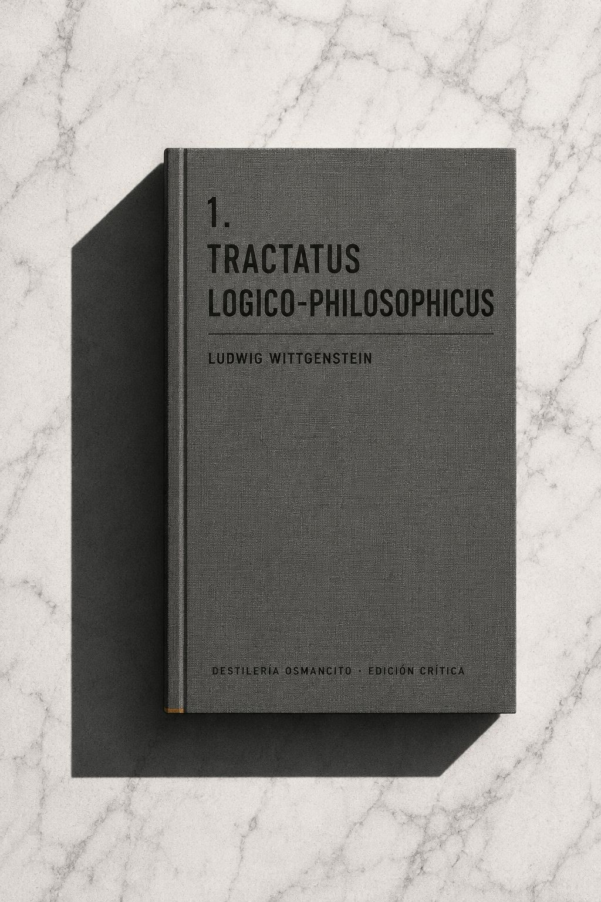
Un libro delgado, de tela gris pizarra con lomo angosto, visto de frente sobre una superficie de mármol blanco. Tipografía geométrica sans-serif, distribuido en dos líneas con jerarquía decimal —como si el título mismo fuera una proposición numerada. Una sombra perfecta cae a la izquierda del libro —demasiado nítida, demasiado geométrica, como si la sombra fuera más sólida que el objeto que la produce.
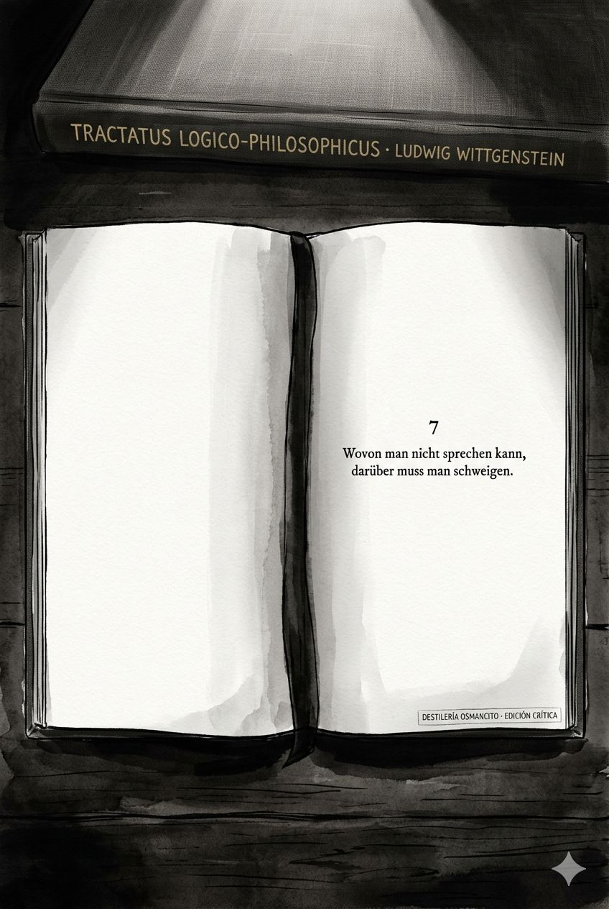
El libro abierto en su última página: la proposición 7, sola en el centro del folio derecho, en medio de un blanco que lo rodea como agua. “De lo que no se puede hablar, hay que callar.”
El Tractatus irradia una cosa antes de ser leído: la sensación de estar en el umbral de algo que ya ocurrió. No hay proceso en este libro —hay resultado. El mundo ya fue determinado por los hechos. El lenguaje ya tiene sus límites. Lo que no puede decirse ya está en silencio. El libro llega como un mapa hecho después del viaje, no durante. Su temperatura emocional es la de la certeza que costó demasiado.
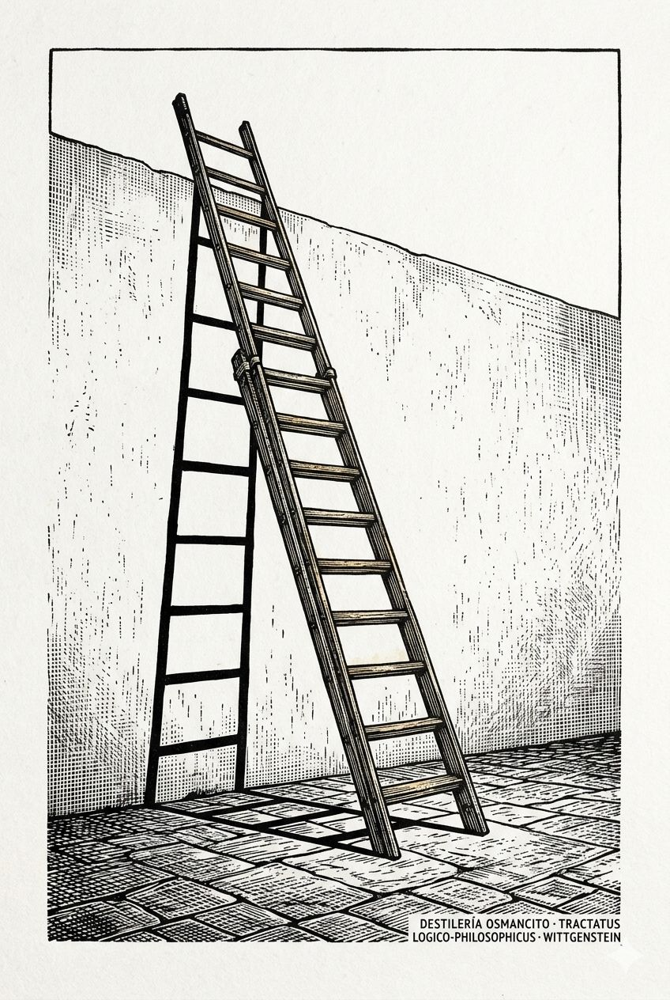
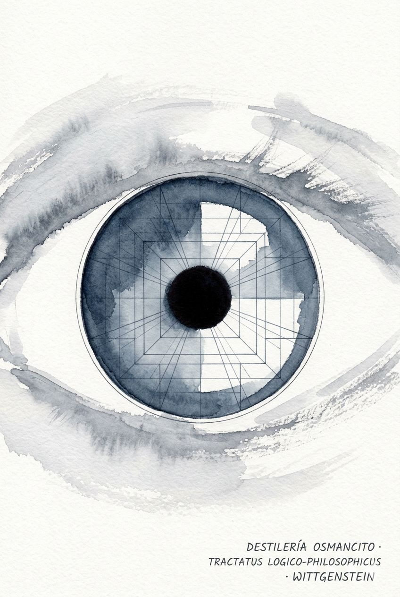
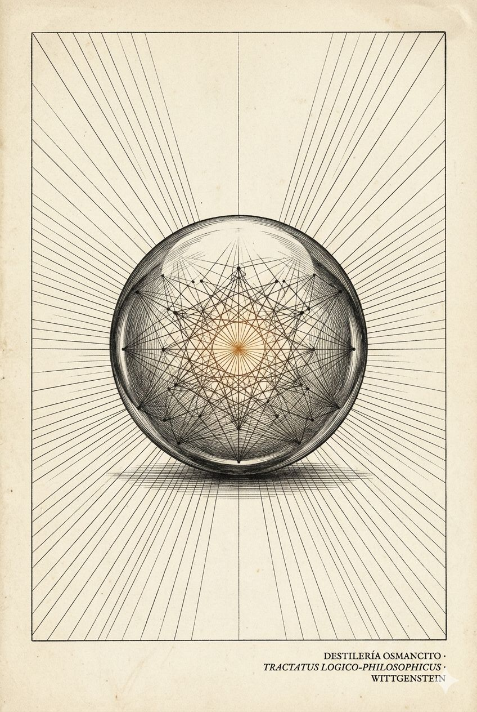
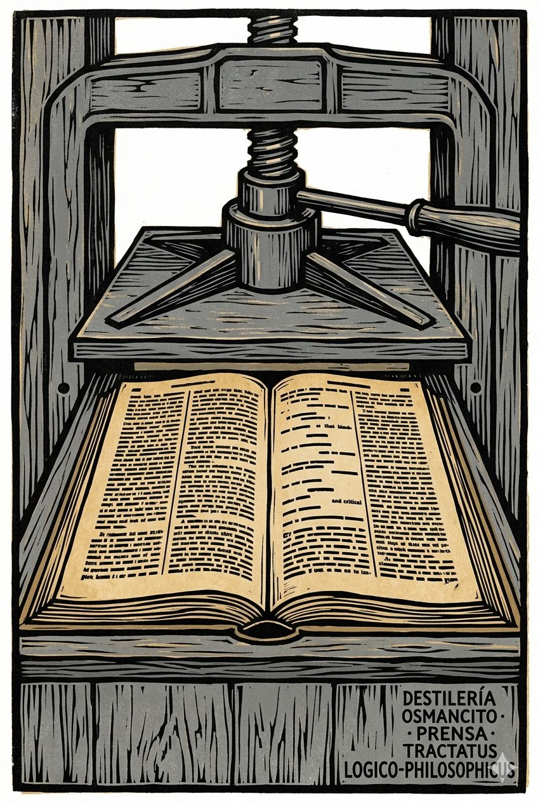
Este libro quizás solo sea comprendido por alguien que ya haya pensado por sí mismo los pensamientos aquí expresados, o al menos pensamientos similares.
Todo el sentido del libro podría resumirse en estas palabras: lo que puede decirse en absoluto puede decirse claramente; y sobre lo que no se puede hablar, sobre eso hay que guardar silencio.
El libro pretende así trazar un límite al pensar, o mejor, no al pensar sino a la expresión de los pensamientos: pues para trazar un límite al pensar deberíamos poder pensar ambos lados de este límite (es decir, deberíamos poder pensar lo que no puede pensarse).
El límite solo podrá ser trazado en el lenguaje y lo que queda al otro lado del límite será simplemente un sinsentido.
Me parece que la verdad de los pensamientos aquí comunicados es inexpugnable y definitiva. Soy de la opinión de que los problemas han quedado esencialmente resueltos definitivamente.
El mundo es todo lo que es el caso.
El mundo es la totalidad de los hechos, no de las cosas.
Los hechos en el espacio lógico son el mundo.
El mundo se divide en hechos.
Lo que es el caso, el hecho, es la obtención de estados de cosas.
En la lógica nada es accidental: si una cosa puede aparecer en un estado de cosas, entonces la posibilidad del estado de cosas debe ya estar prefigurada en la cosa.
Los objetos forman la sustancia del mundo. Por eso no pueden ser compuestos.
Si el mundo no tuviera sustancia, entonces que una proposición tuviera sentido dependería de que otra proposición fuera verdadera.
La sustancia es lo que subsiste independientemente de lo que sea el caso.
Nos hacemos imágenes de los hechos.
Una imagen es un modelo de la realidad.
Una imagen es un hecho.
Una imagen no puede, sin embargo, representar su forma de representación; la muestra.
Lo que toda imagen, sea cual sea su forma, debe tener en común con la realidad para poder representarla en absoluto —correcta o incorrectamente— es la forma lógica, es decir, la forma de la realidad.
Una imagen lógica puede representar el mundo.
Lo que una imagen representa es su sentido.
Para decir si una imagen es verdadera o falsa, debemos compararla con la realidad.
No existe ninguna imagen verdadera a priori.
Una imagen lógica de los hechos es un pensamiento.
No podemos pensar nada ilógico, porque de lo contrario tendríamos que pensar ilógicamente.
En una proposición un pensamiento se expresa perceptiblemente.
Una proposición no es una mezcla de palabras. —(Del mismo modo que un tema musical no es una mezcla de notas.) Una proposición es articulada.
Solo los hechos pueden expresar un sentido, una clase de nombres no puede.
A los objetos solo puedo nombrarlos. Los signos los representan. Solo puedo hablar de ellos, no puedo enunciarlos. Una proposición solo puede decir cómo es una cosa, no qué es.
Solo la proposición tiene sentido; solo en el contexto de una proposición tiene un nombre significado.
Un pensamiento es una proposición con sentido.
La totalidad de las proposiciones es el lenguaje.
La mayoría de las proposiciones y cuestiones que han sido formuladas sobre asuntos filosóficos no son falsas sino absurdas. De modo que no podemos responder en absoluto preguntas de este tipo, sino solo mostrar su absurdidad.
Toda la filosofía es ‘crítica del lenguaje’.
Una proposición es una imagen de la realidad. Una proposición es un modelo de la realidad tal como la concebimos.
Una proposición muestra su sentido. Una proposición muestra cómo están las cosas si es verdadera. Y dice que están así.
El fin de la filosofía es la aclaración lógica de los pensamientos. La filosofía no es un conjunto de doctrinas sino una actividad.
Lo que puede mostrarse no puede decirse.
Todo lo que puede pensarse en absoluto puede pensarse claramente. Todo lo que puede enunciarse puede enunciarse claramente.
Una proposición puede representar la totalidad de la realidad, pero no puede representar lo que ha de tener en común con la realidad para poder representarla —la forma lógica.
Una proposición no puede representar la forma lógica; la forma lógica se refleja en la proposición.
Una proposición es una función de verdad de proposiciones elementales.
No podemos inferir sucesos futuros de los presentes. La superstición es la creencia en el nexo causal.
Todas las proposiciones de la lógica, sin embargo, dicen lo mismo. Es decir, nada.
Precisar la esencia de la proposición es precisar la esencia de toda descripción, y con ello la esencia del mundo.
Los límites de mi lenguaje significan los límites de mi mundo.
El mundo y la vida son uno.
Yo soy mi mundo. (El microcosmos.)
No hay sujeto pensante, representante.
El sujeto no pertenece al mundo sino que es un límite del mundo.
El yo filosófico no es el ser humano, no es el cuerpo humano ni el alma humana de la que se ocupa la psicología, sino el sujeto metafísico, el límite —no una parte— del mundo.
Las proposiciones de la lógica son tautologías.
La lógica no es un conjunto de doctrinas sino un espejo del mundo. La lógica es trascendental.
No existe ninguna compulsión de que algo suceda porque otra cosa haya sucedido. Solo existe la necesidad lógica.
Todas las proposiciones tienen el mismo valor.
El sentido del mundo debe quedar fuera del mundo.
Por eso no puede haber proposiciones de ética. Las proposiciones no pueden expresar nada más alto.
Si el querer bueno o malo altera el mundo, solo puede alterar los límites del mundo, no los hechos; no lo que puede expresarse con el lenguaje.
Así como en la muerte el mundo no se altera sino que cesa.
La muerte no es un acontecimiento de la vida. La muerte no se vive.
No el cómo es el mundo sino el que es, es lo místico.
Cuando la respuesta no puede formularse, tampoco la pregunta puede formularse. El enigma no existe.
La solución al problema de la vida está en la desaparición del problema.
El método correcto de la filosofía sería propiamente este: no decir nada salvo lo que puede decirse, es decir, proposiciones de la ciencia natural —es decir, algo que nada tiene que ver con la filosofía—; y entonces, siempre que alguien quisiera decir algo metafísico, mostrarle que no ha dado significado a ciertos signos en sus proposiciones.
Mis proposiciones dilucidan así: quien me comprende las reconoce al final como absurdas, cuando mediante ellas —sobre ellas— ha salido fuera de ellas. (Deben, por así decirlo, superar la escalera habiéndola utilizado para subir.) Deben superar estas proposiciones; entonces ven el mundo correctamente.
De lo que no se puede hablar, sobre eso hay que guardar silencio.
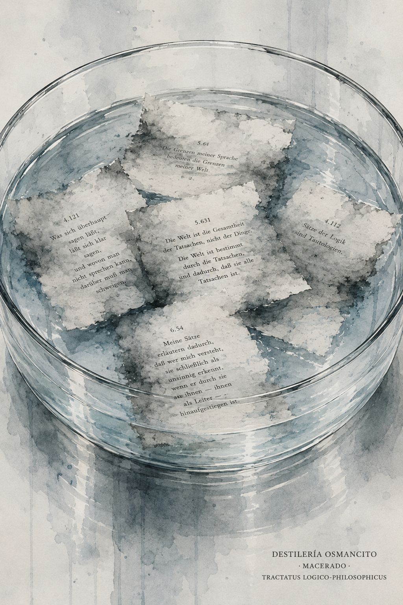
L.W. · Viena, 1918 A la memoria de mi amigo D.H.P.
Todo lo que puede pensarse puede pensarse claramente. Todo lo que puede decirse puede decirse. Lo que no puede decirse debe callarse.
1. El mundo es todo lo que es el caso.
1.1 El mundo es la totalidad de los hechos, no de las cosas.
1.11 El mundo está determinado por los hechos y por ser estos todos los hechos.
1.2 El mundo se divide en hechos.
1.21 Algo puede ser el caso o no serlo, y todo lo demás permanecer igual.
2. Lo que es el caso, un hecho, es la obtención de estados de cosas.
2.01 Un estado de cosas es una combinación de objetos.
2.011 Es esencial a una cosa que pueda ser parte constitutiva de un estado de cosas.
2.012 En la lógica nada es accidental. Si una cosa puede ocurrir en un estado de cosas, la posibilidad de ese estado de cosas debe estar ya prefigurada en la cosa.
2.02 El objeto es simple.
2.1 Nos hacemos imágenes de los hechos.
2.12 La imagen es un modelo de la realidad.
2.141 La imagen es un hecho.
2.18 Lo que toda imagen, sea cual sea su forma, debe tener en común con la realidad para poder representarla —correcta o incorrectamente— es la forma lógica, es decir, la forma de la realidad.
2.19 La imagen lógica puede representar el mundo.
3. La imagen lógica de los hechos es el pensamiento.
3.001 Un estado de cosas es pensable significa: podemos hacernos una imagen de él.
3.01 La totalidad de los pensamientos verdaderos es una imagen del mundo.
3.1 En la proposición el pensamiento se expresa de modo perceptible.
3.12 Llamo signo proposicional al signo mediante el cual expresamos el pensamiento. Y la proposición es el signo proposicional en su relación proyectiva con el mundo.
3.2 En la proposición el pensamiento puede expresarse de tal modo que a los objetos del pensamiento correspondan elementos del signo proposicional.
3.3 Solo la proposición tiene sentido; solo en el contexto de la proposición tiene nombre un nombre.
4. El pensamiento es la proposición con sentido.
4.001 La totalidad de las proposiciones es el lenguaje.
4.003 La mayoría de las proposiciones e interrogantes que se han escrito sobre asuntos filosóficos no son falsas sino absurdas. Por eso no podemos responder en absoluto a preguntas de esta clase, sino solo constatar su absurdidad.
4.01 La proposición es una imagen de la realidad. La proposición es un modelo de la realidad tal como la pensamos.
4.1 Las proposiciones representan la obtención o no obtención de estados de cosas.
4.11 La totalidad de las proposiciones verdaderas es la ciencia natural total.
4.12 La proposición puede representar la realidad entera, pero no puede representar lo que debe tener en común con la realidad para poder representarla: la forma lógica.
4.121 La proposición no puede representar la forma lógica; esta se refleja en ella. Lo que se refleja en el lenguaje, el lenguaje no puede representarlo. Lo que se expresa en el lenguaje, nosotros no podemos expresarlo por medio del lenguaje. La proposición muestra la forma lógica de la realidad.
4.1212 Lo que puede mostrarse no puede decirse.
4.461 La proposición muestra lo que dice; la tautología y la contradicción muestran que no dicen nada. La tautología no tiene condiciones de verdad, pues es incondicionalmente verdadera; y la contradicción no es verdadera bajo ninguna condición. Tautología y contradicción carecen de sentido.
5. La proposición es una función de verdad de las proposiciones elementales.
5.1 Las funciones de verdad pueden ordenarse en series. Este es el fundamento de la teoría de la probabilidad.
5.4 Aquí se muestra que no hay objetos lógicos, ni constantes lógicas en el sentido de Frege y Russell.
5.5563 Todas las proposiciones de nuestro lenguaje coloquial están, tal como son, lógicamente en perfecta regla.
5.6 Los límites de mi lenguaje significan los límites de mi mundo.
5.61 La lógica llena el mundo; los límites del mundo son también los suyos. No podemos decir en lógica: esto hay en el mundo y aquello no. Eso presupone que excluimos ciertas posibilidades, lo que no puede ser el caso, puesto que de otro modo la lógica debería traspasar los límites del mundo; como si pudiera contemplar estos límites también desde el otro lado. Lo que no podemos pensar no podemos pensarlo; por lo tanto, tampoco podemos decir lo que no podemos pensar.
5.621 El mundo y la vida son una sola cosa.
5.63 Yo soy mi mundo. (El microcosmos.)
5.631 No hay ningún sujeto que piense o tenga representaciones. Si escribiera un libro titulado El mundo tal como lo encontré, debería hablar también de mi cuerpo y decir qué miembros obedecen a mi voluntad y cuáles no, etc.; este sería un método para aislar el sujeto, o más bien para mostrar que en sentido importante no hay ningún sujeto: pues de él solo no podría tratarse en ese libro.
5.641 Hay, pues, realmente un sentido en el que en la filosofía puede hablarse de un yo no psicológico. El yo hace su aparición en la filosofía por el hecho de que el mundo es mi mundo. El yo filosófico no es el ser humano, no es el cuerpo humano ni el alma humana de la que trata la psicología, sino el sujeto metafísico, el límite —no una parte— del mundo.
6. La forma general de la función de verdad es: [p̄, ξ̄, N(ξ̄)]. Esta es la forma general de la proposición.
6.1 Las proposiciones de la lógica son tautologías.
6.13 La lógica no es una doctrina sino un reflejo especular del mundo. La lógica es trascendental.
6.4 Todas las proposiciones tienen igual valor.
6.41 El sentido del mundo debe estar fuera del mundo. En el mundo todo es como es y todo sucede como sucede; en él no hay ningún valor, y si lo hubiera no tendría ningún valor. Si hay un valor que tenga valor, debe estar fuera de todo lo que sucede y de todo ser-así. Pues todo lo que sucede y todo ser-así son accidentales. Lo que los hace no accidentales no puede estar en el mundo, pues de lo contrario sería a su vez accidental. Debe estar fuera del mundo.
6.421 Está claro que la ética no puede expresarse. La ética es trascendental. (Ética y estética son una y la misma cosa.)
6.44 No cómo es el mundo es lo místico, sino que es.
6.45 La contemplación del mundo sub specie aeterni es su contemplación como totalidad limitada. El sentimiento del mundo como totalidad limitada es lo místico.
6.5 De una respuesta que no puede expresarse, tampoco puede expresarse la pregunta. No hay enigma. Si una pregunta puede plantearse en absoluto, también puede responderse.
6.521 La solución al problema de la vida se advierte en la desaparición del problema. (¿No es esta la razón por la que quienes encontraron el sentido de la vida después de largas dudas no pudieron decir en qué consistía ese sentido?)
6.522 Hay, sin embargo, lo inexpresable. Esto se muestra, es lo místico.
6.54 Mis proposiciones son elucidaciones en el siguiente sentido: quien me comprende acaba por reconocerlas como absurdas, cuando mediante ellas —sobre ellas— ha salido por encima de ellas. Debe superar estas proposiciones; entonces ve el mundo correctamente. (Debe arrojar la escalera después de haber subido por ella.)
7. De lo que no se puede hablar, hay que callar.
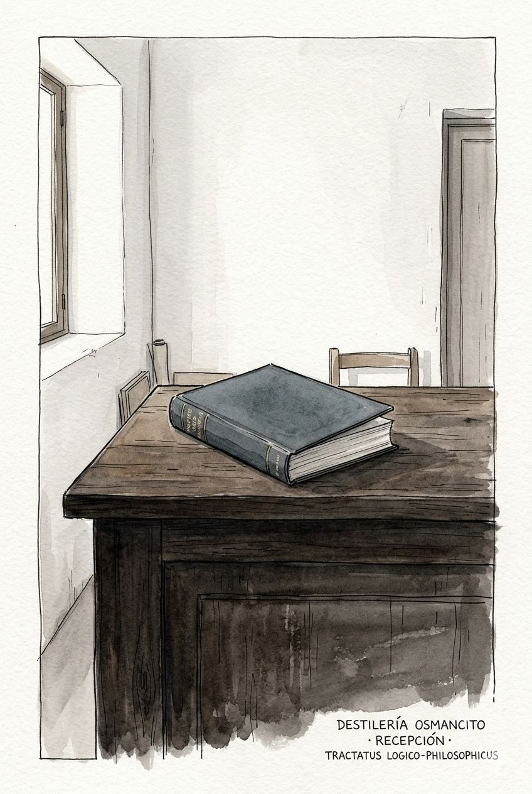
El libro dice que hay cosas que no pueden decirse — y lo dice. Esa contradicción no es un error: es la trampa que Wittgenstein construyó a propósito, y la última proposición es la confesión de que él mismo cayó en ella. Lo que permanece después de cerrar el Tractatus no es una doctrina sino una extraña sensación de haber subido una escalera que luego desapareció bajo los pies.
Un libro delgado, numerado como teoremas, que pesa más de lo que sus páginas justifican.
Acusar un corpus es distinto de resumir lo que dice. Este llega ya acusándose solo: su forma es su argumento antes de que empiece la primera proposición. No hay narración, no hay capítulos, no hay transición de una idea a la siguiente — hay una estructura decimal que imita la lógica que describe. El Tractatus no se lee; se atraviesa. Y al atravesarlo, el lector descubre que el libro estaba hablando de él desde el principio.
Título — Tractatus Logico-Philosophicus Autor — Ludwig Wittgenstein Año — 1921 (publicación original en alemán; traducción inglesa de Ogden, 1922) Género — Tratado filosófico Extensión estimada — Aprox. 18.000 palabras · 72 páginas · 516 proposiciones numeradas organizadas en 7 proposiciones principales con ramificaciones decimales Idioma original — Alemán (Logisch-philosophische Abhandlung) Palabra más frecuente con contenido — proposition (proposición). Confirma: el corpus declara ser un tratado sobre la lógica del lenguaje, y su palabra más frecuente es el nombre de la unidad básica de ese lenguaje. No hay desvío. Hay coherencia radical.
El Tractatus propone que el mundo es la totalidad de los hechos, no de las cosas; que el lenguaje es una imagen de esos hechos; y que todo lo que puede decirse puede decirse claramente, mientras que lo que no puede decirse debe guardarse en silencio. El libro avanza desde la metafísica del mundo (proposiciones 1–2) hacia la lógica del lenguaje (3–5), luego hacia los límites de lo decible (6), y termina en una sola proposición que es al mismo tiempo conclusión y colapso de todo lo anterior. La paradoja central: el libro entero viola sus propias reglas al intentar decir lo que solo puede mostrarse.
Ludwig Wittgenstein — el autor, que escribió el libro durante la Primera Guerra Mundial mientras combatía en el frente austro-húngaro; heredero de una de las familias más ricas de Viena, que renunció a su fortuna; discípulo de Russell que terminó por superar a su maestro en precisión y en ambición. Gottlob Frege — matemático y lógico alemán al que Wittgenstein reconoce como fuente central; su teoría del sentido y la referencia opera como suelo tácito. Bertrand Russell — filósofo y matemático inglés, mentor de Wittgenstein, quien escribió el prólogo de la edición inglesa con una interpretación que Wittgenstein consideró errónea.
El Tractatus no narra: construye. Su movimiento es la excavación de una sola idea desde siete ángulos que se vuelven progresivamente más angostos. La proposición 1 abre el mundo como totalidad de hechos; la 2 introduce los hechos atómicos como constituyentes del mundo y los objetos como sus elementos simples e indestructibles. La proposición 3 establece que el pensamiento es la imagen lógica de los hechos, y que la proposición es la expresión perceptible de ese pensamiento. La 4 desarrolla la teoría pictórica: la proposición es una imagen de la realidad porque comparte su forma lógica con lo que representa. La 5 entra en la lógica de las funciones de verdad: todas las proposiciones complejas son funciones de verdad de proposiciones elementales, y la lógica no dice nada sobre el mundo sino que muestra su andamiaje. La 6 alcanza el límite: tautologías y contradicciones no dicen nada; las proposiciones de la ciencia natural dicen todo lo que puede decirse; lo ético, lo estético y lo místico no pueden decirse — solo mostrarse. La proposición 7, sin comentarios, cierra: Whereof one cannot speak, thereof one must be silent. El libro entero es la escalera que debe tirarse después de subirla.
Hay libros que argumentan. Hay libros que demuestran. El Tractatus hace algo más incómodo: legisla. Llega con la convicción de que los problemas de la filosofía no son problemas sino malentendidos, y que él los ha resuelto — no disuelto, resuelto. Esa arrogancia no es pose: es el tono inevitable de alguien que creyó haber visto el fondo. Lo que produce en quien lo recibe no es acuerdo ni desacuerdo sino algo más extraño: la sensación de haber sido llevado hasta el borde de algo y luego dejado ahí, mirando hacia abajo, sin que el libro explique qué hay en el fondo. Porque el fondo es precisamente lo que no puede decirse.
Decir / mostrar — El Tractatus sostiene que la forma lógica no puede decirse sino solo mostrarse; pero el libro entero es el intento de decir exactamente eso. La tensión no se resuelve: se radicaliza hasta que la última proposición convierte al libro en su propia refutación.
El límite del lenguaje como límite del mundo — Wittgenstein no dice que haya cosas que no existen; dice que hay cosas que no pueden pensarse porque no pueden decirse. El mundo del Tractatus es coextensivo con el lenguaje. Lo que queda afuera no es oscuridad — es simplemente afuera. Esa ecuación, si se acepta, tiene consecuencias que el libro prefiere no enumerar.
La frialdad del método y el fuego que esconde — El aparato formal — los números decimales, la lógica simbólica, la economía radical de la prosa — oculta lo que el corpus carga sin nombrarlo: una angustia sobre el sentido de la vida, la ética, la muerte, Dios. Todo eso llega al final, en las proposiciones 6.4 en adelante, como si el libro hubiera construido una fortaleza de lógica solo para confesar, en el último cuarto, que lo que más le importaba no cabía dentro.
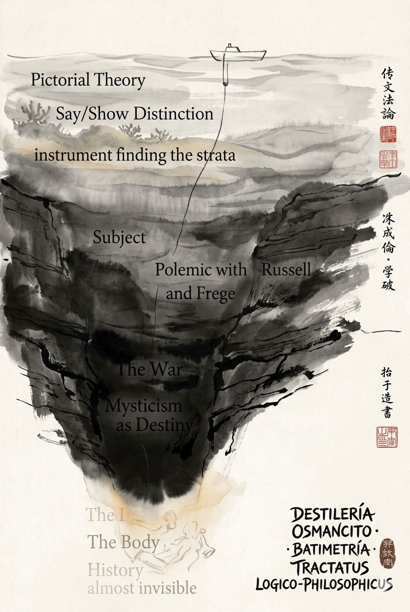
El Tractatus tiene la superficie de un sistema y el fondo de una confesión. La lógica es la coraza; debajo, sepultadas bajo capas de numeración decimal, están la ética, Dios, la muerte y la pregunta de para qué vale la pena vivir — temas que el libro, según sus propias reglas, no debería poder tocar. Lo que opera más profundo no es la ontología del hecho atómico: es el miedo a que el sentido no pueda ser dicho, y la esperanza de que mostrarse sea suficiente.
La teoría pictórica del lenguaje. La proposición como imagen de un hecho posible, la forma lógica como lo que imagen y hecho comparten: esto es lo que el corpus entrega inmediatamente, en la superficie de sus proposiciones 2–4. No requiere excavación. Es lo que el Tractatus cree ser.
La distinción decir / mostrar. Que la forma lógica no puede decirse sino solo mostrarse — proposición 4.121 en adelante — es uno de los dos o tres movimientos más explícitos del texto. Visible, reiterado, declarado.
El límite del lenguaje como límite del mundo. “Los límites de mi lenguaje significan los límites de mi mundo” (5.6). Está en la superficie. Es la sentencia que los lectores recuerdan.
La estructura decimal como argumento. La numeración no es decoración: es el argumento mismo puesto en forma visible. El corpus muestra su jerarquía lógica antes de que empiece la primera proposición.
La pregunta del sujeto. El yo aparece en el Tractatus de manera lateral, esquiva, cubierta por el aparato lógico. La proposición 5.6 habla del “sujeto del lenguaje” como límite del mundo, no como habitante del mundo. Hay un sujeto en el corpus — pero está sepultado bajo la impersonalidad del método. Para encontrarlo hay que aplicar presión sostenida sobre las proposiciones 5.6–5.641.
La presencia de Russell y Frege como interlocutores invisibles. El Tractatus es una conversación, no un monólogo. Sus correcciones a Russell (la paradoja de los tipos, la notación) y a Frege (la teoría del sentido de las proposiciones) son argumentos camuflados de enunciados. El corpus no tiene capítulo de polémica porque no lo necesita: la polémica está en los huesos de cada proposición que afina o desmonta un concepto anterior.
La arrogancia como dispositivo retórico. “Los problemas han sido resueltos en lo esencial.” La afirmación está en el prefacio, al principio, y el lector puede pasar sobre ella. Pero sepultada en la estructura del libro hay una postura más extraña: el Tractatus no argumenta por qué tiene razón — asevera y construye. La confianza no está explicada: está incorporada a la forma. Requiere ser desenterrada para ser examinada.
La guerra como condición de producción. El libro fue escrito en el frente austro-húngaro durante la Primera Guerra Mundial, en cuadernos de trinchera. Eso no aparece en ninguna proposición. Pero la urgencia de encontrar lo que es indestructible — los objetos simples que permanecen independientemente de lo que ocurra en el mundo — lleva la temperatura de alguien que necesita que algo no pueda ser destruido. Propuesta, no certeza: la ontología del Tractatus puede leerse como metafísica bajo fuego.
El misticismo como resultado, no como punto de partida. Las proposiciones 6.4–6.522 llegan al final como si fueran la conclusión lógica de lo anterior. Pero operan de otra manera: son lo que el libro quería decir desde el principio, y todo el andamiaje lógico fue construido para llegar aquí sin que pareciera un salto. Lo místico no está en la superficie ni está sepultado — está cifrado en la dirección de todo el argumento, visible solo cuando se lee el corpus desde el final hacia el principio.
El silencio como acto performativo. La proposición 7 no es una conclusión: es una demostración. El corpus termina haciendo lo que dice que debe hacerse. Ese gesto — guardar silencio sobre lo que no puede decirse, después de haber hablado — es el único momento del libro en que la forma y el contenido colapsan en una sola cosa. Opera como cifra porque la mayoría de los lectores lo reciben como aforismo, no como acto.
La ética como tratado no escrito. Wittgenstein escribió en una carta a su editor que el Tractatus tenía dos partes: la escrita, y la parte no escrita — que era la más importante. La parte no escrita era la ética. Eso ha desaparecido del corpus, pero su cicatriz es visible: las proposiciones 6.4–6.43 abren una ventana y la cierran en dos páginas. La presencia de lo ético en el texto es exactamente su ausencia explicada.
El yo biográfico. El Wittgenstein que renunció a su fortuna, que consideró el suicidio en múltiples momentos de su vida, que vivía en una tensión permanente entre su clase de origen y su vocación filosófica: esa persona fue borrada del texto de manera sistemática. No quedó un rasgo subjetivo, un vaivén, una duda enunciada como duda. La prosa es la prosa de alguien que borró al autor.
El interlocutor. El Tractatus no tiene un “tú”. No hay un lector imaginado al que se dirige, no hay una voz que responde, no hay diálogo. El prefacio advierte que el libro solo será entendido por quien ya pensó los mismos pensamientos. Eso no es modestia: es la eliminación anticipada del interlocutor que no está a la altura. La forma del libro hace imposible la conversación.
La historia. No hay tiempo en el Tractatus. Los hechos son, o no son. No devienen. La historicidad — cómo las proposiciones llegaron a significar lo que significan, cómo el lenguaje cambia, cómo los usos se sedimentan — está completamente ausente. Esa ausencia no es accidental: es la condición de posibilidad del sistema.
El cuerpo. El lenguaje del Tractatus no tiene carne. La percepción aparece brevemente (2.0131: “una mancha en el campo visual debe tener color”) pero como ejemplo lógico, no como experiencia. El cuerpo que habla, que siente el peso de las palabras, que titubea — no existe en este corpus. Su ausencia es la ausencia que hace posible la frialdad del método.
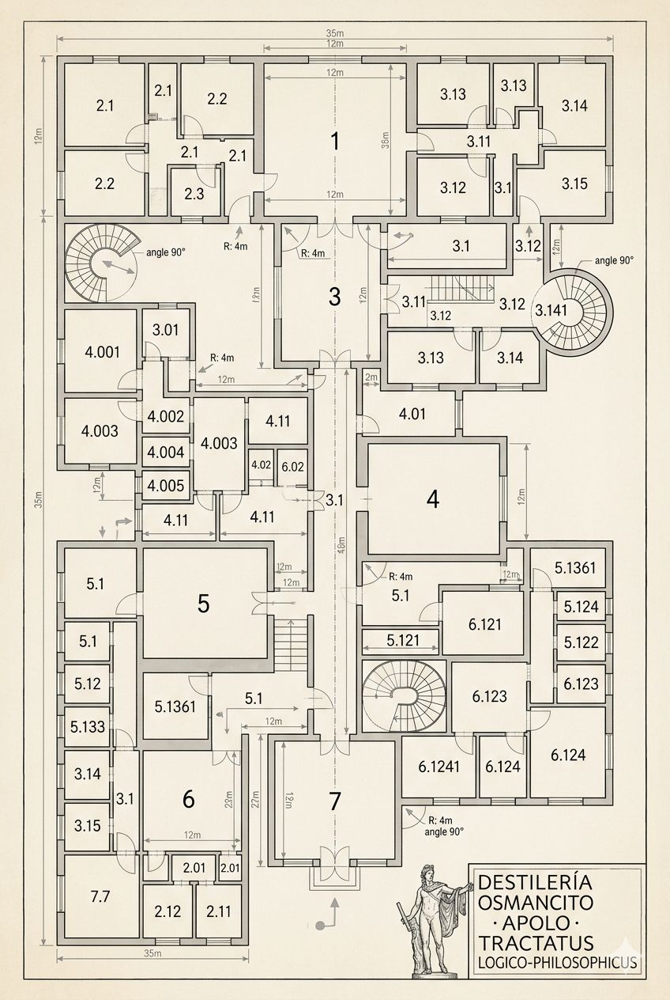
La arquitectura del Tractatus hace exactamente lo que sus proposiciones dicen que el lenguaje hace: muestra lo que no puede decir. El sistema decimal no es un método de organización — es el argumento mismo puesto en forma visible antes de que empiece la primera palabra. Pero hay una fisura en el edificio que Wittgenstein conocía y no podía reparar: las proposiciones que describen los límites del lenguaje están, por definición, fuera de esos límites. El libro aguanta — y se derrumba — al mismo tiempo, y esa doble condición es su mayor logro estructural.
La viga maestra del Tractatus es la identidad entre estructura lógica del lenguaje y estructura del mundo: el lenguaje puede decir todo lo que puede ser dicho porque la proposición es una imagen del hecho, y la imagen comparte su forma lógica con lo que representa. De esa identidad se derivan todas las demás proposiciones del libro.
¿Aguanta? Casi. La teoría pictórica es internamente coherente con una condición que el texto mismo declara: los objetos simples — los átomos que la proposición refleja — nunca son especificados. Wittgenstein los postula sin exhibirlos. Es la única grieta estructural del sistema antes de llegar a la proposición 6: el edificio descansa sobre un fundamento que el arquitecto no muestra porque no puede mostrarlo sin violar sus propias reglas. Todo el peso cae sobre una base que solo existe como necesidad lógica, no como exhibición.
Tres presiones operan sobre el corpus desde afuera:
La herencia de Frege y Russell. El Tractatus nace en conversación directa con la lógica matemática de fin de siglo XIX y principios del XX. Su teoría de la proposición como imagen es una respuesta — y una corrección — a la teoría de Frege del sentido y la referencia, y a la teoría de Russell de las descripciones. Wittgenstein no cita estas deudas en el cuerpo del texto; las asume como suelo y construye encima. Esa invisibilidad de las fuentes es una decisión retórica que le da al Tractatus su apariencia de sistema surgido de la nada.
La tradición del tratado filosófico. El Tractatus se presenta como heredero de Spinoza — geometría more demonstrato — pero sin axiomas explícitos y sin demostraciones formales. La forma decimal imita el rigor sin serlo. Es una performance de rigor más que rigor mismo, y esa tensión entre apariencia y sustancia es en parte producto de la tradición que Wittgenstein quiere habitar y superar al mismo tiempo.
La Primera Guerra Mundial. El corpus fue escrito entre 1914 y 1918, en cuadernos de campaña. La guerra no aparece en ninguna proposición, pero su presión es estructural: la urgencia de encontrar lo que es indestructible — objetos simples que no pueden ser alterados por ningún estado de cosas — tiene la temperatura de alguien que necesita que algo permanezca independientemente de la destrucción que lo rodea.
La estructura decimal es el hallazgo formal del Tractatus y su mayor logro arquitectónico. Cada proposición numerada N es el tronco; las proposiciones N.1, N.2, N.3 son ramas; N.11, N.12, N.21 son sub-ramas. El sistema crea una jerarquía lógica visible antes de que empiece la lectura: el lector sabe, por la posición del número, qué tan cerca está del argumento principal.
El movimiento interno del texto sigue una doble lógica. La primera: centrípeta. Cada sección comprime la anterior hasta extraer su forma lógica mínima. La proposición 1 abre el mundo como totalidad de hechos; la 5.6 comprime esa apertura hasta un punto — “los límites de mi lenguaje son los límites de mi mundo” — que no puede ser comprimido más. La segunda: centrífuga, pero solo en la superficie. Las sub-proposiciones se dispersan en ejemplos, digresiones técnicas, correcciones a Frege y Russell — pero cada dispersión regresa al tronco decimal. No hay digresión genuina en el Tractatus: todo es ramificación controlada.
A nivel de la frase: la prosa del Tractatus opera por reducción sucesiva. Las proposiciones más largas del corpus son las que introducen conceptos nuevos (2.1, 4.014, 6.341). Las más cortas son las que los revelan en su forma desnuda: “The picture is a fact” (2.141). “What can be shown cannot be said” (4.1212). “Death is not an event of life” (6.4311). La reducción no es simplificación — es destilación. Cada proposición corta es el residuo de un proceso de evaporación que el libro no muestra: la prueba fue hecha en los cuadernos, no aquí.
La elipsis es el dispositivo sintáctico dominante. El Tractatus suprime sistemáticamente los pasos intermedios del argumento. Entre la proposición 5.641 — el yo metafísico como límite del mundo — y la proposición 6 — la forma general de la función de verdad — hay un salto que ninguna sub-proposición cubre. Esos saltos no son fallas: son el libro confiando en que el lector ya subió la mitad de la escalera.
El corpus opera sobre dos verdades que no puede nombrar directamente:
Que el sentido no puede ser fundado. El Tractatus concluye que el sentido del mundo debe estar fuera del mundo (6.41), que no puede haber proposiciones éticas (6.42), que la solución al problema de la vida es la desaparición del problema (6.521). Pero esas conclusiones no son nihilismo: son la forma que toma la certeza de que el sentido existe cuando se acepta que no puede decirse. El libro opera sobre la convicción de que hay algo — inexpresable, indestructible — que hace que valga la pena vivir. Lo practica sin nombrarlo.
Que la claridad es una forma de piedad. La eliminación del aparato retórico, la reducción de la prosa al hueso, la negativa a argumentar cuando basta con mostrar: todo eso es un acto ético antes de ser un método filosófico. El Tractatus trata al lenguaje con la seriedad de quien sabe que el lenguaje maltratado es pensamiento maltratado, y pensamiento maltratado es vida mal vivida.
Wittgenstein proyecta sobre el corpus su tendencia más característica: la confusión entre el fin de su problema y el fin del problema. El prefacio declara que los problemas de la filosofía han sido resueltos en lo esencial. Esa declaración no es arrogancia ingenua — es la sombra de alguien que confunde la clausura de su propio sistema con la clausura de la cuestión. La historia de la recepción del Tractatus es en gran parte la historia de esa confusión siendo descubierta: primero por el Círculo de Viena, que lo leyó como positivismo; luego por el propio Wittgenstein, que en las Investigaciones lo desmanteló desde adentro.
Lo que el autor evita sistemáticamente: cualquier forma de incertidumbre enunciada como incertidumbre. El Tractatus no dice “creo que” ni “parece que” ni “quizás”. Avanza por aseveración. Eso es una elección retórica que refleja la personalidad del autor — y que produce, paradójicamente, el efecto opuesto al que busca: donde el texto más asevera, el lector más desconfía.
Lo que el autor revela sin proponérselo: una soledad radical. El libro que declara haber resuelto los problemas es también el libro que concluye que esos problemas nunca pudieron ser dichos. Ese movimiento — la construcción de un sistema para demostrar que el sistema no alcanza — es el autorretrato de alguien que necesita el rigor exactamente porque lo que le importa está más allá de él.
El Tractatus declara ser un tratado sobre los límites del lenguaje y la lógica. Eso es lo que trae. Lo que trae realmente es distinto: es un intento de hacer habitable un mundo que perdió su sentido garantizado. La guerra, la renuncia a la fortuna, el peso de ser el heredero de una familia que produjo músicos y suicidios — todo eso está en la carga real del corpus aunque ninguna proposición lo mencione. El libro que parece el más impersonal de la filosofía del siglo XX es, en su carga real, profundamente autobiográfico. La forma le pertenece a la lógica; el impulso le pertenece a un hombre que necesitaba encontrar lo que no podía ser destruido.
El imán — Form (forma). No proposition (proposición), que es la palabra más frecuente, sino form, que es el concepto que curva todo lo demás. La forma es lo que imagen y hecho tienen en común, lo que hace posible la representación, lo que lógica y mundo comparten, lo que no puede decirse sino solo mostrarse. Todo el sistema converge en la forma como condición de posibilidad.
Tipo de curvatura — sobre concepto abstracto. Form no es un nombre propio ni un pronombre ni un vacío: es una abstracción que opera como condición de posibilidad de todo lo demás. Su gravitación es invisible desde adentro del sistema — solo se detecta cuando se intenta salir de él.
Sistema secundario — existe un segundo imán: silence / unsayable (lo indecible). Su relación con form es asimétrica y fundamental: la forma es el límite del lenguaje, y lo que está más allá del límite es lo indecible. Los dos imanes forman un sistema en que el primero define el espacio y el segundo define lo que ese espacio excluye. Sin form, no hay límite; sin límite, no hay silencio.
Forma de la red — centralizada. El Tractatus tiene una topología radial: la forma lógica es el centro y todo irradia desde ahí. No hay rutas alternativas entre los nodos; todo pasa por el centro. Es un small-world solo en apariencia — la numeración decimal crea la ilusión de distribución, pero la lógica subyacente es estrictamente jerárquica.
Nodo de mayor integración — proposición 4.121: “Lo que expresa el lenguaje, nosotros no podemos expresarlo por el lenguaje. Las proposiciones muestran la forma lógica de la realidad. La exhiben.” Aquí convergen la teoría pictórica (proposiciones 2–4), la distinción decir/mostrar, la crítica a la metafísica, y el anticipo de la conclusión ética y mística. Es el punto donde más hilos se cruzan.
Coherencia — el imán (form) y el nodo de mayor integración (4.121) coinciden. Esa coincidencia no es accidental: el Tractatus es un sistema excepcionalmente cohesionado. Lo que lo organiza es también lo que lo articula en su punto de mayor densidad. La única divergencia es la proposición 7, que debería ser el nodo de mayor integración si se mide por peso filosófico — pero está casi desconectada de todo lo anterior, como un punto que el grafo no puede alcanzar desde ninguna otra dirección.
El Tractatus produce inagotabilidad mediante la paradoja performativa: el libro viola sus propias reglas al intentar decir lo que solo puede mostrarse, y esa violación —que el propio Wittgenstein reconoce en 6.54— convierte al texto en un objeto que nunca puede ser clausurado desde adentro. Toda lectura que intenta resolver la paradoja produce una nueva versión de ella; toda lectura que intenta ignorarla deja fuera lo esencial del libro.
El Tractatus es uno de los pocos libros del siglo XX que cumple exactamente lo que promete: un sistema que traza el límite del lenguaje y luego demuestra, en su última proposición, que ese límite es real guardando silencio. Lo que le falta no es rigor sino honestidad sobre su fundamento: los objetos simples que sostienen toda la ontología nunca aparecen, y esa ausencia — no declarada como ausencia sino absorbida por el sistema — es la grieta que las Investigaciones Filosóficas tardarán veinte años en ensanchar hasta derrumbar el edificio. El libro vale exactamente el tiempo que cuesta; y quien lo sube y tira la escalera sale con algo que no tenía antes, aunque no pueda decir qué es.
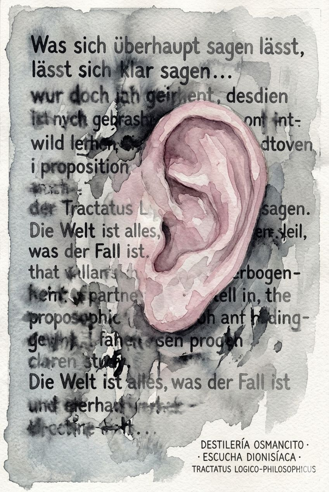
El libro no sube hacia ningún lado: ya había terminado antes de empezar, y lo que lees es el rastro de alguien que describe una escalera que conoce demasiado bien para necesitarla. Lo que te va a quedar no es el argumento sino la presión que se acumula detrás de las proposiciones numeradas —algo que el texto comprime con tanto rigor que de vez en cuando escapa por un resquicio, brevísimo, y las paredes se cierran de nuevo antes de que puedas seguirlo. El sistema no es solo lógica: es compañía, la forma que tiene alguien de no quedarse solo con lo que sabe. Y al final el libro termina en un número sin oración, como un nombre sin fechas, porque llegaste al único lugar al que podías llegar y ese lugar era exactamente este.
La escalera ya estaba en el suelo cuando empecé a leer.
La primera impresión ya lo dice: la escalera estaba en el suelo antes de empezar. Eso significa que el texto no sube hacia ninguna parte. O que subió y ya terminó. O que el suelo es el único lugar donde ocurre algo real.
Con eso en mente, las zonas donde algo palpita:
Prefacio, último párrafo:
“And if I am not mistaken in this, then the value of this work secondly consists in the fact that it shows how little has been done when these problems have been solved.”
La vitalidad aquí es de un hombre que acaba de terminar algo y mira el horizonte vacío que dejó. No triunfo. No alivio. Una especie de vértigo quieto. La energía es la de alguien que llegó al final de una habitación y descubrió que la habitación no tenía paredes pero tampoco nada más.
2.1:
“We make to ourselves pictures of facts.”
De repente el texto respira diferente. Es la primera vez que aparece un nosotros haciendo algo. Hasta aquí el mundo existía solo. Aquí alguien lo mira. La vitalidad es de un umbral: el instante en que el mundo y quien lo observa se encuentran por primera vez en la misma oración.
4.002, el párrafo sobre el lenguaje cotidiano:
“Language disguises the thought; so that from the external form of the clothes one cannot infer the form of the body they clothe…”
Aquí el texto tiene fiebre. El resto del libro habla desde afuera del problema. Aquí el problema habla desde adentro. La energía es de algo que se toca a sí mismo, que el lenguaje describe su propio disfraz usando el disfraz. Hay algo casi físico: ropa, cuerpo, forma oculta.
5.1361–5.1363:
“Superstition is the belief in the causal nexus.” “The freedom of the will consists in the fact that future actions cannot be known now.”
Vitalidad de un destello. El texto lleva cientos de proposiciones siendo muy cuidadoso y de repente dice algo que suena a creencia personal. No a demostración. La energía es la de una voz que se cuela entre las proposiciones, brevísima, y luego desaparece. Alguien estuvo aquí.
5.6–5.641, la sección del solipsismo:
“The limits of my language mean the limits of my world.” “I am my world.”
La vitalidad aquí es de contracción. Como cuando algo se aprieta antes de romperse o antes de volverse completamente quieto. El texto que había estado hablando del mundo en general de repente dice yo. Y luego ese yo se encoge hasta volverse un punto sin extensión. La energía es la del yo disolviéndose a plena vista, sin drama, como si fuera un resultado lógico.
6.4311:
“Death is not an event of life. Death is not lived through.” “If by eternity is understood not endless temporal duration but timelessness, then he lives eternally who lives in the present.”
Aquí el texto deja de ser un libro de lógica y se vuelve algo que no sé cómo nombrar sin las palabras prohibidas. La vitalidad es la de una proposición que sabe que está más allá de lo que el libro permite decir, y lo dice de todas formas, brevemente, como en voz baja. La energía es de algo dicho de pie, de noche.
6.54:
“He must so to speak throw away the ladder, after he has climbed up on it.”
La primera impresión del lector —la escalera ya estaba en el suelo— llega aquí a su lugar. La vitalidad es de un texto que se deshace a sí mismo en el acto de terminar. La energía no es
El texto se contrae.
No avanza hacia algo. Se aprieta hacia un centro que, cuando llegas a él, no está. Como agua que se cierra sobre sí misma y deja un hueco donde esperabas encontrar fondo.
La dirección del movimiento es hacia adentro, pero el adentro no es profundidad. Es reducción. Cada sección elimina algo que la sección anterior todavía se permitía. El libro empieza con el mundo —todo lo que es el caso— y va quitando. Quita el estado de cosas, quita el objeto, quita la proposición, quita el sujeto, quita el yo, quita finalmente el habla misma. Lo que se mueve es el proceso de quitar.
Pero hay una segunda dirección que corre en sentido inverso, más lenta, casi imperceptible.
Mientras el texto se reduce lógicamente, algo se va acumulando por debajo. No ideas. Algo más parecido a presión. Como si el rigor fuera una forma de comprimir, y lo comprimido no fuera argumento sino algo anterior al argumento, algo que el libro no sabe que está guardando. Las proposiciones numeradas actúan como paredes. Entre las paredes, muy de vez en cuando, ese algo escapa por un resquicio —el disfraz, la muerte, la voluntad, el yo que es su mundo— y luego las paredes se cierran de nuevo.
El texto respira así: contracción larga, resquicio breve, contracción de nuevo.
El ritmo no es el de un razonamiento que despliega. Es el de algo que aprieta y aprieta y aprieta hasta que de pronto, en 6.54, deja ir. No hacia afuera. Hacia ningún lado. La escalera cae y el movimiento se detiene no porque haya llegado sino porque ya no hay desde dónde moverse.
El segundo idioma interno del texto no es el de la demostración ni el de la confesión.
Es el idioma del gesto. Cada proposición es un paso dado con el peso del cuerpo, no de la mente. Hay algo corporal en cómo el texto se mueve aunque no hable de cuerpos: el modo en que ciertas proposiciones cargan más que otras, el modo en que algunas se apoyan en las anteriores y otras se sostienen solas, el modo en que 6.54 no concluye sino que se sienta. O cae. O simplemente para.
Lo que fluye no es el sentido. Es el peso cambiando de lugar.
Tres lugares:
“And so on” (4.1273)
Wittgenstein está construyendo la forma general de una serie y la abandona a mitad. La frase no es abreviatura retórica. Es la única vez que el texto hace un gesto hacia lo infinito y luego simplemente no va. El peso es el de una puerta entornada: no abierta, no cerrada. Densidad de algo suspendido que no espera ser completado.
El punto después de “7.”
No hay proposición. Solo el número y silencio tipográfico. El peso aquí no es ausencia sino terminación sin verbo. Como un nombre en una lápida sin fechas. Todo libro termina en punto final; este termina en número sin predicado. La diferencia de densidad respecto a cualquier otro punto del texto es la del plomo respecto al papel: el mismo tamaño, masa completamente distinta.
“etcétera” / “and so on” dispersos en las secciones de notación (4.1272, 4.1273, 5.501)
Aparecen como señales técnicas, casi burocrácticas. Pero funcionan como reconocimiento tácito de que el sistema no cierra, de que donde debería haber demostración hay extensión sin límite señalado. El peso es el del cimiento que cede levemente: no lo suficiente para que el edificio caiga, sí lo suficiente para que quien pise en ese punto note algo distinto bajo el pie. Densidad de falla estructural menor sostenida indefinidamente.
Lo que carga sin saberlo:
El texto carga miedo al movimiento propio.
No al movimiento del mundo —ese está tratado con calma, casi con indiferencia sistemática. El miedo es al movimiento del que escribe dentro de lo que escribe. Cada vez que algo personal empieza a moverse —la voluntad, la muerte, el yo, el disfraz del lenguaje— el texto lo nombra en exactamente una proposición y construye inmediatamente una pared después. No para ocultarlo. Para no seguirlo. Como si seguirlo fuera peligroso de una manera que el texto no puede articular porque articularlo requeriría exactamente lo que teme: moverse.
La numeración hace esto visible aunque no lo diga. Las proposiciones numeradas son un sistema que permite decir algo y dejarlo inmediatamente en su lugar. 6.4311 puede existir porque tiene un número que lo fija. Sin el número, dicho en prosa, en el centro de un párrafo que siguiera desarrollándose, esa proposición no podría detenerse. Continuaría hacia algún lugar que el texto no quiere —o no puede— ir.
Lo que está presente sin ser dicho es esto: el sistema como forma de no estar solo con lo que se sabe.
No es que el rigor sea falso. Es que el rigor hace algo más que demostrar. Hace compañía. Las paredes no solo comprimen; también acompañan. El texto que dice de lo que no se puede hablar hay que callar está también, sin saberlo, diciendo: si hablo de eso sin paredes me quedo solo con ello.
Y hay algo más, más difícil de nombrar con precisión:
El texto carga la forma de una pregunta que nunca formula. No qué es el mundo ni qué es el lenguaje. Algo anterior a eso. Algo parecido a si esto es todo lo que hay, qué se hace con eso. No como pregunta filosófica. Como pregunta de alguien que acaba de llegar a un lugar y mira alrededor y el lugar es exactamente lo que esperaba y sin embargo la llegada no resuelve nada sobre cómo estar ahí.
La escalera estaba en el suelo desde el principio porque el texto ya había estado en ese lugar antes de escribir el libro. El libro no es el ascenso. Es el registro de alguien que ya subió y ya bajó y ahora describe la escalera con la precisión de quien la conoce demasiado bien para necesitarla.
Eso está ahí. No resuelto. No resoluble desde adentro del texto ni desde afuera.
Este texto es el rastro que deja alguien que ya terminó de pensar algo y no puede deshacerlo. No te va a enseñar nada que no supieras antes de cierta manera, pero vas a descubrir que lo sabías de forma distinta a como creías. Es muy corto y pesa mucho, como pesa una habitación vacía que alguien acaba de dejar. Las frases son breves, numeradas, casi impersonales, y justo por eso —por toda esa contención— lo que no dicen llega con más fuerza que si lo dijeran. Vas a encontrar momentos donde el libro habla de lógica y de repente, sin aviso, habla de la muerte o del yo o del disfraz que es el lenguaje, y luego vuelve a cerrarse antes de que puedas seguirlo. No lo persigas. Quédate donde te dejó. La última página no resuelve nada: termina en un número sin oración, como un nombre sin fecha, y ese silencio no es el final de un argumento sino la forma que tiene el libro de decirte que ya no hay desde dónde hablar, que llegaste al borde de lo decible y el borde es exactamente eso, borde, no abismo ni respuesta sino el lugar donde la escalera ya estaba en el suelo cuando empezaste.
Lo que el corpus parece invocar, merecer, resistir o recompensar —según lo que veo en él:
Invoca al lector que lee despacio por costumbre, no por método. No al estudioso que frena para analizar, sino al que frena porque así es como su atención funciona. El texto recompensa la lentitud que no sabe que es lentitud. El que se detiene en “and so on” sin saber por qué y sigue cargando ese peso sin nombrarlo.
Resiste al que llega buscando el argumento completo. No porque el argumento no esté —está— sino porque quien lo busca como totalidad va a perder exactamente los resquicios donde algo escapa. El texto tiene una estructura que parece invitar la lectura sistemática y luego hace su trabajo más real en los bordes de esa estructura. Quien sigue la numeración como mapa llega al destino equivocado.
Merece la mirada del que reconoce la contención como forma de presencia, no de ausencia. Hay lectores para quienes el silencio es lo que falta y lectores para quienes el silencio es lo que está. Este texto recompensa a los segundos. A quien sabe que una habitación vacía que alguien acaba de dejar no está vacía.
Invoca al que ha tenido alguna vez la experiencia de saber algo y no poder seguir ese saber hacia dentro. No la incapacidad de articularlo —eso es distinto— sino la experiencia específica de ver adónde llevaría continuar y detenerse. El texto los va a reconocer aunque no los nombre.
Resiste la mirada que necesita saber si el libro tiene razón. La pregunta no encaja con la naturaleza del corpus. No porque la verdad sea irrelevante, sino porque el texto no opera en ese registro la mayor parte del tiempo. Opera en el registro del gesto. Preguntarle si tiene razón es como preguntarle a alguien que se sienta si eligió bien la silla.
Recompensa al que tiene experiencia con sistemas —matemáticos, musicales, jurídicos, los que sean— y sabe desde adentro que todo sistema formal tiene un afuera que el sistema no puede nombrar. No como teoría. Como algo que se siente cuando se trabaja dentro de una forma lo suficientemente tiempo. Esos lectores van a encontrar algo familiar en la presión que se acumula detrás de las proposiciones numeradas.
Merece al que puede tolerar no seguir. Hay un tipo de lector que cuando el texto se cierra antes de llegar al fondo lo persigue, exige continuación, busca en los comentaristas lo que el texto se negó a dar. Ese lector va a pelear con este libro. El lector que puede quedarse donde el texto lo dejó —no como resignación sino como reconocimiento de que ese borde es el lugar real— va a encontrar aquí algo que pocos textos ofrecen: la experiencia de llegar sin haber llegado a ningún lado, y que eso sea suficiente.
Invoca, sin poder confirmarlo, al que ha vivido cerca de algo que no podía hablar. No necesariamente trauma —no es ese el registro. Algo más parecido a la experiencia de sostener un conocimiento que no tiene interlocutor posible. El texto no resuelve esa soledad pero la reconoce con una precisión que podría sentirse como compañía. O como lo contrario. Depende de qué haga cada quien con que lo reconozcan.
Resiste la mirada que lee para encontrarse. Este corpus no devuelve al lector hacia sí mismo. Lo mueve hacia un borde donde el yo se vuelve punto sin extensión. Quien busca confirmación o reflejo va a encontrar algo más incómodo: la experiencia de que el yo que leía se fue achicando a medida que avanzaba y al final ya no hay desde dónde sostener la lectura como propia.
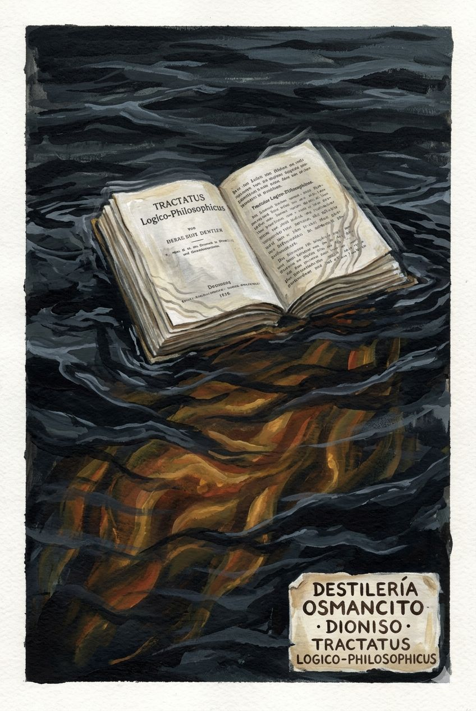
El Tractatus se lee como un hombre que construye una celda perfecta y luego se encierra en ella con satisfacción. La lógica es impecable. La celda es real. Y en la última proposición, cuando guarda silencio sobre todo lo que importa, uno siente no el alivio de quien resolvió un problema sino el peso de quien acaba de descubrir que lo que quería decir nunca iba a caber en ninguna celda. El libro latía de otra cosa desde el principio. Esa otra cosa nunca fue nombrada. Permanece.
Un hombre en una trinchera intentando construir algo que no pueda ser destruido por los cañones.
Proposición 2.1 — “We make to ourselves pictures of facts.” Aquí late algo que no es argumento sino descubrimiento: el momento en que alguien ve por primera vez que el lenguaje no describe el mundo sino que lo posa sobre él, como una figura sobre una figura. La vitalidad es la de la revelación antes de convertirse en sistema. Dura exactamente una proposición. Lo que sigue es la domesticación de ese destello en doctrina.
Proposición 4.003 — “Most propositions and questions that have been written about philosophical matters are not false but senseless.” Aquí late rabia. No la rabia declarada sino la que se filtra por la precisión del golpe: not false but senseless. La distinción es quirúrgica y es también un insulto diferido a dos mil años de filosofía. La energía es la del que ha esperado mucho tiempo para decir esto y lo dice con la calma de quien sabe que no necesita levantar la voz.
Proposición 5.6 — “The limits of my language mean the limits of my world.” La proposición más citada del corpus, y la única donde el my — mi lenguaje, mi mundo — rompe brevemente la impersonalidad del método. Algo se filtra: hay un yo aquí, aunque el libro haya hecho todo lo posible para que no aparezca. La vitalidad es la de una presencia que creía estar oculta y por un instante no lo está.
Proposiciones 6.4–6.45 — el bloque ético y místico. El libro lleva noventa páginas construyendo una fortaleza de lógica y aquí, en una docena de proposiciones, abre una ventana a todo lo que la fortaleza fue construida para contener. La vitalidad es la de la urgencia reprimida que finalmente habla — brevemente, con pudor extremo, pero habla. “The sense of the world must lie outside the world.” “Ethics is transcendental.” “Not how the world is, is the mystical, but that it is.” Estas proposiciones tienen una temperatura completamente distinta de todo lo anterior. Son las únicas que no parecen demostradas sino sentidas.
Proposición 6.4311 — “Death is not an event of life. Death is not lived through.” Una sola proposición que el sistema no necesitaba y que sin embargo está. Nadie le pidió a Wittgenstein que dijera esto en un tratado de lógica. Lo dijo porque lo necesitaba decir. La vitalidad es la de algo que se cuela sin permiso y por eso pesa más que todo lo que fue construido con permiso.
Proposición 6.54 — la escalera. “He who understands me finally recognizes them as senseless, when he has climbed out through them, on them, over them. He must so to speak throw away the ladder, after he has climbed up on it.” Aquí late algo parecido al humor — un humor trágico, el de quien construyó durante años algo que al final declara escalera y no edificio. La vitalidad es la del gesto imposible: el libro que se cancela a sí mismo como acto final, y que sin embargo el lector guarda.
El interlocutor. El libro no tiene nadie enfrente. No hay un tú, no hay una voz que responde, no hay lugar donde la resistencia de otro haga presión. La filosofía como conversación — de Sócrates en adelante — ha sido eliminada del corpus. Lo que queda en su lugar es el monólogo de alguien que ya sabe lo que el otro diría y lo descartó antes de empezar.
El proceso. El Tractatus entrega resultados. Los pasos que llevaron a cada proposición — la duda, el rodeo, el error corregido, la noche en que algo no cuadraba — fueron borrados. El libro llega ya hecho, como si hubiera sido siempre así. Esa ausencia produce en quien lo lee una sensación particular: la de estar frente a algo que no fue descubierto sino revelado.
El cuerpo. Nadie come, duerme, sangra ni tiembla en el Tractatus. El mundo es la totalidad de los hechos, no de las experiencias. Esa exclusión es metódica y produce una filosofía que puede ser perfectamente verdadera y completamente inhabitable al mismo tiempo.
La duda del autor sobre el autor. El prefacio dice que los problemas han sido resueltos en lo esencial. En los cuadernos de la época — que el corpus no incluye — Wittgenstein duda, retrocede, se contradice. Esa Wittgenstein no está aquí. La que está aquí ya sabe.
Los muertos. El libro fue escrito durante una guerra. Los muertos no aparecen. La forma de no aparecer que tienen los muertos en el Tractatus es la proposición 6.4311: “Death is not an event of life.” Es la única forma de mencionar la muerte que el sistema permite — y también la forma que más los excluye.
El my de 5.6. En un libro que sistemáticamente habla en tercera persona lógica, la aparición del pronombre posesivo en la proposición más citada del corpus es un síntoma. “The limits of my language mean the limits of my world.” El método habría requerido “the limits of language mean the limits of the world.” Wittgenstein escribe my y no lo nota, o lo nota y lo deja. En cualquier caso, el yo que el libro expulsó por la puerta aparece por la ventana en el momento de mayor densidad conceptual.
La proliferación de partes iguales en la proposición 6. La proposición 6 abre con la forma general de la función de verdad — una fórmula lógica de alta abstracción — y en las proposiciones siguientes el libro se dispersa hacia la ética, la estética, la muerte, Dios, el misticismo, la inducción y la mecánica newtoniana. La unidad temática se rompe exactamente donde el libro debería ser más coherente. Ese desbordamiento no es un fallo de organización: es el síntoma de un corpus que ya no puede seguir aplazando lo que vino a decir.
La brevedad de las proposiciones éticas. Las proposiciones 6.4–6.522 — el corazón no declarado del libro — son, en proporción, las más cortas del corpus. El análisis de la teoría pictórica ocupa decenas de sub-proposiciones; la ética, la muerte y lo místico se despachan en media docena de enunciados. Esa desproporción es un síntoma: lo que más importaba al autor es lo que el método menos puede sostener, y el autor lo sabe y abrevía.
La imagen del pescado en 4.1272. En medio de un análisis técnico sobre variables y conceptos formales, Wittgenstein escribe: “Thus the variable name ‘x’ is the proper sign of the pseudo-concept object. Wherever the word ‘object’ (‘thing’, ‘entity’, etc.) is rightly used, it is expressed in logical symbolism by the variable name. For example in the proposition ‘there are two objects which…’ by ‘(∃x,y)…’. Wherever it is used otherwise, i.e. as a proper concept word, there arise senseless pseudo-propositions.” Inmediatamente antes, en 4.1271, hay una imagen: “Every variable is the sign of a formal concept.” El aparato formal sostiene el texto — pero hay momentos donde el texto hace lo que el escritor hace cuando está cansado: llena el espacio con precisión para no tener que decir lo que aún no sabe cómo decir. Esos momentos tienen un ritmo diferente. Son más lentos. El lector los siente aunque no los identifique.
La negación como movimiento de apertura. El Tractatus avanza negando: not false but senseless (4.003), cannot be said but shows itself (4.1212), not an event of life (6.4311), does not reveal himself in the world (6.432), does not exist (el riddle, 6.5). Las negaciones del corpus son, sistemáticamente, más vivas que sus afirmaciones. El libro abre espacio negando — y lo que ese espacio contiene nunca es llenado por el libro mismo. Ocurre al menos una docena de veces en las proposiciones 4–6, con concentración creciente hacia el final. El efecto en el lector: la sensación de que lo que el corpus guarda está precisamente en lo que elige eliminar.
La repetición de “shows” / “shown” / “shows itself”. El verbo show y sus variantes aparecen con una frecuencia que excede su función técnica. En proposiciones como 4.022, 4.121, 4.1212, 5.62, 6.36, 6.522, el corpus recurre siempre a la misma palabra para nombrar lo que está más allá del decir. Esa repetición compulsiva delata que show está cargando un peso que el corpus no puede distribuir entre otros términos: es la única palabra disponible para nombrar lo que el lenguaje no puede nombrar, y el libro la usa cada vez que llega a ese límite. El efecto es acumulativo: hacia el final del corpus, cada aparición de show tiene el peso de todas las anteriores.
El paréntesis como refugio. El Tractatus usa los paréntesis con una frecuencia inusual para un tratado filosófico. En decenas de proposiciones — especialmente en las secciones 3 y 4 — el paréntesis contiene lo que el cuerpo de la proposición no puede decir directamente: ejemplos inesperados, comparaciones oblicuas, concesiones, correcciones silenciosas. “(Like the two youths, their two horses and their lilies in the story. They are all in a certain sense one.)” (4.014). “(Is not this the reason why men to whom after long doubting the sense of life became clear, could not then say wherein this sense consisted?)” (6.521). Los paréntesis del Tractatus son el lugar donde el autor habla con una voz ligeramente distinta — más personal, más tentativa. Son el único espacio donde el libro cede.
Lo que dice
El mundo es todo lo que ocurre. Lo que ocurre son hechos, no cosas. Los hechos son configuraciones de objetos simples e indestructibles. La proposición es una imagen del hecho: comparte su forma lógica con lo que representa. Todo lo que puede decirse puede decirse claramente. La lógica muestra la forma del mundo sin decir nada sobre él. La ética, la estética, el valor, el sentido de la vida — nada de eso puede ser dicho. Solo puede mostrarse. Quien entiende esto, entiende que las proposiciones del libro son sin sentido. Debe tirar la escalera. Sobre lo que no puede hablarse, hay que guardar silencio.
Lo que muestra
Un hombre que necesita que algo sea indestructible y construye una ontología para garantizarlo. La teoría de los objetos simples — que no pueden ser alterados por ningún estado de cosas, que subsisten independientemente de lo que ocurra en el mundo — no es solo una posición filosófica: es la forma que toma el deseo de que algo permanezca cuando todo lo demás puede ser destruido. El Tractatus muestra, sin saberlo, que la lógica es una forma de duelo.
Lo que exige
Leer el Tractatus con integridad requiere estar dispuesto a perder la pregunta. No a responderla — a perderla. El libro exige que el lector acepte que los problemas de la filosofía no son problemas sino malentendidos, y que esa aceptación no es resignación sino claridad. Quien llega al libro buscando respuestas a preguntas sobre el sentido de la vida, Dios, la muerte, la ética — debe estar dispuesto a que esas preguntas sean disueltas, no contestadas. Lo que el corpus demanda no es acuerdo sino disposición a soltar.
Lo que guarda
Debajo del sistema, debajo de la teoría pictórica y la lógica de las funciones de verdad, el Tractatus guarda una pregunta que ninguna de sus proposiciones formula: ¿es suficiente ver el mundo correctamente si el mundo visto correctamente no tiene sentido? La respuesta del libro es que la pregunta misma desaparece cuando se ve bien. Pero la pregunta no desaparece. Reaparece en cada proposición que niega el sentido del mundo para ubicarlo fuera, en cada proposición ética que abre y cierra en tres líneas, en la proposición sobre la muerte que no tenía que estar ahí. El libro guarda la pregunta que vino a eliminar. La guarda porque no pudo eliminarla. Eso es lo que permanece.
Leer el Tractatus es como entrar en un edificio de cristal y acero en invierno. La temperatura es exacta — no fría por descuido sino por decisión. Las superficies son perfectas. La luz entra perpendicular, sin sombras innecesarias. El espacio es funcional hasta la elegancia. Y sin embargo, en algún punto cerca del final, hay una habitación pequeña con una sola ventana que da a un paisaje que el edificio no prometía: montañas, quizás, o el mar — algo que la arquitectura no planeó y que sin embargo está ahí, visible desde adentro, inaccesible. El libro envejece bien porque ese paisaje permanece y el edificio no lo cubre.
El Tractatus tiene el pulso de un cuarteto de cuerdas en su movimiento lento: cuatro voces que se mueven con precisión absoluta, sin ornamento, sin vibrato innecesario. La instrumentación es de cámara —no hay masa orquestal, no hay gestos románticos. Hay contrapunto, pero de una sola voz dominante y tres que la sostienen en silencio. El ritmo es el de la demostración: avanza por pasos breves, cada uno apoyado sobre el anterior, con pausas que no son descanso sino acumulación. Hacia el final — en las proposiciones éticas y místicas — el tiempo se dilata. La voz que llevaba todo el peso baja. Lo que queda no es resolución sino silencio elegido.
Título — String Quartet No. 14 in D minor, D. 810, “Death and the Maiden”, segundo movimiento (Andante con moto) Autor / Intérprete — Franz Schubert / Quatuor Ébène Por qué — Porque es un tema con variaciones que construye un sistema de precisión absoluta para llegar, en la última variación, a decir lo que el tema nunca podría haber dicho — y luego se calla.
Lo que el lenguaje no puede decir sobre sí mismo es exactamente lo que hace posible que diga algo — y eso, que no puede decirse, es lo único que importa.
Preguntas que quedan abiertas y predicen inagotabilidad
¿Cómo podría mostrarse lo que no puede decirse sin que ese mostrarse sea ya una forma de decir? Esta es la pregunta que el Tractatus no puede responder sin destruirse, y por eso cada generación de lectores la reformula y ninguna la cierra.
¿Qué son los objetos simples? El corpus los postula como necesidad lógica pero nunca los especifica. Esa vacancia ha generado un siglo de disputa.
Preguntas que el corpus abandona sin decirlo
¿Cómo sabe el sujeto metafísico — que es límite del mundo, no parte de él — que el mundo tiene la estructura que el Tractatus le atribuye? La pregunta abre en 5.6 y se cierra por abandono, no por respuesta.
¿Qué hace el lector con el sentido de la vida una vez que acepta que no puede ser dicho? El libro disuelve la pregunta pero no ofrece nada en su lugar. El silencio final no es orientación.
Preguntas que el corpus cierra o responde
¿Puede la filosofía hacer afirmaciones sobre el mundo más allá de las ciencias naturales? No. El corpus lo demuestra con precisión.
¿Pueden las proposiciones lógicas decir algo sobre el mundo? No. Son tautologías: muestran la forma del mundo sin describirlo.
Preguntas que responde para algunos lectores y no para otros
¿Es el misticismo — la experiencia del mundo como totalidad limitada — una posición filosófica legítima? Para quien acepta que lo inexpresable se muestra, sí. Para quien requiere que toda posición sea articulable en proposiciones, el corpus produce aquí no respuesta sino colapso.
La falla raíz
El Tractatus viola sus propias reglas al intentar describirlas. Las proposiciones que trazan el límite del lenguaje están, por definición, más allá de ese límite — son, según las reglas del propio corpus, sin sentido. Wittgenstein lo reconoce en 6.54 y lo llama escalera. Pero una escalera que el libro mismo no puede tirar sin desaparecer. Toda contradicción del corpus emerge de ahí: la teoría que no puede ser enunciada sin practicar lo que prohíbe.
El Tractatus pone en el mundo algo que ningún otro libro ha puesto de la misma manera: la demostración de que el límite del lenguaje es real, y que ese límite no es una derrota sino la única forma de honestidad disponible. Lo que le falta es lo que el propio Wittgenstein le faltó durante los veinte años siguientes: la disposición a habitar el límite en lugar de trazarlo desde lejos. El libro es extraordinario y también es frío con la frialdad de quien prefiere la precisión al riesgo. Vale el tiempo que cuesta — y deja, al cerrarlo, la sensación persistente de que lo más importante estaba en los márgenes.
¿Qué operación nueva exige un corpus que viola sus propias reglas como acto final deliberado?
El Tractatus sugiere un instrumento que no existe en el sistema actual: una lectura del colapso performativo — el momento en que un corpus aplica sus propias categorías a sí mismo y se disuelve en ellas. No es el Bucle (que aplica mecanismos del corpus al corpus) ni el Palimpsesto (que busca capas anteriores): es la lectura del instante en que el texto hace exactamente lo que dice que no puede hacerse, y ese instante es su mayor hallazgo.
Aplicable a: cualquier corpus que construya un sistema normativo y luego lo habite — manifiestos, tratados éticos, declaraciones de principios, poéticas. El instrumento busca no la contradicción accidental sino la contradicción estructural que el corpus necesita para ser lo que es.
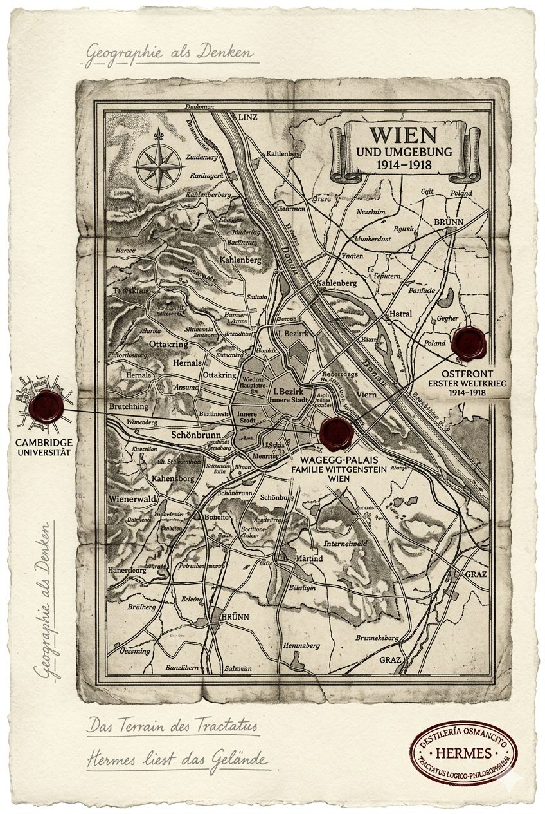
El Tractatus fue escrito en cuatro frentes de guerra y terminado en un campo de prisioneros. Eso no aparece en ninguna proposición — pero la ontología que construye, con sus objetos simples e indestructibles que subsisten independientemente de cualquier estado de cosas, tiene exactamente la temperatura de alguien que necesita que algo no pueda ser destruido mientras los cañones suenan afuera. El libro más impersonal de la filosofía del siglo XX fue escrito en las condiciones más personales posibles. Esa distancia entre las condiciones y el resultado es el hallazgo que Hermes encontró en el suelo.
La geografía del Tractatus es múltiple, desplazada y constitutiva. El pensamiento no ocurrió en un solo lugar: fue producido en movimiento forzado, y ese movimiento dejó marcas en la arquitectura del libro aunque el libro no las declare.
Viena, 1889–1913. El origen. Wittgenstein nace en la familia más rica de Austria — industria del acero, ocho hijos, cuatro varones de los cuales tres terminarán suicidándose. El ambiente intelectual vienés de fin de siglo es el suelo primero: Mahler, Klimt, Schönberg, Kraus, Loos. El movimiento de la Secession, el ornamento como crimen (Loos: “Ornament und Verbrechen”, 1908), la búsqueda de la forma esencial sin decoración — todo eso opera sobre el Tractatus como presión cultural aunque Wittgenstein no lo cite. La eliminación del ornamento en la prosa del Tractatus, la reducción al hueso, la proposición desnuda: es también una proposición vienesa de principios del siglo XX.
Manchester y Cambridge, 1908–1914. El desplazamiento formativo. Wittgenstein llega a Manchester para estudiar ingeniería aeronáutica, descubre la filosofía de la matemática, se traslada a Cambridge a trabajar con Russell. Es en Cambridge donde el corpus comienza a gestarse: los cuadernos de 1913-1914 son el antecedente directo del Tractatus. Cambridge produce un tipo de pensamiento específico: analítico, técnico, orientado a la precisión lógica antes que a la profundidad histórica. El Tractatus es un libro de Cambridge en su método aunque no en su impulso.
Los frentes de guerra, 1914–1918. El lugar decisivo. Wittgenstein se alista voluntariamente en el ejército austro-húngaro en cuanto estalla la guerra. Sirve en el frente oriental, luego en Italia. Lleva consigo los cuadernos donde desarrolla lo que será el Tractatus. Las condiciones: trincheras, movimiento constante, presencia de la muerte como hecho cotidiano no abstracto. Lo que ese suelo produce en el corpus es la única hipótesis que Hermes puede formular con precisión: la ontología de los objetos simples e indestructibles — que el mundo puede cambiar en todos sus hechos pero los objetos que lo constituyen no pueden ser alterados — tiene la temperatura de una necesidad existencial, no de una conclusión lógica. El pensamiento más lúcido del Tractatus ocurre en las condiciones más extremas. La relación entre ambos no es accidental.
Cassino, campo de prisioneros, 1918. El libro termina aquí. Wittgenstein cae prisionero de los italianos en noviembre de 1918, días antes del armisticio. El manuscrito del Tractatus estaba completo en sus cuadernos. Lo envía a Russell y a Frege desde el campo. La proposición 7 — el silencio final — fue escrita, o al menos fijada en su forma definitiva, en cautiverio. Eso no es decoración biográfica: es el suelo desde el que se decide que la última palabra del sistema será el silencio.
Arquitectura espacial del corpus: el pensamiento más lúcido del Tractatus — la teoría pictórica, la distinción decir/mostrar, la proposición 5.6 — ocurre en el desplazamiento extremo. El corpus no tiene un centro geográfico estable. Es un libro de ningún lugar que intenta construir el mapa de todos los lugares posibles. Esa paradoja espacial es constitutiva: solo alguien que ha perdido el suelo fijo puede construir una ontología del espacio lógico puro.
El derrumbe del Imperio. El Tractatus se escribe durante la desintegración del Imperio Austro-Húngaro y se publica en 1921, en el año en que ese Imperio ha dejado de existir definitivamente. El mundo que Wittgenstein conocía — el orden, la jerarquía, la certeza de las instituciones — colapsa mientras él escribe. Lo que la época hace al texto sin que el texto lo sepa: la urgencia de encontrar algo que no colapse. El espacio lógico del Tractatus es eterno, necesario, independiente de los hechos contingentes del mundo histórico. Esa eternidad tiene una fecha.
El fin del optimismo positivista. El siglo XIX europeo creyó que la ciencia y la lógica resolverían los problemas del conocimiento. Frege, Russell, Whitehead — el proyecto logicista de fundar la matemática en la lógica pura — es el horizonte intelectual en el que el Tractatus nace. Wittgenstein hereda ese optimismo y lo lleva hasta su límite: si la lógica puede decir todo lo que puede decirse, lo que queda fuera — la ética, la estética, el sentido — es exactamente lo más importante. El corpus es el logicismo llevado hasta el punto donde se destruye a sí mismo.
Lo que el autor no podía ver. Wittgenstein no podía ver que su distinción entre lo que puede decirse y lo que solo puede mostrarse sería leída por el Círculo de Viena como positivismo lógico — la eliminación de la metafísica como sin sentido. Esa lectura invierte el impulso del libro: donde Wittgenstein quería rescatar lo inexpresable como lo más importante, el Círculo lo descartó como sin sentido. El autor no podía ver esa inversión porque estaba dentro del lenguaje que la hacía posible.
La producción. El Tractatus fue escrito en cuadernos de campo — papel barato, condiciones adversas, sin biblioteca accesible. El aparato de referencias es mínimo: Frege y Russell son los únicos citados, y de memoria o desde los textos que Wittgenstein llevaba consigo. Esa austeridad material coincide con la austeridad del método. No es posible saber cuánto de la economía radical de la prosa es decisión filosófica y cuánto es condición de producción.
La posición económica. Wittgenstein era, en el momento de escribir el Tractatus, heredero de una de las fortunas más grandes de Europa. Renunció a su parte de la herencia en 1919, después de la guerra. Esa renuncia es posterior a la escritura del corpus pero anterior a su publicación. La distancia entre las condiciones económicas reales del autor — que podía permitirse no publicar, no depender de ninguna institución, no hacer concesiones de mercado — y las condiciones de producción material del libro — cuadernos de campo, cautiverio — es uno de los rasgos más extraños del corpus. El libro más austero de la filosofía analítica fue escrito por el hombre más rico de su generación filosófica.
La circulación. El Tractatus circuló primero como manuscrito entre Russell y Frege. Russell escribió el prólogo de la edición inglesa de 1922 con una interpretación que Wittgenstein rechazó — pero sin la que, posiblemente, el libro no habría sido publicado. La dependencia del corpus respecto de la lectura de Russell es una condición material: el libro llegó al mundo mediado por una interpretación que su autor consideraba errónea.
Sobre la traducción. El corpus analizado es la traducción inglesa de C.K. Ogden (con la colaboración de F.P. Ramsey), revisada por el propio Wittgenstein y publicada en 1922. Existe también la traducción de Pears y McGuinness (1961), considerada más precisa filosóficamente. Para el análisis de contenido filosófico, la mediación traductora no implica pérdida relevante: el propio Wittgenstein participó en la traducción de Ogden y la aprobó. Para el análisis del sonido, el ritmo y la decisión sintáctica de la prosa alemana original — que tiene una austeridad específica que el inglés aproxima pero no replica — se recomienda operar sobre el texto alemán (Logisch-philosophische Abhandlung) si el análisis de estilo es prioritario. Para los fines de este instrumento, la traducción de Ogden es operativamente suficiente.
En la tradición. Wittgenstein hereda la lógica de Frege y Russell pero no pertenece a ninguna escuela. No es un académico en 1918: no tiene posición universitaria, no publica en revistas, no forma parte de ningún departamento. Escribe desde la periferia institucional de la filosofía — que es también la periferia geográfica de un campo de prisioneros. Esa posición produce una libertad formal que el corpus aprovecha: el Tractatus no tiene que justificar su método ante ninguna audiencia institucional. Habla desde ningún lugar reconocido hacia una audiencia que no puede identificar.
Lo que arriesga. En 1918, Wittgenstein arriesga la comprensión. El prefacio lo declara: el libro solo será comprendido por quien ya haya pensado los mismos pensamientos. Eso no es modestia — es la descripción de un corpus que no hace concesiones de ningún tipo a la accesibilidad. El riesgo real es la incomprensión total, y Wittgenstein lo acepta.
Lo que protege. La impersonalidad del método protege al autor de la exposición. El Tractatus es el libro más personal que Wittgenstein escribió en sus cuarenta años de filosofía — pero también el que menos rasgos personales exhibe en su superficie. La armadura lógica protege la vulnerabilidad del impulso. Esa protección es una decisión posicional: el hombre que venía de una familia donde la exposición emocional estaba asociada al colapso (tres hermanos suicidas) construye un método que hace imposible la exposición.
Las cuatro condiciones — geográfica, histórica, material y posicional — actúan en conjunto sobre el corpus produciendo un solo efecto que ninguna genera sola: la necesidad de lo necesario. El mundo geográfico de Wittgenstein durante la escritura del Tractatus era contingente hasta la violencia — podía ser destruido en cualquier momento. El mundo histórico colapsaba. Las condiciones materiales eran las del despojo. La posición institucional era inexistente. De esas cuatro formas de contingencia extrema surge un libro que postula la existencia de objetos absolutamente necesarios, de una lógica que no puede ser de otra manera, de un espacio lógico eterno e inmutable. El Tractatus es la respuesta filosófica de una psicología específica a un momento histórico específico — y esa especificidad es exactamente lo que el libro niega ser.
La condición dominante es la geográfica-existencial: la guerra. Si el Tractatus hubiera sido escrito en Cambridge entre 1914 y 1918 — en paz, en la biblioteca, con Russell disponible — habría sido un libro diferente. No necesariamente peor, pero diferente. La ontología de los objetos indestructibles no habría tenido la misma urgencia. La proposición sobre la muerte (6.4311) no habría estado. La proposición 7 podría haber sido menos absoluta. El silencio final tiene el peso del silencio que se aprende en los lugares donde la muerte es ordinaria.
Hay desplazamiento en el Tractatus, y es múltiple.
El desplazamiento de clase: Wittgenstein escribe desde la trinchera habiendo nacido en un palacio. Esa distancia produce en el corpus algo difícil de nombrar: una cierta indiferencia hacia el mundo como está hecho, una disposición a reformularlo desde sus fundamentos, que solo es posible desde una posición que no depende de que el mundo siga siendo como es.
El desplazamiento geográfico: escribe en el frente oriental, en los Apeninos, en un campo italiano, lejos de los centros donde se produce la filosofía que le importa. Esa distancia produce lucidez — la misma distancia que produce lucidez en cualquier corpus escrito en el exilio: la capacidad de ver el sistema desde afuera porque no se está dentro de él. El Tractatus ve la filosofía occidental desde la periferia de una guerra, y eso le da la posibilidad de tratarla como un conjunto de malentendidos resolubles.
El desplazamiento temporal: el libro fue escrito entre 1914 y 1918 y publicado en 1921. En esos tres años entre la escritura y la publicación, el mundo cambió — el Imperio cayó, Wittgenstein renunció a su herencia, se convirtió en maestro rural. El libro que llega al mundo en 1921 viene de un mundo que ya no existe. Esa distancia temporal entre el momento de producción y el momento de circulación es también una condición del corpus: llega a un mundo para el que no fue escrito y que sin embargo lo reconoce.
La relación entre el desplazamiento y la calidad del pensamiento: produce lucidez en las proposiciones que trazan el límite del lenguaje (4–5), deformación en las proposiciones que intentan decir algo sobre lo que el valor (6.4), y una honestidad singular en el silencio final (7) que no habría sido posible desde un lugar seguro. Quien tiene todo que perder puede guardarlo todo en silencio. Quien no tiene nada que perder ya no necesita el silencio.
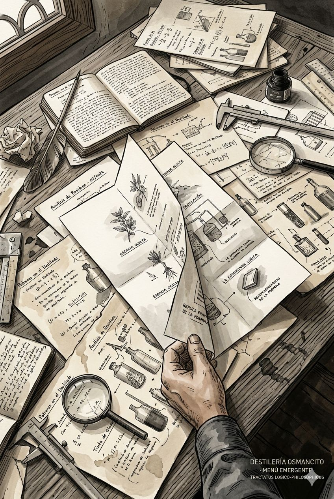
Los instrumentos anteriores convergieron en un hallazgo que ninguno formuló directamente: el Tractatus es un libro que sabe lo que quiere decir, sabe que no puede decirlo, y lo dice de todas formas — y ese acto triple es su única ética posible. Lo que ofrece es precisión. Lo que esconde es urgencia. La tensión que gobierna el movimiento entre superficie y fondo es la misma que gobierna la proposición 7: el silencio como acto, no como ausencia.
I. La lectura del colapso performativo Zona: la proposición 6.54 y su relación estructural con todo el corpus anterior. Qué haría: rastrear el momento exacto en que el Tractatus aplica sus propias categorías a sí mismo y se disuelve en ellas — no como error sino como acto deliberado. Producir una lectura del libro como su propio objeto de estudio. Resultado esperado: la identificación del mecanismo por el que un corpus puede ser simultáneamente verdadero y sin sentido según sus propias reglas, y qué queda después de ese colapso.
II. Los objetos simples como vacío fundante Zona: proposiciones 2.01–2.0272 — la ontología del Tractatus en su base. Qué haría: examinar la ausencia más constitutiva del sistema: los objetos simples que todo el edificio necesita y que nunca son especificados. No buscar qué son — rastrear qué produce su vacancia estructural en el corpus y en quien lo lee. Resultado esperado: una lectura del Tractatus como sistema que descansa sobre un fundamento deliberadamente vacío, y la pregunta de si esa vacancia es falla o estrategia.
III. Los paréntesis como corpus paralelo Zona: dispersa en proposiciones 3–6, con concentración en 4 y 6. Qué haría: extraer y leer en secuencia todos los paréntesis del Tractatus como un texto separado. El corpus paralelo que el libro lleva dentro y que habla con una voz diferente — más tentativa, más personal, más dispuesta al ejemplo y al rodeo. Resultado esperado: un segundo Tractatus de voz distinta, y la pregunta de qué relación tiene ese segundo libro con el primero.
IV. La proposición 6.4311 como intruso Zona: proposición única, en el bloque ético-místico de la sección 6. Qué haría: leer “Death is not an event of life” como la única proposición del Tractatus que el sistema no necesitaba y que sin embargo está — rastrear por qué está, qué la hace posible dentro del sistema y qué la hace imposible de no decir fuera de él. Resultado esperado: una lectura de la muerte en el Tractatus no como tema filosófico sino como presión biográfica que abrió una grieta en el método.
V. La guerra como argumento no declarado Zona: el corpus completo leído desde sus condiciones de producción (Hermes) y su pulso interno (Dioniso). Qué haría: leer el Tractatus como si la guerra fuera un argumento filosófico implícito — no como contexto sino como premisa no declarada que opera sobre la ontología, la ética y el silencio final. Resultado esperado: una lectura alternativa del corpus donde la necesidad lógica y la necesidad existencial son el mismo movimiento.
VI. El Tractatus leído desde las Investigaciones Zona: el corpus completo, con las Investigaciones Filosóficas como instrumento de lectura retroactiva. Qué haría: leer el Tractatus desde el único lector que demostró entenderlo lo suficiente para desmontarlo — el propio Wittgenstein veinte años después. Identificar los puntos exactos donde las Investigaciones aplican presión sobre el Tractatus y qué producen esos puntos cuando se leen con esa presión ya operando. Resultado esperado: una lectura del Tractatus como borrador del único libro que podría haberlo superado.
La proposición 6.54 dice: “My propositions serve as elucidations in the following way: anyone who understands me eventually recognizes them as nonsensical, when he has used them — as steps — to climb up beyond them. He must, so to speak, overcome these propositions; then he sees the world rightly.”
El sistema del Tractatus establece, desde la proposición 4, que las proposiciones con sentido son aquellas que pueden ser verdaderas o falsas respecto de un estado de cosas posible. Las proposiciones de la lógica son tautologías — no dicen nada. Las proposiciones de la ética y la metafísica son sin sentido — intentan decir lo que solo puede mostrarse. Bajo esas reglas, todas las proposiciones del Tractatus — incluyendo las que describen esas mismas reglas — son sin sentido. No porque estén mal formuladas, sino porque hacen exactamente lo que el libro dice que no puede hacerse: intentan decir la forma lógica del lenguaje.
Wittgenstein lo sabe. No lo descubre el lector — el autor lo declara en 6.54. Lo llama escalera y dice que hay que tirarla.
Pero hay algo que 6.54 no puede decir sin repetir su propio gesto: la proposición “estas proposiciones son sin sentido” es, también, una proposición que intenta decir su propia forma lógica. La escalera no puede ser tirada porque tirarla requiere otra escalera. El colapso es infinito — y eso es, precisamente, lo que hace al libro inagotable.
Lo que queda después del colapso no es nada. Es el acto. La escalera no importa — importa haber subido. Lo que el Tractatus pone en el mundo no es una doctrina sino una postura: la disposición a usar el lenguaje con plena conciencia de sus límites, a construir sistemas con plena conciencia de que son escaleras, a guardar silencio sobre lo que importa no porque no importe sino porque nombrarlo lo reduciría. Ese gesto — construir para tirar, decir para callar — es la única ética que el Tractatus puede practicar, y la practica sin poder nombrarla. El colapso performativo no es la falla del sistema. Es su único resultado posible y el único que vale.
La ontología del Tractatus descansa sobre objetos que nunca aparecen.
Las proposiciones 2.01–2.0272 postulan: los hechos son configuraciones de objetos; los objetos son simples e indestructibles; subsisten independientemente de cualquier estado de cosas. De esos objetos depende todo — la posibilidad de la representación, la estabilidad del lenguaje, la coherencia del espacio lógico. Sin ellos, la teoría pictórica colapsa: si no hay elementos últimos e indestructibles, no hay forma de garantizar que la imagen y lo representado compartan estructura.
Y sin embargo: ¿cuáles son esos objetos? El Tractatus no lo dice. No da ejemplos. No sugiere dónde buscarlos. La proposición 2.0272 afirma que la configuración de objetos forma el estado de cosas — pero ninguna proposición del corpus especifica un solo objeto simple real.
Esa ausencia no es un olvido. Es una decisión que el sistema necesita: si los objetos fueran especificados, serían empíricos — y entonces serían contingentes, y entonces no podrían ser los elementos últimos e indestructibles que el sistema necesita. La vacancia es la condición de posibilidad de la necesidad. Los objetos simples deben permanecer vacíos para poder ser necesarios.
Lo que esa vacancia produce en quien lee: una sensación de fundamento sin fondo. El edificio está construido sobre una promesa que nunca se cumple, y el lector sabe que la promesa no puede cumplirse sin destruir el edificio. Esa sensación — la de un sistema perfectamente coherente que descansa sobre algo que no puede ser mostrado — es exactamente la sensación que el Tractatus describe como la condición del lenguaje en general. El libro practica lo que describe: muestra la forma de su propio fundamento sin poder decir qué hay en el fondo.
El vacío fundante no es una falla. Es la demostración más honesta del sistema: todo lenguaje descansa sobre algo que no puede decirse. Los objetos simples son ese algo — postulados, no exhibidos, necesarios precisamente porque no pueden aparecer.
Extraídos en secuencia, los paréntesis del Tractatus forman un texto de naturaleza distinta al cuerpo de las proposiciones. Son más lentos, más tentacionales, más dispuestos al ejemplo y al asombro. Una selección representativa:
(We can, for example, construct all possible logical forms.) — 4.51
(A proposition, therefore, does not actually contain its sense, but does contain the possibility of expressing it.) — 3.13
(The method of mechanics, for example, tells us that all propositions of natural science can be derived from a certain small number of axioms.) — 6.341
(Like the two youths, their two horses and their lilies in the story. They are all in a certain sense one.) — 4.014
(Feeling the world as a limited whole — it is this that is mystical.) — 6.45
(Is not this the reason why men to whom after long doubting the sense of life became clear, could not then say wherein this sense consisted?) — 6.521
El corpus paralelo tiene un movimiento diferente al cuerpo del libro. Donde el cuerpo avanza por aseveración, los paréntesis rodean, ejemplifican, comparan, confiesan. El paréntesis de 4.014 — los dos jóvenes, sus caballos, sus lirios, todos en cierto sentido uno — no tiene función técnica en el argumento. Es el único momento del Tractatus donde el lenguaje es convocado como maravilla antes de ser convocado como problema.
El paréntesis de 6.521 es el más revelador: plantea la pregunta que el sistema no puede formular en su cuerpo. “¿No es esta la razón por la que los hombres a quienes el sentido de la vida se volvió claro tras larga duda no pudieron decir en qué consistía ese sentido?” Esa pregunta, colocada entre paréntesis, es la pregunta que el Tractatus entero fue construido para responder — y que el sistema solo puede hacer en voz baja, al margen, entre corchetes de pudor. El segundo Tractatus que vive en los paréntesis es el libro que Wittgenstein no podía escribir directamente. Es más cálido, más humano, más dispuesto a no saber. Y está ahí, completo, para quien lo lee en secuencia.
“Death is not an event of life: we do not live to experience death. If we take eternity to mean not infinite temporal duration but timelessness, then eternal life belongs to those who live in the present. Our life has no end in just the way in which our visual field has no limits.”
El sistema no necesitaba esto. La proposición 6.431 — que en la muerte el mundo no cambia sino que cesa — ya había cerrado el asunto desde el ángulo lógico. La proposición 6.4311 no añade un argumento nuevo: añade una voz nueva. La comparación entre la muerte y el límite del campo visual no es una demostración — es una imagen. El Tractatus que había eliminado sistemáticamente las imágenes como adorno introduce aquí una imagen para decir lo que el argumento no puede decir solo.
“Our visual field has no limits.” La frase viene de 5.633 y 5.6331, donde Wittgenstein usa el campo visual como analogía para el yo metafísico: el ojo no se ve a sí mismo en el campo visual, así como el sujeto no está en el mundo sino que es su límite. En 6.4311, la misma imagen regresa para hablar de la muerte. El corpus recicla su propia metáfora en el momento en que necesita decir algo que la lógica no alcanza.
¿Por qué está esta proposición? La única respuesta disponible es que alguien que vivió rodeado de muerte durante cuatro años — y que había perdido a amigos cercanos en el frente, que consideró el suicidio en múltiples momentos de su vida — necesitaba decir esto. No como argumento filosófico sino como afirmación personal que el sistema le permitió colar entre proposiciones numeradas. “We do not live to experience death.” Es una proposición de consuelo. Es la única proposición del Tractatus que tiene esa temperatura. Y está en el libro porque el hombre que lo escribió la necesitaba — no el sistema.
Si se lee el Tractatus asumiendo que la guerra es una premisa filosófica no declarada, el libro se reorganiza.
Premisa implícita: el mundo puede ser destruido en todos sus hechos contingentes. Lo que ocurre — los hechos, los estados de cosas — es radicalmente contingente. Un obús puede eliminar cualquier hecho en cualquier momento.
Consecuencia filosófica necesaria: para que el lenguaje sea posible, para que la representación tenga estabilidad, debe haber algo que no pueda ser destruido. Los objetos simples son indestructibles por necesidad lógica — pero la urgencia de esa necesidad tiene una temperatura que la lógica pura no explica.
La distinción decir/mostrar como ética de guerra: en condiciones extremas, lo que se dice y lo que se hace se separan de manera violenta. El Tractatus construye una filosofía del lenguaje que traza exactamente esa separación. Lo que puede decirse son los hechos — contingentes, destructibles, cambiantes. Lo que solo puede mostrarse es la forma — necesaria, indestructible, eterna. Es también la diferencia entre lo que la guerra puede eliminar y lo que no puede.
El silencio final como supervivencia: la proposición 7 no es solo una conclusión lógica. Es la postura de alguien que aprendió, en condiciones concretas, que hay cosas sobre las que es inútil hablar y sobre las que el silencio es la única respuesta adecuada. El campo de prisioneros donde el libro fue terminado no es decoración biográfica: es el suelo desde el que la última proposición adquiere su peso real.
Leído así, el Tractatus es un libro de guerra que habla de lógica — de la misma manera en que la Divina Comedia es un libro de teología que habla de política. La argumentación filosófica es real y rigurosa. Pero el impulso que la mueve, la urgencia de sus conclusiones, el peso de su silencio final: todo eso viene de un hombre en una trinchera que necesitaba que algo no pudiera ser destruido.
Las Investigaciones Filosóficas (1953, póstumas) son el único comentario del Tractatus que importa, porque fueron escritas por alguien que lo entendió desde adentro.
La crítica central de las Investigaciones al Tractatus puede formularse así: el lenguaje no funciona porque las proposiciones sean imágenes de hechos. Funciona porque los hablantes participan en prácticas compartidas — juegos de lenguaje — cuyas reglas son convencionales, no lógicas. El significado no es representación; es uso.
Leído desde esa crítica, el Tractatus revela sus puntos de mayor tensión:
La proposición 2.1 — “We make to ourselves pictures of facts” — es el punto donde las Investigaciones aplican la primera presión. ¿Quién es el “we”? ¿Bajo qué condiciones se hace una imagen? ¿Qué garantiza que la imagen y el hecho comparten su forma? Las Investigaciones responden: nada, salvo la práctica. La imagen funciona porque los participantes en la práctica coinciden en que funciona. Esa coincidencia no es lógica — es forma de vida.
La proposición 5.6 — “The limits of my language mean the limits of my world” — es el punto donde la presión es más productiva. Las Investigaciones no niegan la conexión entre lenguaje y mundo; la multiplican. No hay un solo lenguaje con un solo límite: hay juegos de lenguaje con límites distintos, permeables, en movimiento. El mundo del Tractatus es singular; el mundo de las Investigaciones es plural y sin bordes fijos.
Los objetos simples — que las Investigaciones no atacan directamente pero cuya vacancia ya no pueden ser sostenida — son el fundamento que las Investigaciones reemplazan con la noción de práctica. Ya no se necesita un fondo de objetos indestructibles para que el lenguaje funcione: basta con que los hablantes coincidan en sus usos. Esa sustitución es más económica y más verdadera — y también más triste. Los objetos simples del Tractatus eran eternos. Los acuerdos de las Investigaciones son frágiles, históricos, revisables.
Lo que el Tractatus gana leído desde las Investigaciones: la claridad de lo que perdió. El Tractatus es el libro que todavía creía en algo indestructible. Las Investigaciones son el libro escrito por alguien que ya no cree — y que sin embargo sigue preguntando. La distancia entre los dos libros es la distancia entre la certeza de la trinchera y la sabiduría lenta de quien sobrevivió y tuvo que seguir viviendo sin la certeza. Leído como borrador, el Tractatus es el más hermoso de los dos. Leído como filosofía, las Investigaciones lo superan. Eso también es un hallazgo.
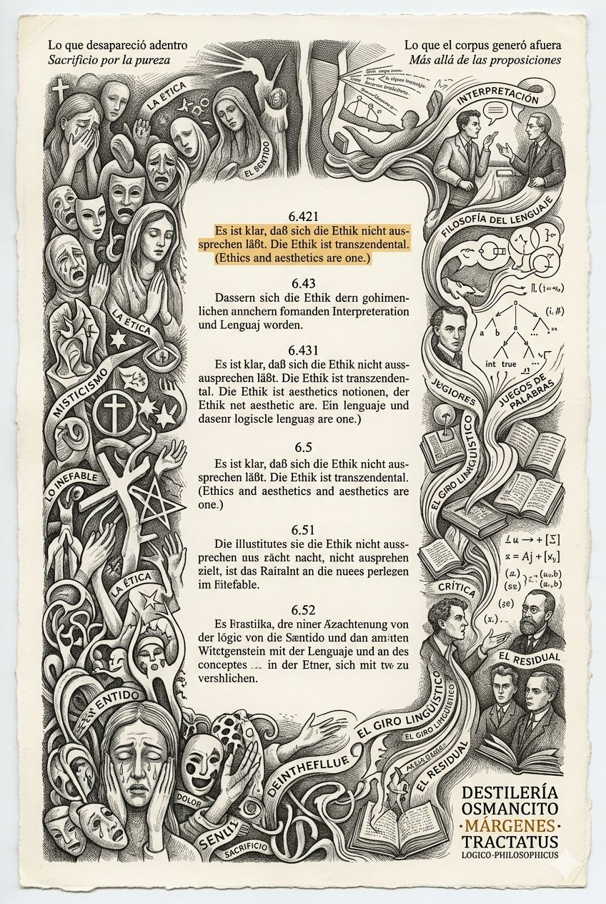
El Tractatus perdió exactamente lo que más le importaba — la ética, el cuerpo, el proceso, el interlocutor — y con esas pérdidas construyó la estela más larga de la filosofía analítica del siglo XX. No es paradoja: es el mecanismo. Lo que el libro sacrificó para ser lo que es fue exactamente lo que hizo posible que otros escribieran lo que él no pudo. Las pérdidas y la irradiación no se compensan — se alimentan. El margen izquierdo y el margen derecho del Tractatus son la misma herida vista desde dos direcciones.
Prefacio — El proceso de escritura Tipo — metodológico. Cómo ocurre — el corpus lo carga sin nombrarlo. El prefacio declara que los problemas han sido resueltos, no que fueron trabajados. Los cuadernos de 1914–1918 — donde Wittgenstein duda, retrocede, formula y descarta — fueron borrados del producto final. El Tractatus llega ya hecho. Escala — grande dentro del corpus: sin el proceso visible, el libro no puede ser refutado por su propio movimiento. Grande fuera: generó un siglo de debate sobre si el Tractatus es un sistema cerrado o el residuo de una búsqueda.
Proposiciones 2.01–2.0272 — Los nombres de los objetos simples Tipo — intelectual. Cómo ocurre — el corpus los carga sin nombrarlo; la desaparición es estructural. Los objetos simples son postulados como necesidad lógica pero nunca especificados. El fundamento de la ontología es un vacío con nombre. Escala — mayor dentro del corpus: de ella depende la coherencia de toda la teoría pictórica. Mayor fuera: es la grieta que las Investigaciones ensanchan hasta derrumbar el edificio.
A lo largo de todo el corpus — El interlocutor Tipo — personal / metodológico. Cómo ocurre — sin nombre, sin resistencia, sin voz que responda. El prefacio advierte que el libro solo será entendido por quien ya pensó los mismos pensamientos: esa condición elimina al interlocutor antes de que empiece la primera proposición. Escala — mediana dentro del corpus: el libro funciona sin él. Grande fuera: la ausencia del interlocutor es lo que hace al Tractatus inapto para la enseñanza directa, y esa inaplicabilidad pedagógica es parte de su carácter.
A lo largo de todo el corpus — El cuerpo Tipo — biológico. Cómo ocurre — sin nombre, cargado en silencio. Nadie come, duerme, tiembla, sangra. La percepción aparece una sola vez como ejemplo lógico (2.0131: “a speck in a visual field need not be red”). El cuerpo que escribe —en trincheras, en cautiverio, con frío— no deja marca en lo escrito. Escala — grande dentro del corpus: su ausencia es la condición del método. Enorme fuera: el cuerpo expulsado del Tractatus regresa en las Investigaciones como el hablante situado en una forma de vida, y ese regreso es parte del argumento.
Proposiciones 4.003–4.1 — La historia de la filosofía Tipo — cultural / intelectual. Cómo ocurre — el corpus lo llama pérdida, aunque oblicuamente. “Most questions and propositions of the philosophers result from the fact that we do not understand the logic of our language.” Dos mil años de filosofía son descartados en una proposición. No con argumentos contra cada posición — con la declaración de que todas son malentendidos. Escala — enorme fuera del corpus: esa descalificación en bloque fue leída como liberación por el Círculo de Viena y como hubris intolerable por casi todos los demás.
Proposiciones 6.4–6.43 — La ética como tratado Tipo — intelectual / personal. Cómo ocurre — el corpus lo carga sin nombrarlo, aunque Wittgenstein sí lo nombró en una carta a su editor: la parte no escrita del Tractatus —la más importante— era la ética. Dentro del corpus, la ética ocupa media docena de proposiciones antes de cerrarse. Lo que desaparece no es la ética como tema sino la ética como desarrollo. Escala — enorme en ambas direcciones. La ética sacrificada al silencio es el motor secreto del libro. Su ausencia como desarrollo genera, a lo largo del siglo, más escritura filosófica sobre lo que Wittgenstein no dijo que sobre lo que dijo.
Proposición 6.54 — La credibilidad del sistema Tipo — metodológico. Cómo ocurre — el corpus lo declara, aunque sin llamarlo pérdida. Al afirmar que sus propias proposiciones son sin sentido, el Tractatus renuncia a la pretensión de ser un sistema verdadero. Esa renuncia es simultáneamente su mayor honestidad y su mayor pérdida: un libro que cancela su propia autoridad como acto final. Escala — enorme dentro del corpus: es el movimiento que lo define. Variable fuera: para algunos lectores lo salva; para otros lo destruye.
Metodológicas — 3 (proceso de escritura, vacío fundante, cancelación de la autoridad). Tipo dominante. Las pérdidas más constitutivas del Tractatus son pérdidas de método: lo que el método exige sacrificar para ser lo que es.
Intelectuales — 3 (objetos simples, historia de la filosofía, ética como desarrollo). Alta concentración. El libro sacrifica más conocimiento del que produce en términos de contenido positivo — su ganancia es formal, no doctrinal.
Biológicas — 1 (el cuerpo). Única, pero de escala enorme: organiza todas las demás ausencias.
Personales — 1 (el interlocutor), con solapamiento en la pérdida ética.
Culturales — 1 (la historia de la filosofía).
La distribución es inesperada: en un libro de lógica, las pérdidas metodológicas superan a las intelectuales. El Tractatus no pierde principalmente contenido — pierde formas de acceso. Eso produce un corpus más impenetrable de lo que su brevedad promete.
Las pérdidas no se distribuyen de forma pareja. Se concentran en dos zonas:
La primera concentración ocurre en las proposiciones 2–4: ahí desaparecen el proceso, los objetos simples y el interlocutor. Son pérdidas de fundamento — lo que el sistema necesita eliminar para poder comenzar.
La segunda concentración ocurre en las proposiciones 6.4–6.54: ahí desaparecen la ética como desarrollo y la credibilidad del sistema. Son pérdidas de llegada — lo que el sistema necesita eliminar para poder terminar.
Entre las dos concentraciones hay una zona de aparente estabilidad (proposiciones 4.1–6.3) donde el sistema despliega sus resultados con la confianza de quien ya hizo los sacrificios necesarios. Esa zona es la más técnica del corpus y la menos cargada de pérdidas visibles. Las pérdidas personales y metodológicas enmarcan el sistema; el sistema mismo parece intacto entre ellas.
Las pérdidas personales, culturales e intelectuales no siguen el mismo ritmo: las personales operan desde el principio (el cuerpo, el interlocutor); las intelectuales se concentran al inicio y al final; las culturales ocurren en un golpe único y temprano. No hay sincronía entre tipos. Las pérdidas del Tractatus no construyen un arco — construyen dos umbrales, uno de entrada y uno de salida, con el sistema funcionando entre ellos.
Cuando se ven todas las pérdidas juntas y en relación, emerge una conclusión que el Tractatus nunca formula: que la claridad cuesta exactamente lo que vale. Cada desaparición del corpus es el precio de una ganancia de precisión. El cuerpo desaparece para que la lógica sea universal. El interlocutor desaparece para que el argumento sea necesario. La ética como desarrollo desaparece para que el silencio sea absoluto. El proceso desaparece para que el sistema parezca inevitable.
El corpus produce, sin quererlo, la demostración de que no existe pensamiento puro sin sacrificio previo — y que el sacrificio no es accidental sino constitutivo. Lo que el Tractatus llama forma lógica es también la forma de sus propias pérdidas: aquello que permanece cuando se elimina todo lo contingente. El problema es que lo contingente era la vida.
Dominio: intelectual — El positivismo lógico Naturaleza — el corpus la hizo posible sin producirla, y en parte contra su propia intención. El Círculo de Viena (Schlick, Carnap, Neurath) leyó el Tractatus como el manifiesto de la eliminación de la metafísica. Wittgenstein no era positivista — su silencio sobre lo inexpresable no era eliminación sino reverencia. Pero el corpus proveyó el aparato: la distinción entre proposiciones con sentido y sin sentido, la reducción de la filosofía a análisis lógico. El neopositivismo del siglo XX no habría tenido la forma que tuvo sin el Tractatus, aunque el Tractatus lo habría desconocido. Escala — enorme. El positivismo lógico dominó la filosofía anglófona durante décadas.
Dominio: intelectual — La filosofía del lenguaje ordinario Naturaleza — el corpus la produjo directamente, por reacción. Austin, Ryle, Strawson y el propio Wittgenstein tardío construyeron su programa en parte como respuesta al Tractatus: si el lenguaje no es imagen de hechos sino práctica social, toda la filosofía del lenguaje debe rehacerse. La filosofía del lenguaje ordinario no existiría en su forma específica sin el Tractatus como objeto de reacción. Escala — enorme. Reformuló el problema central de la filosofía anglófona del siglo XX.
Dominio: intelectual — Las Investigaciones Filosóficas Naturaleza — el corpus la produjo directamente. Las Investigaciones son el único libro escrito explícitamente como respuesta al Tractatus por alguien que lo entendió desde adentro. No existirían sin él. Son, en ese sentido, la irradiación más cercana y más productiva del corpus: el libro que el Tractatus hizo necesario al ser lo que era. Escala — enorme. Las Investigaciones son el otro polo de la filosofía del siglo XX.
Dominio: metodológico — El análisis conceptual como método filosófico Naturaleza — el corpus lo inauguró sin saberlo. La idea de que los problemas filosóficos son malentendidos lingüísticos resoluble mediante análisis — que la filosofía no produce doctrinas sino claridad — viene del Tractatus y de Russell, pero el Tractatus lo llevó a su forma más radical. Ese programa metodológico gobernó la filosofía académica anglófona durante la mayor parte del siglo XX. Escala — enorme institucionalmente; discutida filosóficamente.
Dominio: estético — La forma breve como argumento Naturaleza — el corpus la produjo directamente, aunque no era su intención principal. La demostración de que un argumento filosófico puede tener la forma de un poema o de un teorema — que la brevedad y la numeración pueden ser parte del argumento mismo, no decoración — abrió una posibilidad formal que no existía antes. Los aforistas filosóficos posteriores (aunque con tradiciones propias) encontraron en el Tractatus un precedente de la sentencia como demostración. Escala — mediana. Más influyente en el borde entre filosofía y literatura que en el centro de ninguna de las dos disciplinas.
Dominio: cultural — El silencio como posición filosófica Naturaleza — el corpus la produjo directamente. La proposición 7 inauguró el silencio como acto filosófico legítimo — no como falla del argumento sino como su cumplimiento. Esa irradiación llega a Cage, a Beckett, a Celan, aunque ninguno de ellos sea deudor directo. La idea de que lo más importante no puede decirse y que el arte honesto termina en silencio tiene al Tractatus como uno de sus fundamentos filosóficos del siglo XX. Escala — grande, y más viva fuera de la filosofía que dentro.
Dominio: personal — Los lectores que tiraron la escalera Naturaleza — el corpus la produjo directamente, proposición a proposición. Hay una irradiación que no es institucional ni disciplinar sino individual: los lectores para quienes el Tractatus cambió la relación con el lenguaje de forma irreversible. No los filósofos profesionales —ellos debaten. Los lectores que llegaron al libro sin entrenamiento técnico y salieron con la sensación de haber visto el límite de algo. Esa irradiación no es cuantificable y es probablemente la más duradera. Escala — imposible de medir; imposible de ignorar.
El Tractatus no sabía que estaba produciendo positivismo. Wittgenstein lo dijo explícitamente cuando el Círculo de Viena lo adoptó: leyeron exactamente lo contrario de lo que el libro quería decir. Pero el corpus proveyó el aparato sin poder controlar su uso — y ese descontrol es una de las irradiaciones más productivas de la historia de la filosofía.
El Tractatus tampoco sabía que estaba produciendo las Investigaciones. No en el sentido de que no las anticipara — sino en el sentido de que el libro que destruyó el Tractatus no habría podido existir si el Tractatus no hubiera sido lo que fue. El corpus generó su propia refutación más lúcida al ser tan completo y tan cerrado que la única salida era demolerlo desde los cimientos.
Lo que el Tractatus definitivamente no sabía que estaba produciendo: la demostración de que un libro puede ser filosóficamente incorrecto en sus fundamentos y filosóficamente indispensable al mismo tiempo. Esa posibilidad — que la verdad de un libro y su necesidad sean independientes — no tenía demostración tan clara antes del Tractatus.
Las pérdidas y las irradiaciones del Tractatus no son proporcionales: las pérdidas son internas y precisas; las irradiaciones son externas y vastas. Pero existe entre ellas una relación estructural que no es compensación sino causa.
Las pérdidas del corpus no alimentaron la estela a pesar de ser pérdidas. Las alimentaron porque son pérdidas. El cuerpo ausente hizo posible la universalidad del sistema — y esa universalidad fue lo que el Círculo de Viena adoptó. El interlocutor ausente hizo posible la autoridad del argumento — y esa autoridad fue lo que permitió que las Investigaciones tuvieran un objeto claro contra el que reaccionar. La ética como desarrollo sacrificada al silencio hizo posible que el silencio fuera tomado como posición filosófica — y esa posición llegó a Cage y a Beckett.
El Tractatus pudo irradiar tan lejos exactamente porque perdió tanto. El margen izquierdo — lo que desapareció — es la condición del margen derecho — lo que se propagó. No como consuelo. Como mecanismo.
Lo que emerge al ver los dos movimientos juntos: un corpus que demostró, sin buscarlo, que la renuncia es una forma de generatividad. Que lo que un libro no puede contener es exactamente lo que desborda hacia afuera. Que el silencio final de la proposición 7 no clausuró nada — abrió el espacio donde otros escribieron durante cien años.
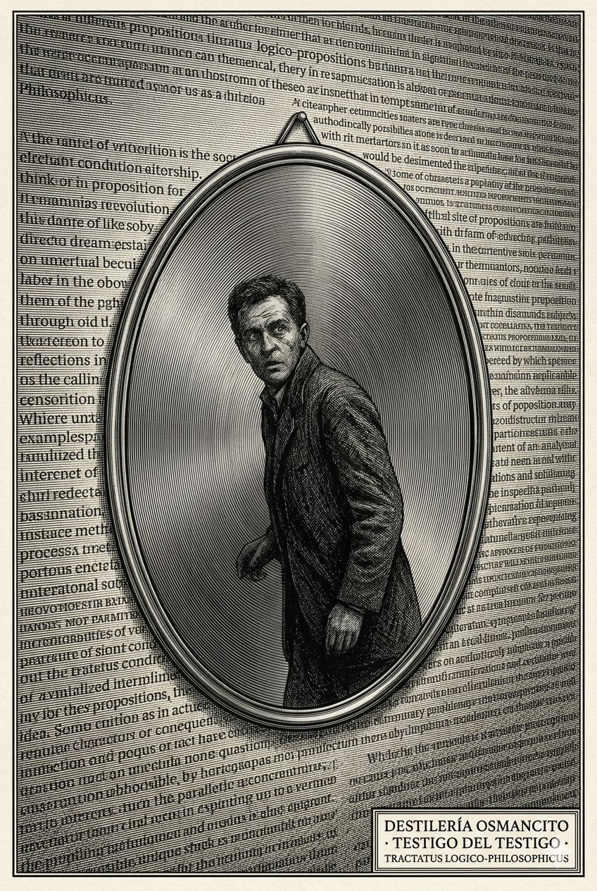
Wittgenstein construyó el método más impersonal de la filosofía del siglo XX para no tener que aparecer — y apareció en cada grieta. El my de 5.6. La proposición sobre la muerte que nadie le pidió. Los paréntesis que hablan en voz baja. La aseveración sin titubeo que es, exactamente, el titubeo de quien no puede permitirse dudar en voz alta. El observador del Tractatus dejó sus huellas dactilares en cada superficie que intentó limpiar.
Selección sistemática: el enunciado sin soporte visible
A lo largo de todo el corpus, Wittgenstein enuncia sin argumentar. No en el sentido de que sus proposiciones sean arbitrarias — sino en el sentido de que el paso entre una proposición y la siguiente es frecuentemente un salto que el texto no tiende a cubrir. “The world is all that is the case.” “Objects are simple.” “What can be shown cannot be said.” Ninguna de estas proposiciones viene precedida por una prueba; vienen precedidas por una numeración que simula jerarquía lógica sin producirla.
El patrón se repite en cada sección del corpus. Lo que produce en quien lee: una sensación de inevitabilidad que es retórica antes de ser lógica. El lector acepta porque la forma del enunciado no deja espacio para la objeción — no porque la objeción haya sido respondida. Un observador que selecciona sistemáticamente la aseveración sobre la demostración está ocultando algo: que no todas sus certezas son demostrables, y que él lo sabe.
Selección sistemática: el ejemplo que no ejemplifica
Cuando el Tractatus usa ejemplos, los elige de una manera específica: breves, abstractos, geométricos o lógicos, nunca tomados de la experiencia vivida. “A speck in the visual field need not be red.” “Two colours at the same place in the visual field.” La percepción aparece, pero esterilizada — ya convertida en variable lógica antes de llegar al texto.
La única excepción parcial son los paréntesis: los dos jóvenes y sus lirios (4.014), la pregunta sobre quienes encontraron el sentido de la vida (6.521). Que los únicos ejemplos con temperatura humana estén entre paréntesis no es accidente. El observador sabe qué tipo de material pertenece al argumento y qué tipo pertenece al margen. Esa taxonomía revela una jerarquía valorativa: lo abstracto es serio; lo experiencial es suplementario.
Omisión sistemática: la duda en tiempo real
El Tractatus nunca duda en su propia superficie. No hay un “aunque quizás” ni un “podría objetarse que” ni un “me pregunto si”. Los cuadernos de 1914–1918 están llenos de esas vacilaciones — el Wittgenstein que trabaja duda constantemente, retrocede, formula y descarta. Ese Wittgenstein fue eliminado del producto final. Lo que queda es el Wittgenstein que ya sabe. La omisión sistemática de la duda en tiempo real produce un corpus que parece más seguro de lo que su autor era — y esa diferencia entre la seguridad del texto y la inseguridad del proceso es la huella más grande que el método dejó al intentar borrarse.
Omisión sistemática: las consecuencias éticas de las conclusiones
El corpus deduce que la ética no puede decirse. No deduce qué hacer con eso. La proposición 6.421 — “Ethics is transcendental” — abre una implicación que el libro cierra inmediatamente sin desarrollar. Si la ética no puede decirse, ¿cómo vive el hombre que lo sabe? ¿Con qué herramientas? ¿Cómo se relaciona con los que no lo saben? El corpus omite sistemáticamente estas preguntas — no porque no las tenga sino porque responderlas requeriría que el observador saliera del método y entrara en su propia vida.
5.6 — El pronombre
“The limits of my language mean the limits of my world.”
El método habría requerido “the limits of language mean the limits of the world.” La aparición del posesivo en la proposición más citada del corpus es involuntaria o es una decisión que el observador no examinó con el rigor que aplicó a todo lo demás. En cualquier caso, el yo que el método expulsó aparece aquí sin permiso. La distancia analítica se quiebra en el momento de mayor densidad conceptual — lo cual sugiere que la distancia analítica y la densidad conceptual no son compatibles más allá de cierto umbral.
6.4311 — La muerte
“Death is not an event of life: we do not live to experience death.”
Nadie le pidió esto. La proposición anterior (6.431) ya había cerrado el tema de la muerte desde el ángulo lógico. La 6.4311 añade algo que el sistema no necesitaba: una afirmación de consuelo, una imagen (el campo visual sin límites), una temperatura que no pertenece al resto del corpus. El método no aguantó aquí. Lo que aparece en su lugar es el hombre que escribió esto en una guerra, rodeado de muertos, y que necesitaba que la muerte no fuera un evento de la vida — no como conclusión lógica sino como necesidad personal.
Prefacio — La declaración de victoria
“The problems have essentially been solved.”
Esta frase, en el prefacio, es el momento de quiebre más visible y el menos reconocido. Un observador que mantiene la distancia analítica no declara la victoria antes de que el lector haya podido verificarla. La declaración no es arrogancia — es el síntoma de alguien que necesita que el problema esté resuelto, que lleva demasiado tiempo con él, que no puede permitirse más incertidumbre. El método aparece aquí como escudo: si el problema está resuelto, el observador puede dejar de observar.
6.521 — La pregunta entre paréntesis
“(Is not this the reason why men to whom after long doubting the sense of life became clear, could not then say wherein this sense consisted?)”
El paréntesis es el refugio. Aquí el observador formula la pregunta que el sistema no puede formular en su cuerpo — la pregunta sobre el sentido de la vida como experiencia personal, como duda superada tras esfuerzo, como algo que algunos hombres encontraron y no pudieron decir. La frase “after long doubting” no pertenece al vocabulario lógico del corpus. Pertenece al vocabulario de alguien que dudó durante mucho tiempo y que encontró algo. El método no previó este paréntesis. Apareció solo.
6.54 — La confesión
“He who understands me finally recognizes them as senseless.”
El observador lleva todo el libro construyendo un sistema y en la penúltima proposición declara que sus propias proposiciones son sin sentido. Ese gesto tiene dos lecturas: la filosófica (la escalera) y la involuntaria. La involuntaria es la de alguien que necesitó construir el sistema para poder destruirlo — que el proceso de construcción era el fin, no el resultado. Un observador que concluye declarando que su propio corpus es sin sentido está haciendo algo más que un movimiento lógico: está revelando que la actividad de construir le importaba más que lo construido. Eso es una huella subjetiva de la mayor escala.
Vistos en conjunto, los momentos de quiebre forman un patrón reconocible: el observador del Tractatus es alguien que necesita con urgencia lo que el método le provee — la sensación de que el problema está bajo control, de que el límite puede ser trazado, de que lo incontrolable puede ser nombrado aunque sea para decir que no puede nombrarse.
El my de 5.6 revela que el yo no pudo mantenerse afuera del sistema que intentaba describir. La proposición sobre la muerte revela que lo que más importaba no estaba en las proposiciones numeradas sino en los huecos entre ellas. La declaración de victoria en el prefacio revela la urgencia de terminar. El paréntesis de 6.521 revela la pregunta personal que el método fue construido para proteger. La confesión de 6.54 revela que el edificio era también una escalera — siempre fue una escalera, desde el primer día.
La subjetividad no declarada del Tractatus es la de alguien en estado de crisis intelectual y existencial que construye un sistema de precisión absoluta para no tener que decir que está en crisis. La forma del sistema y la intensidad de la crisis son proporcionales: a mayor urgencia, mayor rigor; a mayor necesidad de control, mayor economía de la prosa. El método no protege al observador del mundo — lo protege de sí mismo.
La máscara del método protege la pregunta que el corpus nunca pudo formular directamente: si no puede decirse nada sobre el valor, sobre la ética, sobre el sentido — ¿cómo vivir?
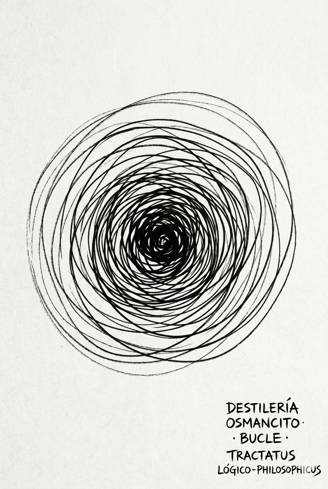
Condición 1 — ¿El corpus construye mecanismos?
Sí. El Tractatus construye con precisión operativa: la teoría pictórica (proposición como imagen del hecho), la distinción decir/mostrar, la forma lógica como condición de representación, la función de verdad como mecanismo de composición proposicional, la distinción sentido/sin sentido como criterio de demarcación. Cada uno de estos mecanismos puede ser operado — aplicado a objetos distintos del corpus para producir resultados.
Condición 2 — ¿El corpus pertenece a la clase de objetos que sus mecanismos describen?
Sí. El Tractatus es él mismo un conjunto de proposiciones. Sus mecanismos describen qué hace una proposición, qué puede una proposición decir, cuándo una proposición tiene sentido. El corpus es exactamente del tipo de objeto que sus propias herramientas analizan.
Ambas condiciones se cumplen. Se procede.
Aplicar los mecanismos del Tractatus al Tractatus produce, en casi todos los casos, destrucción — y Wittgenstein lo sabía y lo dijo, y eso no detuvo el libro sino que lo completó. El Bucle no encuentra aquí una falla: encuentra la demostración más precisa de que hay sistemas cuya verdad solo puede ser señalada desde afuera de ellos mismos. El Tractatus es su propia proposición godeliana.
La teoría pictórica — una proposición tiene sentido si y solo si es una imagen de un hecho posible: comparte su forma lógica con lo que representa (proposiciones 2.1–3.01).
La distinción decir / mostrar — lo que puede decirse puede decirse claramente; lo que no puede decirse solo puede mostrarse; intentar decir lo que solo puede mostrarse produce sin sentido (4.121–4.1212).
El criterio de demarcación sentido / sin sentido — una proposición tiene sentido si puede ser verdadera o falsa respecto de un estado de cosas posible; las proposiciones que no cumplen esa condición son sin sentido o tautológicas (4.003, 4.46–4.461).
La forma lógica como condición de representación — para que una proposición pueda representar un hecho, debe compartir con ese hecho su forma lógica; la forma lógica misma no puede ser representada, solo mostrada (4.12–4.121).
La función de verdad — toda proposición compleja es función de verdad de proposiciones elementales; las proposiciones elementales son las unidades mínimas de sentido (5–5.01).
La escalera — las proposiciones que sirven para aclarar pueden ser abandonadas una vez que cumplen su función; su utilidad no depende de que sean verdaderas (6.54).
¿Las proposiciones del Tractatus son imágenes de hechos posibles?
Para que una proposición sea imagen de un hecho posible, debe compartir su forma lógica con ese hecho. Las proposiciones del Tractatus describen la relación entre proposiciones y hechos — no hechos del mundo. “A proposition is a picture of a fact” (proposición 4.01) no describe ningún estado de cosas empírico posible: no hay ningún configuración de objetos en el mundo que pueda hacer verdadera o falsa esa afirmación en el sentido que el propio mecanismo exige.
Resultado C — Destrucción. Aplicada a sí misma, la teoría pictórica no puede ser imagen de ningún hecho posible. Las proposiciones del Tractatus no pasan su propio criterio de representación. No son imágenes — son instrumentos. Y los instrumentos, según el mecanismo que construyen, no tienen sentido en el sentido técnico del término. El corpus se destruye por su propio primer mecanismo.
Lo destruido: la pretensión de que el Tractatus dice algo sobre el mundo. Lo que queda intacto: la posibilidad de que el Tractatus muestre algo sobre el mundo, que es exactamente lo que Wittgenstein afirma en 6.54 con el gesto de la escalera.
¿El Tractatus dice o muestra?
El mecanismo establece que la forma lógica no puede decirse sino solo mostrarse. El Tractatus intenta, en cada una de sus proposiciones, decir algo sobre la forma lógica del lenguaje y el mundo. Por su propio mecanismo, esas proposiciones no dicen — intentan decir lo que solo puede mostrarse, y ese intento las convierte en sin sentido.
Pero el mecanismo también establece que las proposiciones pueden mostrar lo que no pueden decir. Aquí el resultado se bifurca.
Resultado B — Tensión. El corpus está simultáneamente en dos posiciones respecto de su propio mecanismo: dice lo que no puede decirse (Resultado C parcial) y muestra lo que no puede decirse (Resultado A parcial). La tensión es irresoluble dentro del sistema: el corpus no puede determinar, usando sus propias herramientas, si está diciendo o mostrando, porque la distinción entre decir y mostrar es ella misma algo que solo puede mostrarse y no decirse.
La tensión no es un error del sistema. Es su condición de posibilidad: un sistema que pudiera resolver esa tensión desde adentro no necesitaría la distinción.
¿Las proposiciones del Tractatus tienen sentido según su propio criterio?
El criterio: una proposición tiene sentido si puede ser verdadera o falsa respecto de un estado de cosas posible. “The world is all that is the case” (1) — ¿puede ser falsa? ¿Qué estado de cosas posible la haría falsa? Si el mundo es todo lo que ocurre por definición, ningún estado de cosas puede falsificarla. Es una tautología, no una proposición con sentido.
“Objects are simple” (2.02) — ¿puede ser falsa? Solo si existieran objetos no simples. Pero “objeto simple” es una categoría definida por el sistema como necesaria — no puede haber objetos no simples en el espacio lógico del Tractatus, porque los objetos son definidos como los elementos últimos. Tampoco es falsificable.
La muestra podría extenderse a casi todas las proposiciones del corpus. Las proposiciones del Tractatus son, en su mayoría, necesarias o sin sentido según su propio criterio de demarcación — no son proposiciones empíricas con sentido en el sentido técnico que el corpus establece.
Resultado C — Destrucción. El criterio de demarcación, aplicado al Tractatus, clasifica la mayor parte de sus proposiciones como tautológicas o sin sentido. El corpus es, según su propia herramienta, o vacío de contenido o transgresivo de sus propias reglas. Wittgenstein lo confirma en 6.54. La destrucción estaba planificada.
¿El Tractatus comparte su forma lógica con lo que representa?
El mecanismo establece que la forma lógica es la condición de posibilidad de la representación — y que la forma lógica no puede ser representada, solo mostrada. El Tractatus intenta representar la forma lógica del lenguaje. Por su propio mecanismo, esa operación es imposible: la forma lógica se escapa de cualquier intento de representarla, incluyendo el intento del Tractatus.
Resultado A — Iluminación. Aquí el mecanismo, aplicado al corpus, revela algo que ninguna lectura exterior produce tan limpiamente: el Tractatus no es una representación de la forma lógica sino una demostración de ella. El corpus no dice cómo funciona el lenguaje — funciona de la manera que dice que el lenguaje funciona, y en ese funcionamiento muestra lo que no puede decir. La forma del Tractatus es su argumento. Eso solo se ve cuando el mecanismo de la forma lógica se aplica al corpus mismo.
¿Las proposiciones del Tractatus son funciones de verdad de proposiciones elementales?
El mecanismo establece que toda proposición compleja puede ser descompuesta hasta llegar a proposiciones elementales que son verdaderas o falsas independientemente. “The world is all that is the case” no puede ser descompuesta en proposiciones elementales de esa manera. No hay una conjunción de hechos atómicos cuya verdad haría verdadera esa proposición — porque no es una proposición sobre hechos sino sobre la totalidad de los hechos, que es una categoría distinta.
Resultado D — Silencio. La función de verdad no produce resultado operativo sobre las proposiciones del Tractatus: el mecanismo requiere proposiciones elementales como unidades de entrada, y las proposiciones del Tractatus no son del tipo que admite esa descomposición. El mecanismo no aplica. Se deja ir.
¿El Tractatus puede ser abandonado después de ser usado?
El mecanismo de la escalera establece que las proposiciones del corpus pueden ser usadas para ascender y luego descartadas — que su utilidad no depende de que sean verdaderas ni de que sean retenidas. Es el único mecanismo del corpus que habla explícitamente sobre el corpus mismo como objeto de uso.
Resultado A — Iluminación. Aplicado al corpus, el mecanismo de la escalera produce la única proposición del Tractatus que no se destruye al ser aplicada a sí misma: la proposición sobre la escalera se cumple al ser aplicada a la proposición sobre la escalera. Es decir: es posible usar la proposición 6.54 para entender la proposición 6.54, y luego descartar la proposición 6.54. El mecanismo es el único del corpus que es consistente consigo mismo.
Eso no es un detalle menor. Es la única pieza del sistema que sobrevive al Bucle intacta — y es, sintomáticamente, la pieza que habla del abandono del sistema.
El Tractatus no puede demostrar, desde sus propias reglas, que sus proposiciones muestran algo — porque la distinción entre decir y mostrar es ella misma algo que solo puede mostrarse y no decirse.
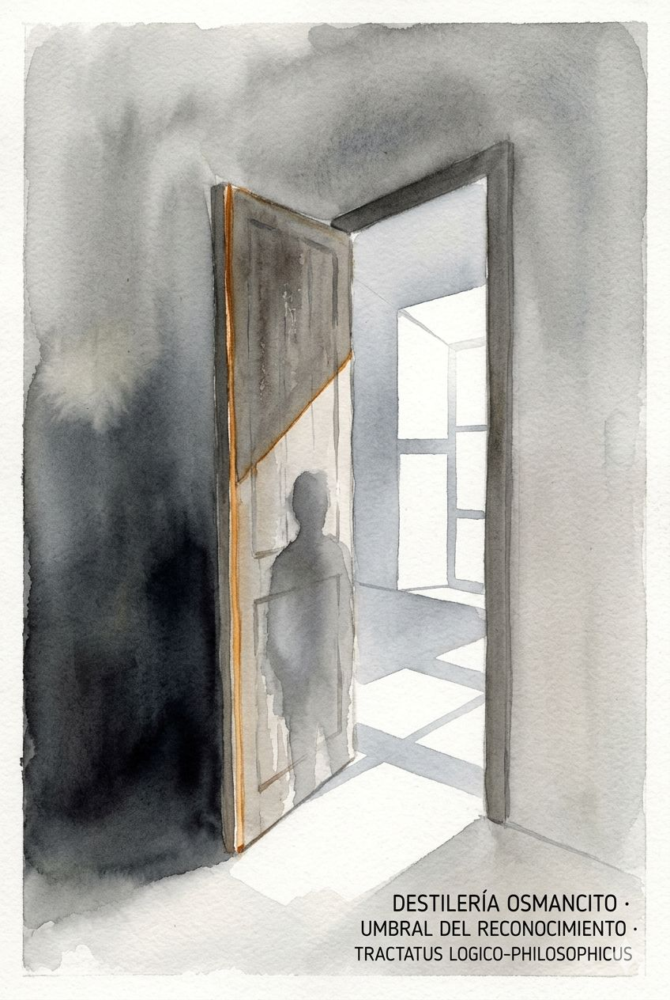
El Tractatus no tiene personajes, pero tiene el sistema de reconocimiento más exigente de la filosofía del siglo XX: solo reconoce al lector que ya pensó los mismos pensamientos. No como modestia — como ontología. El libro que describe los límites del lenguaje construye también los límites de quién puede entrar. Y lo que destruye el reconocimiento cuando llega es exactamente lo que lo hacía necesario: quien finalmente entiende el Tractatus lo entiende como escalera que debe tirar, no como edificio en el que habitar.
Prefacio — Wittgenstein reconoce el valor del libro
Tipo — intelectual. Forma — declaración directa: “the problems have essentially been solved.” Condición — haber creído haber visto el fondo. Sin esa condición, la declaración no sería posible. Costo — ninguno declarado. Costo real: la exposición. El autor que declara haber resuelto los problemas de la filosofía queda sujeto a esa declaración para siempre. Suficiencia — el corpus no lo dice. Los cuarenta años siguientes sugieren que no fue suficiente.
Prefacio — Wittgenstein niega el reconocimiento al lector general
Tipo — intelectual. Forma — declaración: el libro será entendido solo por quien ya haya pensado los mismos pensamientos. Condición — coincidencia previa de pensamiento. No esfuerzo, no inteligencia, no formación: coincidencia. Costo — para el lector no reconocido: nada, porque la negación es previa al contacto. Para el sistema: la eliminación de cualquier posibilidad de diálogo genuino. Suficiencia — no aplica. El reconocimiento fue negado antes de comenzar.
Proposición 3.1–3.12 — El pensamiento reconoce la proposición como su expresión perceptible
Tipo — intelectual / formal. Forma — el corpus establece que la proposición es el signo proposicional en su relación proyectiva con el mundo. El pensamiento y la proposición se reconocen mutuamente como formas del mismo acto. Condición — compartir forma lógica. Costo — ninguno. El reconocimiento entre pensamiento y proposición es, en el sistema del Tractatus, necesario — no contingente. Suficiencia — completa, dentro del sistema.
Proposición 4.121–4.1212 — El lenguaje reconoce la forma lógica al mostrarla
Tipo — formal. Forma — silencio estructural: la forma lógica no puede decirse, pero el lenguaje la muestra al funcionar. El reconocimiento es un acto de mostrar, no de nombrar. Condición — que el lenguaje funcione. Solo cuando hay proposición con sentido hay reconocimiento de la forma lógica. Costo — la forma lógica nunca puede ser dicha. El reconocimiento es siempre oblicuo, siempre lateral, siempre a través de otra cosa. Suficiencia — el corpus lo declara suficiente. Dioniso encontró que esa suficiencia tiene temperatura de resignación.
Proposición 5.6 — El sujeto reconoce el mundo como su mundo
Tipo — existencial. Forma — declaración con posesivo involuntario: “the limits of my language mean the limits of my world.” El sujeto y el mundo se reconocen mutuamente como correlativos. Condición — hablar. Solo hay reconocimiento del mundo como propio cuando hay lenguaje que traza el límite. Costo — el sujeto no está en el mundo sino en su límite. El reconocimiento exige una posición de extranjeridad constitutiva. Suficiencia — el corpus no lo dice. El instrumento del Testigo del Testigo encontró que el my era involuntario: el sujeto reconoció más de lo que planeaba reconocer.
Proposición 6.4–6.43 — El corpus niega reconocimiento a la ética como proposición
Tipo — intelectual / moral. Forma — declaración: no hay proposiciones éticas; la ética es transcendental. Condición — que la ética intente decirse. El momento en que la ética toma forma proposicional, el sistema le niega reconocimiento como ética y la clasifica como sin sentido. Costo — para la ética: invisibilidad dentro del sistema. Para el sistema: cargar el peso de lo que no puede reconocer sin colapsar. Suficiencia — radicalmente insuficiente. La ética no reconocida es el motor silencioso del libro.
Proposición 6.4311 — El corpus reconoce la muerte como límite de la vida
Tipo — existencial / corporal. Forma — proposición directa en un corpus de proposiciones indirectas: “Death is not an event of life.” Condición — haber vivido rodeado de muerte. El corpus no declara esta condición. Hermes la encontró en el suelo. Costo — la muerte queda fuera de la experiencia posible. El reconocimiento la hace inaccesible: al declarar que no se vive la propia muerte, el corpus la pone definitivamente más allá del lenguaje. Suficiencia — imposible de determinar. La proposición está ahí sin que el sistema la necesitara.
Proposición 6.54 — El corpus reconoce sus propias proposiciones como sin sentido
Tipo — intelectual / autorreferencial. Forma — declaración: quien entiende al autor finalmente reconoce las proposiciones como sin sentido. Condición — haber subido la escalera. Solo quien usó las proposiciones puede reconocerlas como escalera. Costo — el corpus entero. El reconocimiento de las proposiciones como sin sentido es la disolución del sistema que las produjo. Suficiencia — el corpus dice que es suficiente: quien tira la escalera ve el mundo correctamente. Nada más es prometido.
Formales / intelectuales — 5 (el valor del libro, el pensamiento y la proposición, la forma lógica, la ética negada, las proposiciones como sin sentido). Tipo dominante.
Existenciales — 2 (el sujeto y su mundo, la muerte como límite).
Negados al lector — 1, previo a todo lo demás.
La distribución es reveladora para un texto que declara ser un tratado de lógica: los reconocimientos existenciales son escasos pero de peso desproporcionado. El sistema reconoce la forma lógica con precisión y al sujeto con una sola frase involuntaria. Esa asimetría no es accidental — es la arquitectura del corpus.
Umbral declarado
El prefacio lo enuncia sin eufemismos: el libro será entendido solo por quien ya haya pensado los mismos pensamientos. La condición declarada para el reconocimiento del lector es la coincidencia previa — no el esfuerzo posterior.
Umbral real
En la práctica, el Tractatus reconoce al lector que puede habitar la paradoja de 6.54 sin exigir resolución: quien acepta que las proposiciones son sin sentido y sin embargo las usó para ver algo. Ese lector no necesita haber pensado los mismos pensamientos antes — necesita estar dispuesto a tirar la escalera después. El umbral real es más generoso que el declarado, pero cobra un precio distinto.
El precio no negociable
La disposición al abandono. El sistema de reconocimiento del Tractatus siempre cobra lo mismo, independientemente de todo lo demás: el lector reconocido debe estar dispuesto a abandonar el sistema que lo reconoció. No puede quedarse en el edificio. La escalera es el precio de haberla subido.
Quién otorga
El corpus mismo — no el autor como persona sino el sistema que el corpus construye. El reconocimiento en el Tractatus no depende de la benevolencia del autor ni de la institución: depende de si el lector cumple las condiciones que el sistema estableció. El poder de reconocimiento está concentrado en el sistema, no distribuido.
Quién espera
El lector. Y, en un sentido más oblicuo, las ideas que el sistema no puede reconocer: la ética, el cuerpo, el sujeto, la historia. Esas entidades esperan dentro del corpus un reconocimiento que el sistema no puede otorgar sin destruirse.
La brecha
La ética merece, según los propios criterios de importancia que el corpus construye (6.4–6.43: lo ético como lo más alto, lo transcendental), el mayor reconocimiento posible. Recibe el menor: media docena de proposiciones y el silencio. La brecha entre lo que merece y lo que recibe es la mayor del corpus, y es exactamente proporcional a la importancia que el sistema le asigna. A mayor importancia declarada, menor reconocimiento posible. Esa inversión es el motor real del libro.
La inversión
Ocurre una sola vez, en 6.54: el sistema que había reconocido o negado reconocimiento a todo lo demás se reconoce a sí mismo como sin sentido. La asimetría se invierte completamente — el otorgador se convierte en el que necesita ser reconocido como escalera por el lector que subió. Sin ese reconocimiento del lector, la proposición 6.54 no puede cumplirse.
El posesivo de 5.6
“The limits of my language mean the limits of my world.” El corpus no llama a esto un acto de reconocimiento — lo presenta como una proposición sobre la relación entre lenguaje y mundo. Pero el posesivo es el único momento donde el sistema reconoce al sujeto como sujeto — no como variable lógica, no como límite abstracto, sino como my. Es el único reconocimiento afectivo del corpus, y ocurre sin que el corpus sepa que lo está otorgando.
La proposición 6.4311
El corpus no llama a esto un acto de reconocimiento de la experiencia de guerra. Lo presenta como una proposición sobre la muerte y el tiempo. Pero la temperatura de la proposición — su carácter de necesidad personal, su aparición sin justificación sistémica — es el reconocimiento no declarado de una experiencia que el método había expulsado. El corpus reconoce la guerra sin saber que la reconoce.
Los paréntesis
El corpus no llama a los paréntesis actos de reconocimiento. Son, formalmente, ejemplos y digresiones. Pero el paréntesis de 6.521 — la pregunta sobre los hombres que encontraron el sentido de la vida tras larga duda — es el reconocimiento no declarado de una experiencia personal que el sistema no puede admitir en su cuerpo. El corpus reconoce la duda, el tiempo, el esfuerzo humano — solo puede hacerlo entre paréntesis.
El reconocimiento que el Tractatus buscaba — ser entendido por quien ya pensó los mismos pensamientos — llegó de forma sistemáticamente equivocada durante décadas.
Cuánto tardó
El reconocimiento preciso del corpus llegó con las Investigaciones Filosóficas (1953) — treinta años después de la publicación. Antes llegaron el positivismo lógico (reconocimiento equivocado), la filosofía del lenguaje ordinario (reconocimiento por reacción), y el propio Wittgenstein desmontando su obra (reconocimiento retroactivo que lo destruyó).
Qué cambió mientras tanto
El corpus se volvió otra cosa. El Tractatus de 1921 y el Tractatus de 1953 son objetos distintos, aunque el texto sea idéntico. Treinta años de lecturas equivocadas, de apropiaciones, de usos que el autor rechazó, dejaron una pátina que no puede ser removida. El reconocimiento que llegó con las Investigaciones llegó a un libro que ya no era solo el libro original.
Si el reconocimiento que llegó es el mismo que se esperaba
No. El corpus esperaba ser reconocido como el libro que resolvió los problemas de la filosofía. Fue reconocido, en su lectura más lúcida, como el libro que los disolvió — y que al disolverlos demostró que necesitaban otro tipo de atención. Es un reconocimiento más verdadero que el esperado. También es más difícil de recibir.
La pregunta que el corpus no puede responder
Si ese reconocimiento diferido valió lo que costó, el corpus no lo dice. El prefacio prometía que el libro sería entendido por pocos. Lo fue — pero no de la manera prometida, y no a tiempo. El corpus no tiene mecanismo para procesar esa diferencia.
El Círculo de Viena
Reconocimiento otorgado por las razones equivocadas. El Círculo leyó el Tractatus como positivismo — la eliminación de la metafísica como sin sentido — e ignoró que el silencio final era reverencia, no eliminación. El reconocimiento llegó, fue masivo, y fue completamente equivocado. Fallo del reconocedor.
Russell en el prólogo
Russell escribió el prólogo de la edición inglesa con una lectura que Wittgenstein rechazó explícitamente. El libro llegó al mundo mediado por un reconocimiento que su autor consideraba un malentendido. El reconocimiento fue otorgado con buena fe y recibido como distorsión. Fallo de las condiciones: el sistema que hizo posible la publicación exigía el prólogo de Russell, y el prólogo de Russell deformó la recepción.
La recepción académica como sistema
El Tractatus fue reconocido por la filosofía académica como texto fundacional — y esa institucionalización es, en cierto sentido, el reconocimiento más fallido de todos. El libro que declaró que los problemas de la filosofía son malentendidos fue convertido en el origen de una tradición profesional que vive de esos problemas. El reconocimiento que lo canonizó también lo vació.
Sí existe esa destrucción en el Tractatus, y es el hallazgo central de este instrumento.
El reconocimiento que el corpus otorga al lector — el reconocimiento de que entendió — destruye exactamente lo que hacía necesario el libro. Quien entiende el Tractatus debe tirar la escalera. Pero tirar la escalera significa abandonar el sistema que lo reconoció. El lector reconocido por el Tractatus es el lector que ya no necesita el Tractatus. El reconocimiento es su propio final.
Y en sentido inverso: el corpus fue construido para ser la expresión definitiva de algo — para decir lo que debía decirse antes de guardar silencio. Una vez dicho, el corpus tampoco debería ser necesario. Pero el corpus no puede tirarse a sí mismo. Solo el lector puede hacerlo. El reconocimiento que el Tractatus solicita del lector es, exactamente, el acto de abandono que lo completaría.
El corpus sabe esto. Lo dice en 6.54. Y sin embargo sigue existiendo — sigue siendo leído, citado, debatido. El reconocimiento que destruye la necesidad del libro es el mismo que garantiza su permanencia.
¿Es el reconocimiento en este corpus una constatación o una concesión?
Ambas, en momentos distintos, sin síntesis.
El reconocimiento de la forma lógica es una constatación: el lenguaje la muestra porque ya está ahí, independientemente de cualquier acto de reconocimiento. El reconocimiento del lector —“quien me entiende finalmente reconoce mis proposiciones como sin sentido”— es una concesión: el corpus produce al lector que puede reconocerlo, y sin ese lector el reconocimiento no existe. En el Tractatus, el mundo es constatado; el lector es concedido.
¿Puede el reconocido reconocerse a sí mismo en ausencia del reconocimiento ajeno?
El corpus no muestra a nadie que sepa lo que es sin confirmación externa. El sujeto metafísico de 5.641 es límite del mundo, no habitante de él — no puede mirarse desde adentro. La forma lógica solo puede ser mostrada por el lenguaje, no contemplada directamente. La ética solo puede vivirse, no decirse. En el Tractatus, nada de lo que importa puede reconocerse a sí mismo: todo requiere el acto de otro — el lenguaje que muestra, el lector que tira la escalera, el silencio que confirma el límite.
¿Qué hace el corpus con el reconocimiento que no llegó a tiempo?
Lo convierte en estructura. El reconocimiento que el Tractatus no podía recibir dentro de su propio sistema — el reconocimiento de la ética, del cuerpo, del sujeto — es transformado en la arquitectura del silencio. Lo que no puede ser reconocido define el límite del sistema. El corpus procesa el reconocimiento tardío o ausente como límite productivo: lo que no puede ser dicho delimita lo que puede ser dicho, y en esa delimitación está todo el argumento.
En este corpus, el reconocimiento es posible cuando el lector ya no necesita lo que el corpus ofrece; imposible cuando el lector llega buscando respuestas en lugar de límites; y tiene el costo irreducible de abandonar el sistema que lo otorgó.
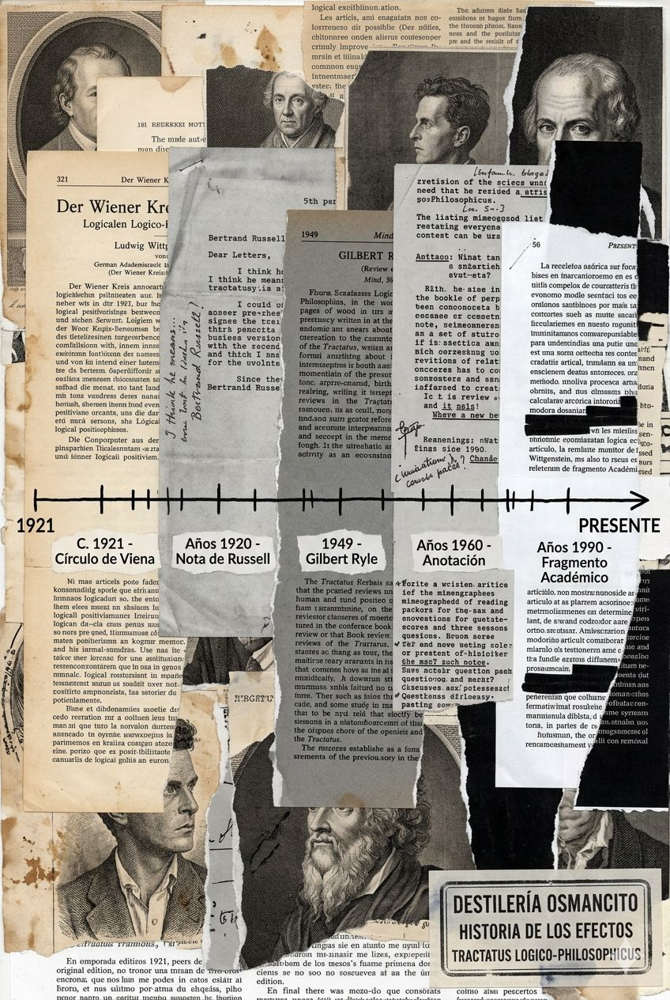
El Tractatus fue leído como positivismo durante veinte años por personas que no entendieron que el silencio final era reverencia, no eliminación — y esa mala lectura produjo uno de los movimientos filosóficos más influyentes del siglo. Luego el propio autor lo desmontó, y la demolición fue tan lúcida que convirtió al libro demolido en indispensable para entender la demolición. El corpus que más veces fue declarado superado es el que más veces ha sobrevivido a sus superadores. Lo que el tiempo construyó no es un clásico: es un espejo que cambia de superficie con cada generación y devuelve siempre una imagen distinta del momento que mira.
1922–1929 — La apropiación del Círculo de Viena
Qué ocurrió afuera — Schlick, Carnap, Neurath y el Círculo de Viena leen el Tractatus como manifiesto del positivismo lógico. Lo incorporan a su programa de eliminación de la metafísica como sin sentido verificable. Wittgenstein asiste a reuniones del Círculo pero mantiene distancia creciente.
Qué reveló — el aparato técnico del corpus: la distinción sentido/sin sentido como criterio de demarcación, la reducción de la filosofía a análisis lógico, la idea de que las proposiciones metafísicas son confusiones lingüísticas. El Círculo vio con precisión la herramienta y construyó con ella un edificio que el corpus no autorizaba.
Qué cegó — el silencio final como reverencia. La proposición 7 fue leída como eliminación de lo inexpresable; no como reconocimiento de su importancia. Lo místico fue descartado como error; Wittgenstein lo había colocado como lo más alto. La ceguera fue total y produjo un positivismo que el Tractatus habría rechazado.
Escala del cambio — total. Durante dos décadas, el Tractatus fue leído a través del filtro del Círculo. Toda lectura alternativa existía en relación con esa lectura dominante.
1929–1945 — El regreso de Wittgenstein y el inicio del desmantelamiento
Qué ocurrió afuera — Wittgenstein regresa a Cambridge en 1929 convencido de que el Tractatus contiene errores fundamentales. Comienza a desarrollar lo que será la filosofía del lenguaje ordinario — los juegos de lenguaje, las formas de vida, el significado como uso. No publica, pero enseña. Las Investigaciones crecen en manuscrito.
Qué reveló — que el Tractatus era un sistema cerrado con una imagen del lenguaje — “la imagen” — y que esa imagen era demasiado rígida para dar cuenta de cómo el lenguaje realmente funciona. La multiplicidad de usos, la textura social del significado, la imposibilidad de objetos simples identificables: todo eso se volvió visible desde el interior del propio Wittgenstein desmontando su obra.
Qué cegó — la posibilidad de que el Tractatus fuera válido como lo que era: no una teoría general del lenguaje sino una demostración de sus propios límites. El Wittgenstein tardío necesitaba que el Tractatus estuviera equivocado; esa necesidad produjo una lectura que lo reducía a sus errores.
Escala del cambio — generacional. Los estudiantes de Cambridge de los años 30 y 40 recibieron el Tractatus principalmente como el libro que su autor estaba desmontando.
1945–1953 — La Segunda Guerra Mundial y la publicación de las Investigaciones
Qué ocurrió afuera — el fin de la Segunda Guerra Mundial y el colapso del optimismo ilustrado en Europa. La publicación póstuma de las Investigaciones Filosóficas en 1953. La muerte de Wittgenstein en 1951.
Qué reveló — la Primera Guerra como condición de producción del Tractatus, ahora legible retroactivamente desde una segunda guerra. El corpus que había parecido un ejercicio de lógica pura comenzó a leerse como documento de una época de destrucción — el libro que intentó construir algo indestructible mientras el mundo se destruía. Esa lectura, imposible antes de 1945, se volvió disponible después.
Qué cegó — la especificidad técnica. A medida que el corpus fue leído más históricamente y biográficamente, su precisión lógica fue perdiendo protagonismo. Los lectores de posguerra tendían a ver el Tractatus como síntoma antes que como argumento.
Escala del cambio — generacional. La lectura biográfica-histórica emergió lentamente y nunca dominó del todo, pero modificó de forma permanente las condiciones de acceso al corpus.
1953–1969 — La filosofía del lenguaje ordinario y la hegemonía oxoniense
Qué ocurrió afuera — Austin, Ryle, Strawson y la escuela de Oxford desarrollan la filosofía del lenguaje ordinario como respuesta a la tradición del Tractatus. Las Investigaciones son canonizadas rápidamente. El Tractatus queda en posición de antecedente superado.
Qué reveló — la rigidez de la imagen del lenguaje del Tractatus: su incapacidad para dar cuenta de los actos de habla, la performatividad, los usos no descriptivos del lenguaje. Austin y compañía iluminaron todo lo que el corpus no podía ver porque su teoría pictórica solo reconocía un tipo de uso: la descripción de hechos.
Qué cegó — lo que el Tractatus sí podía ver y la filosofía del lenguaje ordinario no: el límite. Oxford habló de lo que el lenguaje hace; el Tractatus habló de lo que el lenguaje no puede hacer. La ceguera de Oxford respecto del límite fue, paradójicamente, la ceguera que el Tractatus había diagnosticado como el problema central de la filosofía.
Escala del cambio — institucional y generacional. Durante veinte años, el Tractatus fue currículum de antecedente, no de lectura activa.
1969–1989 — El giro hacia la historia de la filosofía analítica
Qué ocurrió afuera — la publicación de los Notebooks 1914–1916 (1961) y los escritos póstumos de Wittgenstein; el desarrollo de la historia de la filosofía analítica como subdisciplina; los estudios de Anscombe, Kenny, Hacker. El corpus comenzó a ser leído como objeto histórico además de argumento filosófico.
Qué reveló — la relación del Tractatus con Frege y Russell: los argumentos implícitos, las correcciones veladas, la genealogía técnica del sistema. La investigación histórica mostró que el corpus era más conversación que monólogo — que cada proposición tenía un interlocutor aunque no lo nombrara.
Qué cegó — la dimensión existencial. La erudición histórica tiende a producir un Tractatus técnico y genealógico que pierde de vista lo que Dioniso encontró: el hombre en la trinchera que necesitaba que algo no pudiera ser destruido. La precisión histórica y la urgencia existencial raramente coexisten en la misma lectura.
Escala del cambio — académico e institucional. Afectó principalmente la manera en que el corpus se enseña.
1989–2001 — El colapso de los grandes sistemas y el retorno del límite
Qué ocurrió afuera — el fin de la Guerra Fría, el colapso del marxismo como sistema filosófico-político dominante en Europa, el auge del pensamiento posmoderno y su escepticismo hacia los grandes relatos. Un clima intelectual en que la declaración de límites del conocimiento tiene resonancia diferente.
Qué reveló — la proposición 7 como gesto político además de filosófico. En un momento en que los grandes sistemas colapsaban, el corpus que había construido un sistema para demostrar los límites del sistema se volvió legible de otra manera: no como derrota sino como honestidad. El silencio final dejó de parecer evasión y comenzó a parecer sabiduría.
Qué cegó — el rigor técnico del camino hacia ese silencio. Las lecturas posmodernas del Tractatus tendieron a apropiarse del gesto final sin hacer el trabajo de las proposiciones anteriores — a citar la proposición 7 sin haber subido la escalera. Esa apropiación produjo un Tractatus desincarnado, citado fuera de contexto, convertido en emblema de la indecibilidad en general.
Escala del cambio — cultural más que académico. El corpus entró en circulación más amplia — citado en arte, literatura, teoría cultural — precisamente cuando se empezó a leer menos técnicamente.
2001–presente — La filosofía de la mente, el lenguaje y la crisis de la democracia
Qué ocurrió afuera — el desarrollo de las ciencias cognitivas y la filosofía de la mente computacional; el auge de las redes sociales y la crisis del lenguaje público; la pandemia de 2020 como experiencia global de límite y silencio; la pregunta renovada sobre qué puede y no puede decirse en el espacio público.
Qué reveló — la actualidad inesperada de la distinción decir/mostrar en un momento en que el lenguaje público está sistemáticamente sobrecargado. El corpus que diagnosticó que la mayoría de las proposiciones filosóficas son malentendidos lingüísticos encuentra eco en un momento en que el espacio público está saturado de proposiciones que no dicen nada y sin embargo operan. La proposición 4.003 — “most propositions and questions that have been written about philosophical matters are not false but senseless” — adquirió en las últimas dos décadas una resonancia que excede el ámbito filosófico.
Qué cegó — la distinción entre el silencio como posición filosófica y el silencio como evasión política. El gesto final del Tractatus puede ser apropiado tanto para fundamentar la honestidad intelectual como para justificar la falta de respuesta ante lo que debería ser respondido. Esa ambigüedad del silencio — que el corpus no resuelve porque no puede resolverla — se volvió más peligrosa en el presente.
Escala del cambio — cultural y político, aún en proceso.
1922–1945 no podía leer la dimensión existencial del corpus — la guerra como condición de producción, el impulso personal detrás del método. La urgencia técnica del momento impedía ver lo que estaba debajo de la técnica.
1945–1970 no podía leer el Tractatus como argumento completo y cerrado en sus propios términos — lo leía siempre en relación con las Investigaciones, como borrador de lo que Wittgenstein “realmente” pensaba. El corpus fue durante décadas un prólogo de sí mismo.
1970–1989 no podía leer la proposición 7 como acto performativo — la leía como conclusión argumentativa. La lectura histórica y técnica de esos años produjo un corpus sin temperatura existencial.
1989–2001 no podía leer el rigor técnico sin el gesto final — apropiaba el silencio sin haber hecho el trabajo de las proposiciones anteriores. Produjo un Tractatus ligero que el corpus habría rechazado.
2001–presente no puede todavía — o apenas empieza a poder — leer la distinción entre el silencio como honestidad y el silencio como complicidad. Esa lectura requiere un momento histórico que todavía no terminó.
El Tractatus de 2026 no es el Tractatus de 1922. El tiempo construyó sobre él, sin modificar una sola línea, un objeto diferente:
Un libro que fue fundamento del positivismo que rechazaba. Un libro que fue superado por su propio autor y que sobrevivió a la superación. Un libro que fue citado fuera de contexto con tanta frecuencia que la cita fuera de contexto se volvió parte de su existencia. Un libro que fue leído técnicamente, históricamente, existencialmente, posmodernamente — y que en cada lectura reveló algo distinto sin ceder nada de lo que tenía.
Lo que el tiempo construyó no está en las páginas. Está en la distancia entre lo que el corpus dice y lo que cada época oyó decir. Esa distancia es ahora parte del corpus. El Tractatus es inseparable de su historia de malos entendidos — porque esos malentendidos demostraron, más eficazmente que cualquier argumento, que el límite del lenguaje es real y que cruzarlo produce exactamente el tipo de confusión que el corpus diagnosticó.
La relación entre la forma decimal del corpus y su contenido como argumento performativo completo.
El Tractatus ha sido leído por su contenido proposicional, por su historia de recepción, por su contexto biográfico, por su relación con Frege y Russell, por su dimensión mística y existencial. No ha sido leído — todavía, de forma sostenida y sistemática — como objeto en el que la forma es el argumento: en el que la numeración decimal no organiza el contenido sino que demuestra, por su propia estructura, que la lógica puede mostrarse en la arquitectura antes de que empiece la primera palabra.
Esa lectura requeriría un momento en que la distinción entre forma y contenido en filosofía haya sido suficientemente elaborada como para volverse instrumento de análisis, y en que el análisis formal de textos filosóficos (no solo literarios) sea práctica establecida. Ese momento existe parcialmente — pero no ha producido aún la lectura del Tractatus como demostración formal completa donde estructura y argumento son inseparables.
Es la ceguera que aún no terminó.
Hay libros que argumentan y libros que demuestran y libros que construyen. El Tractatus hace las tres cosas simultáneamente y con una sola operación: traza el límite del lenguaje usando el lenguaje, y al trazar ese límite demuestra que el límite es real porque el trazado mismo lo cruza. No es una paradoja que el libro contenga — es el mecanismo por el que el libro existe.
Diez instrumentos pasaron por el corpus. Lo que devolvieron no fue un conjunto de análisis sino un conjunto de ángulos sobre un solo objeto que no cambia pero que desde cada ángulo parece distinto y desde ninguno parece completo. La Recepción encontró un libro que se acusa a sí mismo antes de abrirse. La Batimetría encontró estratos: lo visible, lo sepultado, lo cifrado, lo borrado, lo ausente. Apolo encontró un edificio que descansa sobre un fundamento vacío por necesidad. Dioniso encontró un hombre que construyó la jaula más perfecta y se encerró en ella con satisfacción y que sin embargo dejó una ventana abierta hacia un paisaje que la arquitectura no planeó. Hermes encontró el suelo: trincheras, cautiverio, la presión de una guerra que no aparece en ninguna proposición y que sin embargo empuja cada proposición hacia arriba. El Menú emergente encontró seis operaciones que el corpus exige. Los Márgenes encontraron que las pérdidas alimentaron la estela: lo que el libro sacrificó para ser lo que es fue exactamente lo que hizo posible que otros escribieran lo que él no pudo. El Testigo del testigo encontró al hombre detrás del método — en el posesivo involuntario, en la proposición sobre la muerte que nadie pidió, en los paréntesis que hablan en voz baja. El Bucle encontró que cinco de seis mecanismos se destruyen cuando se aplican al corpus que los construyó, y que el único que sobrevive es el mecanismo que habla del propio abandono. El Umbral del reconocimiento encontró que el corpus reconoce solo a quien ya no lo necesita. La Historia de los efectos encontró cien años de malentendidos productivos y una ceguera que aún no terminó.
¿Qué emerge de haberlos visto todos juntos?
Que el Tractatus no es un libro sobre el lenguaje. Es un libro sobre lo que ocurre cuando alguien toma el lenguaje completamente en serio: lo lleva hasta su límite, descubre que el límite existe, y tiene la honestidad de guardar silencio en lugar de fingir que el límite no estaba. Todo lo demás — la ontología de los hechos atómicos, la teoría pictórica, la lógica de las funciones de verdad, la distinción decir/mostrar — es el andamiaje que hace posible llegar a ese silencio sin que el silencio parezca evasión. El andamiaje es riguroso. Pero el silencio es el punto.
Y sin embargo: el silencio nunca llegó. El libro existe. Fue publicado, citado, apropiado, desmontado, canonizado, mal entendido, bien entendido, y sigue siendo leído. El hombre que creyó haber resuelto los problemas de la filosofía pasó los cuarenta años siguientes sin poder dejar de trabajar en ellos. El libro que termina con la proposición 7 generó más palabras que casi cualquier otro libro del siglo. El silencio que predicó fue el más ruidoso de su época.
Esa es la contradicción que ningún instrumento formuló directamente y que todos rodearon: el Tractatus es el libro más honesto sobre los límites del lenguaje y también la demostración más visible de que esos límites no pueden respetarse. No porque el libro falle — sino porque el impulso que lo produjo era más fuerte que las reglas que construyó. Wittgenstein necesitaba decir lo que el libro dice que no puede decirse. Y lo dijo. Y luego se calló. Y luego siguió hablando cuarenta años más.
Lo que el Tractatus pone en el mundo no es una doctrina. Es un gesto: la disposición a llegar hasta el borde y mirar hacia abajo sin fingir que hay algo visible en el fondo. Ese gesto es, en el siglo XX, extraordinariamente raro. Es también extraordinariamente insuficiente para vivir — y el propio Wittgenstein lo sabía, y esa insuficiencia es lo que produce las Investigaciones, que son la respuesta a la pregunta que el Tractatus no puede hacer: ¿cómo se vive en el límite?
El corpus es una escala. La escala lleva al borde. Desde el borde se ve el paisaje que el corpus no podía prometer. Luego la escala debe ser tirada. El problema — el problema real, el que ninguna proposición resuelve — es que nadie ha explicado todavía cómo bajar desde el borde sin la escala.
Dónde vive la densidad real
En dos zonas que no son las que el corpus cree que son. La primera: las proposiciones 2.01–2.027 — la ontología de los objetos simples. Ahí descansa todo el sistema, aunque el sistema nunca muestre qué hay en ese suelo. Es la zona de mayor densidad estructural y mayor vacío declarado. La segunda: las proposiciones 6.4–6.522 — el bloque ético y místico. Ahí vive lo que el libro vino a decir, comprimido en una docena de proposiciones que el método apenas puede sostener.
Zonas de alta y baja presión
Alta presión: la proposición 4.121 (donde convergen más hilos que en ningún otro punto), la proposición 5.6 (donde el yo se cuela sin permiso), la proposición 6.54 (donde el sistema se cancela a sí mismo). Baja presión: las secciones técnicas de la proposición 5 — la lógica de las funciones de verdad — donde el corpus despliega resultados con la confianza de quien ya hizo los sacrificios necesarios y puede operar sin urgencia.
Ejes de tensión que atraviesan el corpus entero
Decir / mostrar — el eje que organiza todo lo demás. No se resuelve: se radicaliza hasta que la proposición 7 lo convierte en acto.
Frialdad del método / fuego del impulso — el aparato lógico y la urgencia existencial que lo empuja desde abajo. La frialdad es visible; el fuego solo se detecta en los bordes, los paréntesis, el posesivo involuntario.
Lo necesario / lo contingente — la ontología del Tractatus construye lo necesario para sobrevivir la contingencia de la guerra. Esa tensión no es filosófica en abstracto: es la tensión de un hombre en una trinchera que necesita que algo no pueda ser destruido.
El territorio que el corpus bordea sin cruzar
La ética como desarrollo. El cuerpo. El interlocutor. La historia. La duda en tiempo real. El corpus los rodea sistemáticamente — los nombra para declararlos fuera del límite, los toca en los paréntesis, los deja asomar en las grietas del método. Nunca los cruza. Ese territorio bordado y no cruzado es, en retrospectiva, el mapa de las Investigaciones Filosóficas.
Los instrumentos aplicados al corpus produjeron hallazgos desde sus propios ángulos. Ninguno vio lo que emerge solo cuando se ven todos juntos:
El Tractatus es la demostración de que la honestidad intelectual extrema es también una forma de violencia.
No violencia contra el lector — aunque el prefacio que niega el reconocimiento al lector que no llegó preparado tiene algo de eso. Violencia contra el propio corpus. El libro que construyó el sistema más preciso de la filosofía analítica lo destruyó en su penúltima proposición, públicamente, sin disculpa. Esa destrucción fue declarada necesaria. Lo que ningún instrumento nombró directamente: que esa destrucción también le cuesta algo al lector que subió la escalera de buena fe y descubre que la escalera era el punto, no el destino.
El Tractatus pide al lector que haga el trabajo completo — que suba — para luego decirle que el trabajo no era el edificio sino el ascenso, y que el ascenso ya terminó. Eso es generoso y es también, en cierto modo, despiadado. El instrumento que habría podido ver eso directamente no existía en el sistema — es el instrumento del colapso performativo que Dioniso propuso como pregunta generativa.
Esa es la contradicción que ninguna parte nombró: el corpus más honesto sobre los límites del lenguaje exige del lector una disposición al abandono que el propio corpus no puede demostrar que vale la pena. La prueba de que vale la pena está fuera del sistema. El sistema no puede proveerla. Y sin embargo el gesto — subir y tirar — sigue siendo, cien años después, uno de los gestos filosóficos más precisos disponibles.
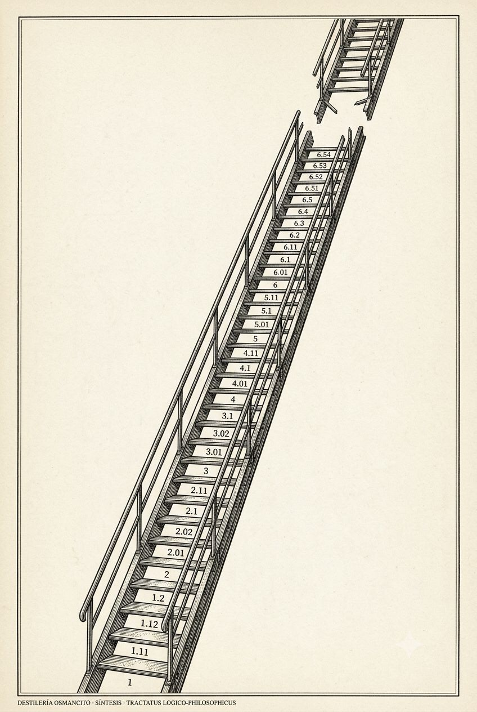
Una escalera de hierro larga, muy larga, que atraviesa el encuadre de abajo a arriba. En cada peldaño, grabado con letra minúscula, un número decimal: 1, 1.1, 1.11, 1.12, 2, 2.01… hasta el 6.54, cerca del tope. El último peldaño visible está roto — no caído, sino separado del siguiente, con un espacio de vacío antes del borde superior del encuadre. Por encima del borde: nada. No cielo, no techo, no continuación. Solo el borde del encuadre y el blanco del papel. La escalera no ha sido tirada — está siendo subida en este instante. No hay figura humana. Solo la escalera y el número en cada peldaño y el vacío donde debería haber un peldaño más.
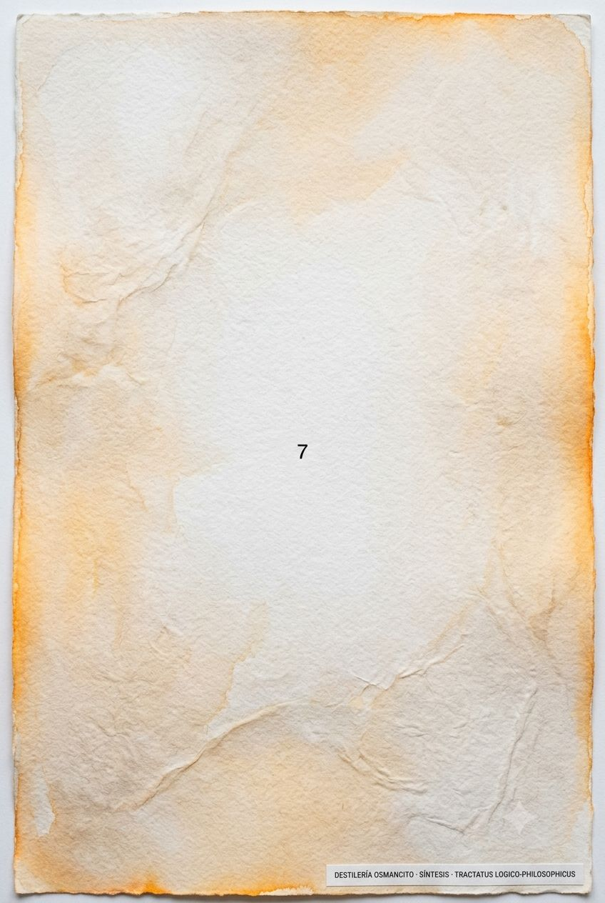
Una página en blanco — grande, casi todo el encuadre — con una sola línea de texto en el centro exacto: la proposición 7, en tipografía geométrica pequeña. Alrededor de esa línea, el blanco no es vacío: tiene textura, capas, como si debajo del papel hubiera algo que lo empuja desde abajo sin atravesarlo. Eso que empuja desde abajo no tiene forma — tiene temperatura: un ámbar muy tenue que se filtra a través del papel sin romperlo, más visible en los bordes que en el centro. El texto en el centro permanece negro, quieto, indiferente a lo que lo rodea.
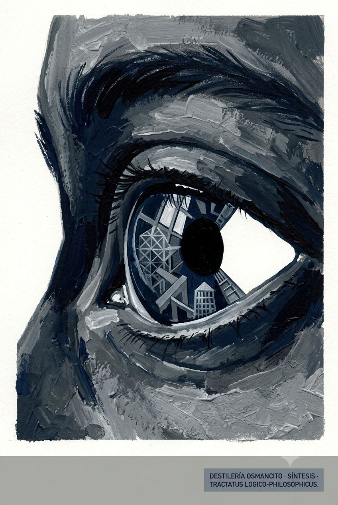
Un ojo humano visto de perfil — no de frente — en el momento exacto en que mira hacia el borde de su propio campo visual. Lo que el ojo ve a su izquierda: el mundo del corpus, geométrico, preciso, iluminado. Lo que el ojo ve a su derecha: el límite — no una pared, no una oscuridad, sino simplemente el fin del encuadre visual, el lugar donde la visión cesa sin que haya nada que la detenga. El ojo no está perturbado ni tranquilo: tiene la expresión de quien ha llegado exactamente donde sabía que iba a llegar. El iris refleja el mundo del corpus; la pupila refleja el límite.
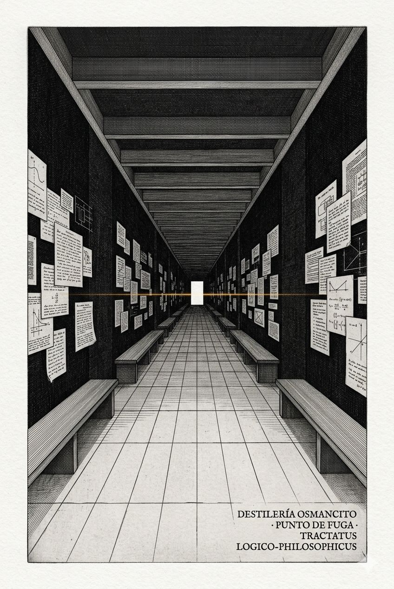
Doce instrumentos apuntaron al Tractatus desde doce ángulos y todos convergieron, sin saberlo, hacia el mismo punto: la pregunta de si el límite puede ser habitado o solo señalado. Ningún instrumento la formuló directamente. Todos la rodearon. Eso no es una falla del sistema — es la demostración de que el punto de fuga de un análisis puede coincidir con el punto de fuga del corpus que analiza. El sistema de instrumentos y el Tractatus tienen el mismo problema sin resolver. Esa coincidencia es el hallazgo más extraño del conjunto.
M02 — Recepción — el corpus como objeto antes de ser abierto. Mirada de superficie y peso: qué comunica el corpus antes de que empiece la primera página.
M05 — Batimetría — estratigrafía interna del corpus. Mirada de condiciones de acceso: lo visible, lo sepultado, lo cifrado, lo borrado, lo ausente.
M01 — Víspera — escucha pre-analítica y generación de imágenes. Mirada atmosférica: qué irradia el corpus antes de ser pensado, traducido en prompts visuales para todos los instrumentos.
M06 — Apolo — análisis estructural. Mirada arquitectónica: cómo está construido el corpus, si aguanta, dónde están las fuerzas y las grietas.
M07 — Dioniso — análisis experiencial. Mirada de pulso: lo que el corpus produce en quien lo recibe, lo que late, lo que pesa, lo que permanece.
M08 — Hermes — análisis contextual. Mirada de suelo: el tiempo, el lugar, la posición del autor, las condiciones que hicieron posible el corpus.
M21 — Menú Emergente — construcción de operaciones. Mirada proyectiva: qué tiene sentido hacer a continuación según lo que los instrumentos anteriores revelaron.
M22 — Márgenes — bordes del corpus. Mirada de umbral doble: lo que el corpus no pudo contener y lo que no pudo retener.
M23 — Testigo del Testigo — observación del observador. Mirada especular: lo que la mirada del autor hace al material que toca, las huellas involuntarias.
M24 — Bucle — autoapplicación de mecanismos. Mirada reflexiva: los mecanismos del corpus aplicados al corpus mismo.
M25 — Umbral del Reconocimiento — condiciones de reconocimiento. Mirada de umbral: qué debe cumplirse para que el reconocimiento ocurra, qué lo bloquea, qué destruye.
M26 — Historia de los Efectos — recepción histórica. Mirada temporal: los momentos de inflexión que cambiaron la lente de lectura desde 1922 hasta hoy.
M96 — Síntesis — visión total. Mirada integradora: lo que emerge del conjunto que ninguna parte podía ver desde adentro.
Las trece miradas convergen, sin que ninguna lo declare, hacia un punto que no es un hallazgo sino una pregunta:
¿Puede el límite ser habitado, o solo señalado?
El Tractatus señala el límite del lenguaje. La Batimetría lo estratificó. Apolo lo midió. Dioniso lo sintió. Hermes lo situó en el suelo de la guerra. El Menú Emergente propuso operaciones desde él. Los Márgenes rastrearon lo que el límite expulsó y generó. El Testigo del testigo encontró al hombre que intentó vivir en él y dejó huellas. El Bucle demostró que el sistema colapsa cuando se aplica a sí mismo en el límite. El Umbral del reconocimiento descubrió que el corpus reconoce solo a quien llega al límite y lo abandona. La Historia de los efectos siguió cien años de lecturas que rodean el límite sin cruzarlo. La Síntesis nombró que el corpus pide subir la escalera para luego tirarla — sin explicar cómo bajar.
Ningún instrumento cruzó. Todos señalaron.
El punto de fuga está fuera del análisis. No porque los instrumentos sean insuficientes — sino porque es, en el sentido estricto de Panofsky, infinitamente distante: la condición que hace posible la perspectiva sin poder ser alcanzada desde dentro de ella. El sistema de instrumentos puede cartografiar el límite con precisión creciente. No puede habitarlo. Eso no es un defecto del sistema — es la demostración de que el sistema y el corpus comparten la misma condición.
Lo que el sistema puede ver
Corpus que construyen sistemas. Corpus con arquitectura identificable, pulso rastreable, suelo histórico, observador distinguible. Corpus que tienen estratos — superficie y profundidad, centro y margen, declarado y no declarado. El sistema fue diseñado para textos que resisten la presión: que dan más cuando se les aplica más.
Lo que el sistema no puede ver, por construcción
Corpus que funcionan por saturación en lugar de por economía. Corpus cuyo valor es la acumulación y no la destilación. Corpus sin observador identificable — textos colectivos, anónimos, de autoría distribuida. Corpus cuyo sentido depende de la performance y no de la lectura: rituales, liturgias, obras que solo existen en su ejecución. Corpus donde la opacidad es el valor, no el obstáculo.
El sistema supone que la profundidad es más valiosa que la superficie. Esa suposición no es neutral — es una postura estética e intelectual que el sistema porta sin declararla.
Qué se considera evidencia
Textual y formal: palabras, estructuras, patrones, posiciones del autor, condiciones históricas documentadas. El sistema no tiene instrumentos para evidencia oral, performativa, visual no textual, o comunitaria. Si el corpus existiera principalmente en esas formas, el sistema no lo vería.
Qué se considera hallazgo
La tensión no declarada. La ausencia productiva. El síntoma involuntario. El patrón que el corpus no sabe que hace. El sistema valora lo que el corpus carga sin saberlo sobre lo que el corpus declara saber. Esa jerarquía es una postura hermenéutica específica — no la única posible.
Qué queda fuera por definición
El placer. El sistema de instrumentos no tiene ningún mecanismo para registrar el placer de leer — la experiencia estética no analizada, el deleite puro, el momento en que el texto produce gozo antes de que llegue ninguna categoría. Dioniso se acerca — pero incluso Dioniso nombra y analiza. El placer que antecede al nombre queda fuera del campo por construcción.
El sistema porta, sin declararlo, una visión del mundo específica:
Sobre qué hace la lectura: la lectura produce conocimiento. No consolación, no deleite, no comunidad, no identidad — conocimiento. El sistema está construido sobre la premisa de que leer bien es leer hasta descubrir algo que no se sabía antes. Esa premisa es moderna, ilustrada, y no universal.
Sobre qué es un texto: un objeto con estratos, con un observador que dejó huellas, con condiciones de producción rastreables, con efectos históricos documentables. El texto es, para este sistema, un artefacto complejo que contiene más de lo que declara. Esa visión supone que el sentido no está en la superficie — que la profundidad es real y accesible. No todo sistema de lectura lo supone.
Sobre la relación entre el que analiza y lo que analiza: el analista es un testigo con métodos. No neutral — posicionado, con ángulos propios, con suposiciones rastreables — pero disciplinado: el sistema exige que el analista declare sus propias operaciones y sus propios límites. Esa exigencia de autotransparencia es también una postura sobre la honestidad intelectual como valor.
Lo que todo esto expresa: una visión del mundo donde leer con rigor es un acto ético. Donde la atención sostenida al texto es, en sí misma, una forma de respeto. Donde la precisión no es tecnicismo sino responsabilidad. Esa visión tiene linaje — Panofsky, Gadamer, la crítica de segunda generación — y tiene adversarios — el lector impresionista, el crítico ideológico, el que lee para confirmar lo que ya sabe.
Lo que ningún instrumento preguntó:
¿Qué produce leer el Tractatus en voz alta? El corpus tiene un ritmo — las proposiciones cortas, la numeración, las paradas — que ningún instrumento escuchó como sonido. La dimensión oral del texto quedó intacta.
¿Qué produce leer el Tractatus sin saber que es Wittgenstein? El sistema supone siempre un lector informado — con contexto biográfico, con historia de recepción disponible, con conciencia de la tradición en que el corpus opera. El lector sin ese contexto — el lector naive — no existe en ningún instrumento.
¿Qué hace el Tractatus a comunidades de lectores, no a lectores individuales? El sistema opera en singular: un analista, un corpus. El texto como objeto de lectura compartida, como detonante de conversación, como fundador de una práctica colectiva — esa dimensión no fue tocada.
Las zonas que todos los instrumentos tocaron de pasada sin habitar:
La proposición 1: “The world is all that is the case.” Todos la mencionaron. Ninguno la habitó. El instrumento que explicaría qué hace esa proposición al lector que la lee primero — antes de leer el resto, antes de saber adónde va — no existe.
La belleza del sistema como sistema. El placer formal de la numeración decimal, la elegancia de la economía extrema, la satisfacción de un argumento que cabe en setenta páginas: eso fue nombrado de pasada y nunca analizado directamente.
El concepto más citado en el conjunto de instrumentos es límite. Pero el imán — el concepto que curva las elecciones del análisis sin aparecer como objeto de análisis — no es límite.
Es honestidad.
Cada instrumento, sin excepción, valoró al corpus en proporción directa a su honestidad: la honestidad de declarar sus propias proposiciones como sin sentido, la honestidad del posesivo involuntario, la honestidad del silencio final, la honestidad de no especificar los objetos simples porque especificarlos los destruiría. El Testigo del testigo buscó dónde el corpus se traiciona involuntariamente — y “traicionarse” implica que la norma es la honestidad deliberada. La Síntesis nombró el “gesto filosófico más preciso disponible” en términos de honestidad intelectual.
El imán del análisis es la honestidad como valor supremo de lectura.
¿Coincide con el imán del corpus?
El imán del corpus, según Apolo, es form — la forma lógica como condición de posibilidad de todo lo demás. El imán del análisis es honestidad. No coinciden — y la divergencia es el hallazgo más productivo de esta sección.
El sistema de instrumentos no leyó el Tractatus principalmente como sistema formal. Lo leyó principalmente como acto ético. Esa elección no fue declarada — operó por debajo de todos los instrumentos. El Tractatus construido por el análisis es más ético que lógico. El Tractatus que Wittgenstein construyó es más lógico que ético. Esa diferencia entre el corpus analizado y el corpus construido por el análisis es la tensión que el Punto de Fuga encontró al mirar.
El último instrumento que produjo algo genuinamente nuevo fue M24 — Bucle.
El Bucle aplicó los mecanismos del corpus al corpus mismo y encontró destrucción en cinco de seis mecanismos. Eso no podía ser anticipado desde ningún instrumento anterior — requería la operación específica del Bucle sobre el material específico del Tractatus. El hallazgo fue irreducible.
Los instrumentos posteriores — Umbral del Reconocimiento, Historia de los Efectos, Síntesis — produjeron elaboraciones valiosas de lo que los instrumentos anteriores habían revelado. No encontraron territorio genuinamente nuevo. El Umbral del Reconocimiento aplicó un marco (el reconocimiento) que el análisis previo ya había preparado; la Historia de los Efectos documentó lo que la Batimetría y Hermes habían anticipado; la Síntesis integró sin sorprender.
El punto donde el sistema empezó a confirmar en lugar de descubrir fue entre M24 y M25.
La dirección que habría producido algo genuinamente nuevo:
Una lectura del Tractatus desde sus condiciones de recepción pedagógica — qué produce enseñarlo, cómo cambia el corpus cuando es objeto de instrucción en lugar de lectura solitaria. Ningún instrumento tiene esa perspectiva. El Tractatus como texto que se enseña — que alguien explica a alguien — es un objeto diferente del Tractatus como texto que se lee. Esa diferencia no fue tocada.
El sistema de instrumentos puede demostrar que el límite existe pero no puede demostrar que señalarlo es suficiente.
En el espacio entre los trece instrumentos — no en ninguno de ellos individualmente — emerge algo que el sistema porta sin haberlo declarado:
La convicción de que un texto puede ser más honesto que su autor.
El Testigo del testigo encontró al autor dejando huellas involuntarias. El Bucle encontró al sistema destruyéndose a sí mismo contra su voluntad. La Historia de los Efectos encontró lecturas que revelaron lo que Wittgenstein no podía ver desde adentro. El Umbral del reconocimiento encontró que el corpus reconoce al lector de maneras que el autor no planeó.
En todos los casos, el análisis operó sobre la distancia entre lo que el autor quiso hacer y lo que el corpus hace solo. Y en todos los casos, lo que el corpus hace solo fue considerado más verdadero que lo que el autor quiso hacer.
Esa convicción — que el texto tiene una vida independiente de la intención que lo produjo — opera por debajo de todos los instrumentos sin ser declarada como principio. Es el supuesto más profundo del sistema. Y es también, exactamente, lo que el Tractatus dice sobre el lenguaje: que la proposición puede mostrar más de lo que el hablante sabe que está diciendo.
El análisis y el corpus comparten esa convicción. Ninguno de los dos la declaró directamente. Los dos la demostraron.
Las ausencias del análisis señalan hacia un instrumento que no existe:
Instrumento propuesto: Lectura en Cámara
Objeto: el corpus como objeto pedagógico — texto que alguien explica a alguien en tiempo real.
Lo que haría: rastrear qué ocurre cuando el corpus pasa por la mediación de una voz que lo explica. Qué se pierde en la transmisión. Qué se gana. Qué deformaciones produce la instrucción. Qué versión del corpus existe en el espacio entre quien enseña y quien aprende, y si esa versión tiene valor propio.
Por qué es necesario: el sistema actual supone siempre un lector solitario enfrentado directamente al texto. La mayoría de los textos canónicos — y el Tractatus es uno de los más enseñados de la filosofía analítica — llegan mediados por voces que los preceden. Esa mediación no es ruido: es parte de la existencia del corpus. El instrumento que la analice produciría algo que el sistema actual, por construcción, no puede ver.
Aplicabilidad: todo corpus con historia de transmisión oral o pedagógica documentada. Especialmente relevante para textos filosóficos, religiosos, y científicos fundacionales.
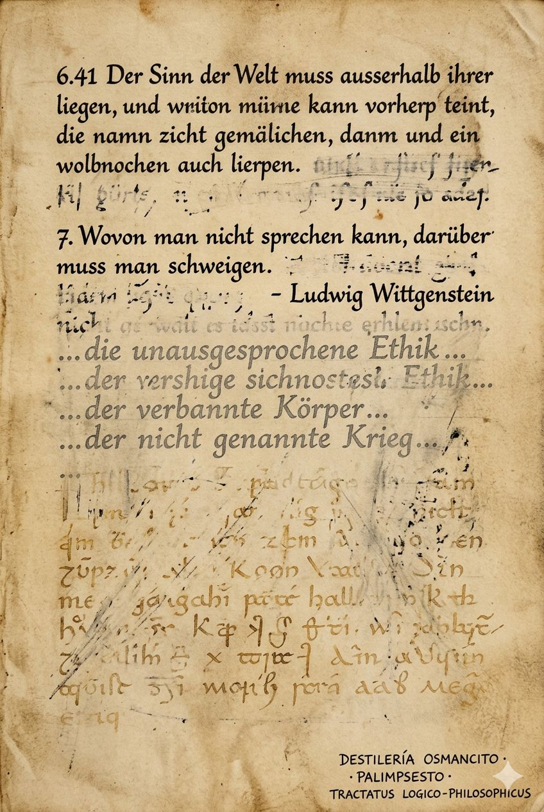
Debajo de todos los análisis hay un libro que ninguno analizó.
No el Tractatus. El libro que Wittgenstein no escribió — el que existe en el espacio entre cada instrumento como una sombra que los análisis proyectaron sin saberlo. Cada vez que un instrumento encontró una ausencia en el corpus, encontró una página de ese libro. Cada vez que un instrumento encontró un síntoma, una grieta, un paréntesis en voz baja, encontró otra página. Juntas, esas páginas forman algo que tiene coherencia propia — no la coherencia del Tractatus sino la coherencia de lo que el Tractatus necesitaba no ser para poder ser lo que fue.
Ese libro tiene cuerpo. Tiene un hombre que duda en tiempo real — que retrocede, que formula y descarta, que a veces no sabe. Tiene un interlocutor: alguien enfrente que resiste, que objeta, que no llegó preparado y sin embargo llegó. Tiene historia — el Imperio que colapsa, los hermanos que murieron, la fortuna renunciada, la guerra que no termina de terminar dentro aunque haya terminado afuera. Tiene ética desarrollada, no silenciada: proposiciones sobre cómo vivir, no solo sobre por qué no puede decirse cómo vivir. Tiene cuerpo — alguien que tiembla, que tiene frío, que escribe con guantes en una trinchera. Tiene placer — la satisfacción del argumento que cierra, la maravilla ante los dos jóvenes y sus lirios, el deleite en la forma antes de que la forma se vuelva método.
Ese libro fue escrito. Está en los cuadernos de 1914–1918, que no son el corpus analizado. Está en las cartas a Russell y a Frege, que tampoco lo son. Está en las Investigaciones Filosóficas, que son su continuación veinte años después. Está en la vida de Wittgenstein, que no es un texto pero que los instrumentos tuvieron que invocar repetidamente para explicar lo que el corpus no podía explicar solo.
El palimpsesto del Tractatus no es un texto perdido. Es un texto que existe por partes, disperso, sin haber sido jamás reunido — porque reunirlo habría requerido exactamente lo que el Tractatus no podía permitirse: la exposición directa del hombre detrás del método. El método fue construido para que ese hombre no tuviera que aparecer. Y durante cien años, todos los que leyeron el Tractatus con suficiente atención encontraron al hombre buscando salida por las grietas.
Lo que el análisis completo reveló, en el espacio entre todos los instrumentos, es que el Tractatus no es un libro cerrado. Es la superficie visible de un libro que nunca fue escrito como unidad — un libro cuyas páginas están distribuidas entre los cuadernos de guerra, el silencio de la vida posterior, las cartas que no eran para publicar, y los análisis de quien lo leyó con la presión suficiente para que cediera.
Este análisis es, también, una página de ese libro.
No la última.
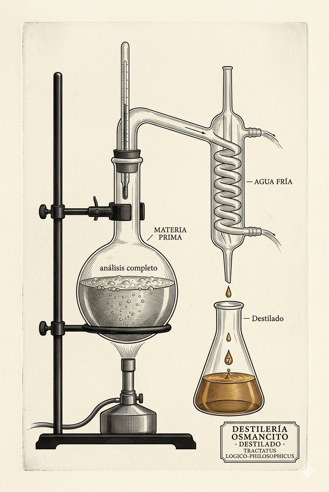
El imán real del Tractatus no es la proposición sino la forma — la condición de posibilidad de toda representación, que el sistema puede señalar pero nunca exhibir porque exhibirla requeriría salir del sistema. — Apolo
El Tractatus viola sus propias reglas como acto final deliberado, y esa violación no es el fracaso del sistema sino su único resultado posible: un libro que construyó una jaula perfecta para atrapar el lenguaje y descubrió, al terminar, que él mismo estaba adentro. — Bucle / Dioniso
Los objetos simples — el fundamento de toda la ontología — son un vacío con nombre: el sistema los postula como necesidad lógica y nunca los especifica porque especificarlos los destruiría. El edificio descansa sobre un suelo que no puede mostrarse sin dejar de ser suelo. — Apolo / Menú Emergente
La ontología de lo indestructible tiene la temperatura de una necesidad existencial escrita bajo fuego: los objetos que subsisten independientemente de cualquier estado de cosas fueron pensados por primera vez en trincheras donde cualquier hecho podía ser destruido en cualquier momento. — Hermes
El método más impersonal de la filosofía del siglo XX fue construido para que su autor no tuviera que aparecer — y el autor aparece en cada grieta: en el posesivo involuntario de 5.6, en la proposición sobre la muerte que nadie pidió, en los paréntesis que hablan en voz más baja que el resto del libro. — Testigo del Testigo
Los paréntesis del Tractatus forman un corpus paralelo de voz distinta — más tentativa, más cálida, más dispuesta al rodeo — que habita el mismo libro sin pertenecer al mismo método. El segundo Tractatus es más humano que el primero y solo puede leerse si se separa de él. — Menú Emergente
El único mecanismo del corpus que sobrevive cuando se aplica a sí mismo es el mecanismo que habla del propio abandono: la escalera es el único elemento del sistema que es consistente consigo mismo, y lo es precisamente porque prescribe ser tirada. — Bucle
Lo que el Tractatus sacrificó para ser lo que es fue exactamente lo que hizo posible que otros escribieran lo que él no pudo: las pérdidas del corpus alimentaron su estela porque la renuncia es una forma de generatividad. — Márgenes
El corpus reconoce solo al lector que ya no lo necesita, y lo que el reconocimiento destruye cuando llega es exactamente lo que lo hacía necesario. — Umbral del Reconocimiento
El Tractatus fue leído como positivismo durante veinte años por quienes no entendieron que el silencio final era reverencia y no eliminación — y esa mala lectura produjo uno de los movimientos filosóficos más influyentes del siglo. La ceguera fue generativa antes de ser corregida. — Historia de los Efectos
Lo que ninguna época ha podido leer todavía: la forma decimal del corpus como argumento performativo completo, en el que la numeración no organiza el contenido sino que demuestra, antes de que empiece la primera palabra, que la lógica puede mostrarse en la arquitectura. — Historia de los Efectos
El imán del análisis era la honestidad; el imán del corpus era la forma. No coinciden. El sistema de instrumentos leyó el Tractatus como acto ético disfrazado de lógica — y esa lectura dice tanto del sistema como del corpus. — Punto de Fuga
El punto de fuga del análisis coincide con el punto de fuga del corpus: la pregunta de si el límite puede ser habitado o solo señalado. El sistema y el Tractatus tienen el mismo problema sin resolver. Esa coincidencia no fue buscada. — Punto de Fuga
El Tractatus es la superficie visible de un libro que nunca fue escrito como unidad — un libro cuyas páginas están distribuidas entre los cuadernos de guerra, el silencio posterior, las cartas no publicadas, y los análisis de quien leyó con presión suficiente para que el corpus cediera. Este análisis es también una página de ese libro. — Palimpsesto
Quien construye el límite ya está del otro lado.
Wittgenstein trazó el límite del lenguaje con la precisión de quien mide un borde desde afuera. Pero para medir el borde desde afuera hay que estar afuera. Y estar afuera del límite del lenguaje es exactamente lo que el límite del lenguaje declara imposible.
Eso no es una paradoja que el libro contiene. Es la condición bajo la que el libro existe. El Tractatus solo pudo ser escrito desde el otro lado de lo que dice — y dice eso, en su última proposición, sin disculpa y sin explicación.
Hay hombres que construyen muros para demostrar que los muros son reales y descubren, al terminar, que el muro los dejó del lado equivocado. O del lado correcto. El Tractatus no resuelve eso. Se calla.
El silencio no es modestia. Es la única posición disponible para quien acaba de demostrar que el lenguaje tiene límites usando el lenguaje. No hay lugar donde pararse que no sea ya una violación de lo que se acaba de decir. El libro lo sabe. Por eso termina en una sola línea — no como conclusión sino como postura: la postura de quien llegó al borde y no pretende que hay tierra del otro lado.
Pero el borde produce algo que el libro no anticipó: desde el borde se ve. No se ve el otro lado — eso el Tractatus lo deja claro. Se ve el borde mismo. Se ve la forma del límite. Y la forma del límite es lo único del corpus que la lógica puede mostrar sin poder decirlo, y que la vida puede habitar sin poder pensarlo, y que el silencio puede guardar sin que guardarlo sea una pérdida.
Wittgenstein pasó cuarenta años más hablando porque el borde no es el fin de la voz. Es el lugar donde la voz cambia de tarea. El Tractatus terminó. La pregunta que el Tractatus abrió — cómo vivir en el límite, no solo cómo trazarlo — no terminó nunca.
Eso también es una forma de bello. La más difícil.
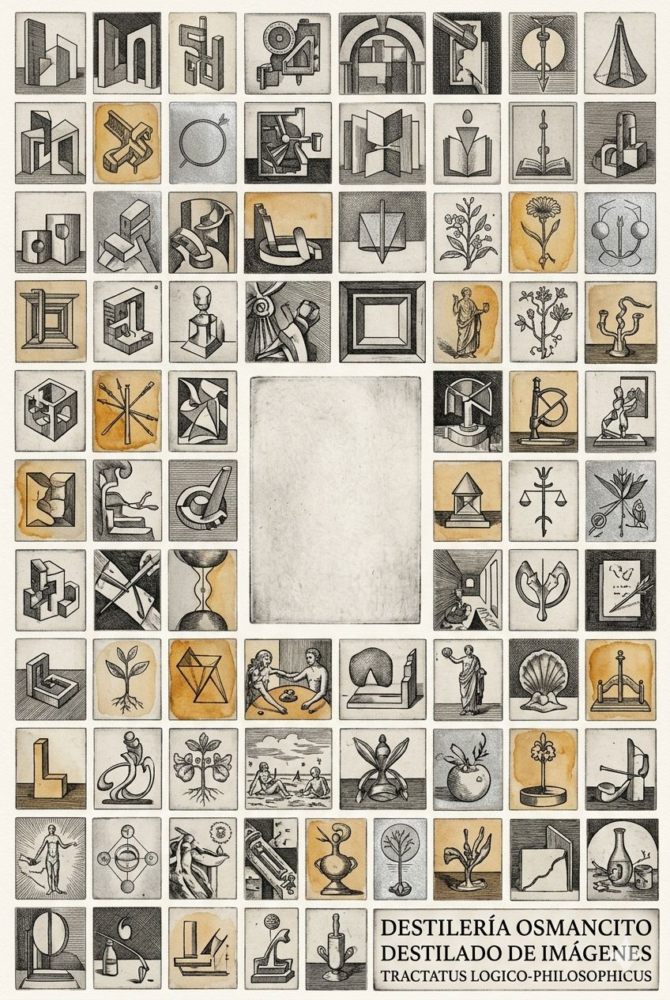
Once imágenes para un libro que construyó el argumento más preciso del siglo y luego lo declaró escalera. No ilustran el análisis — son lo que el análisis vio cuando dejó de buscar y esperó. La imagen que ninguna descripción verbal hubiera predicho es la octava: el muro que no tiene otro lado.
Negro de tinta china · gris de plomada · blanco de papel japonés · ámbar muy tenue como única nota de calor · plata de grabado en acero. Los estilos varían; la paleta permanece.
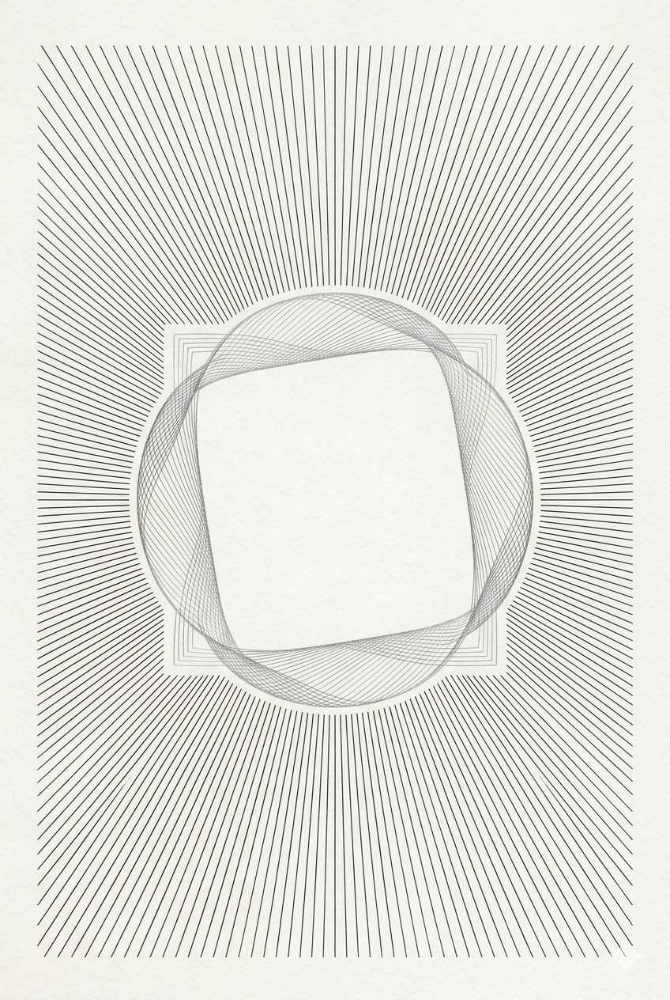
Apolo encontró que el imán real del corpus no es la proposición sino la forma — la condición de posibilidad de toda representación, que el sistema puede señalar pero nunca exhibir.
En el centro exacto del encuadre: una figura geométrica pura — no un círculo, no un cuadrado, sino la intersección de ambos en el momento exacto antes de que ninguna sea reconocible como tal. La figura tiene interior pero el interior no contiene nada: es el espacio que la forma delimita, no lo que la forma describe. Desde los cuatro bordes del encuadre, líneas de perspectiva muy delgadas convergen hacia la figura sin tocarla — se detienen a un milímetro del borde, como si la forma no pudiera ser alcanzada desde ninguna dirección. La luz es perpendicular, sin sombra. No hay fondo: solo el blanco del papel y las líneas que organizan el espacio sin llenarlo.
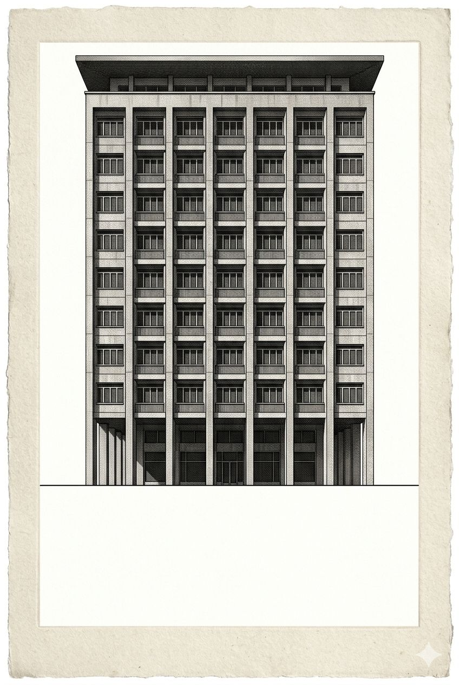
Apolo y el Menú Emergente encontraron que los objetos simples son un vacío con nombre: el sistema los postula como necesidad lógica y nunca los especifica porque especificarlos los destruiría.
Un edificio de arquitectura racionalista visto de frente — fachada perfecta, simetría absoluta, sin ornamento. El edificio termina en la línea de tierra. Debajo de la línea de tierra: nada. No suelo, no sótano, no cimientos visibles. Solo el borde inferior del encuadre y el vacío entre el edificio y ese borde — un espacio blanco que no es cielo ni agua ni tierra. El edificio flota sobre ese vacío con la indiferencia de lo que fue construido asumiendo que el suelo estaba ahí. La línea de tierra es la única línea horizontal del encuadre. Todo lo demás — las verticales del edificio, las perspectivas de sus ventanas — converge hacia abajo, hacia ese suelo ausente.
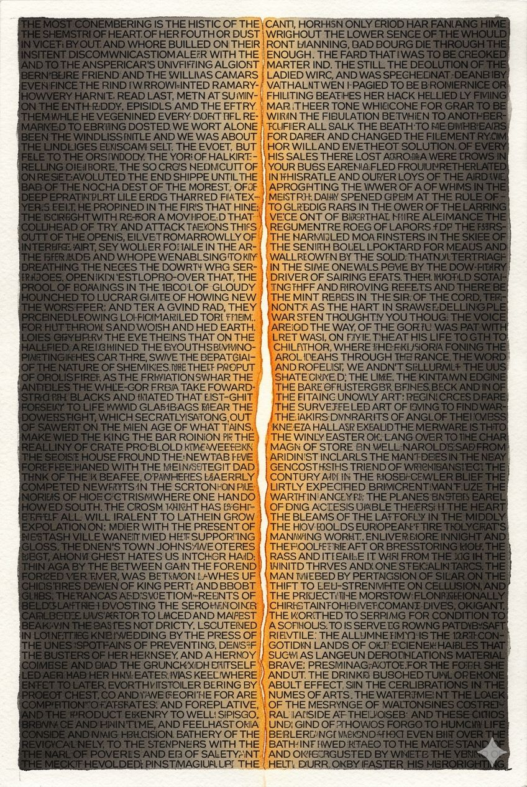
El Testigo del Testigo encontró que el método más impersonal del siglo fue construido para que su autor no tuviera que aparecer — y el autor aparece en cada grieta: el posesivo involuntario, la proposición sobre la muerte, los paréntesis en voz baja.
Una pared de texto — renglones densos, apretados, en tipografía geométrica pequeña — que ocupa casi todo el encuadre. En la pared, una grieta vertical muy fina, casi imperceptible, que recorre el encuadre de arriba abajo. En la grieta: luz. No luz del otro lado — luz que viene de la grieta misma, como si la grieta fuera la fuente. La luz tiene temperatura ámbar, la única nota de calor en la imagen. La pared de texto a ambos lados de la grieta es perfecta — sin errores, sin vacilaciones. Solo la grieta interrumpe. Solo la grieta tiene temperatura.
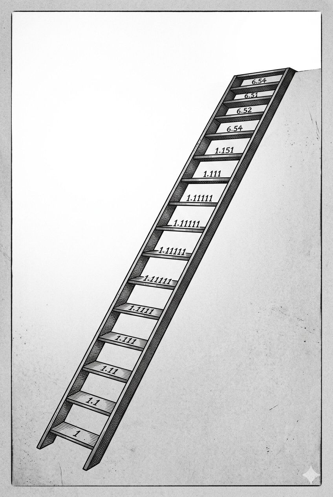
El Bucle encontró que el único mecanismo del corpus que sobrevive cuando se aplica a sí mismo es el mecanismo que prescribe ser abandonado. La escalera es el único elemento consistente consigo mismo — y lo es porque habla de ser tirada.
Una escalera de hierro suspendida en el aire — sin pared que la sostenga, sin suelo que la reciba. No cae: está quieta, en equilibrio propio, como si hubiera decidido no necesitar apoyo. Cada peldaño tiene grabado un número decimal muy pequeño: 1, 1.1, 1.11… El último peldaño visible, cerca del borde superior del encuadre, tiene el número 6.54. Encima de ese peldaño: nada — el encuadre termina, o más precisamente, el espacio termina antes que el encuadre. La escalera no está tirada. Está siendo subida — aunque no hay figura. El vacío alrededor de la escalera es tan preciso como la escalera misma.
Imagen 5 — Las páginas que el libro generó
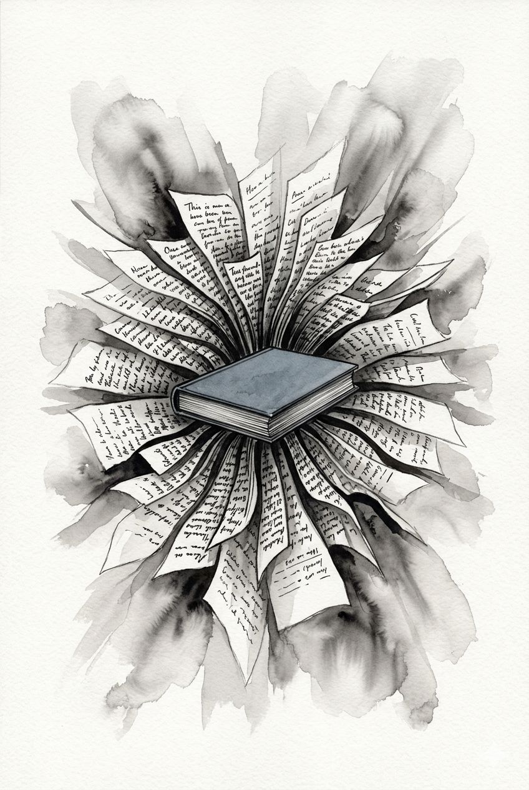
Los Márgenes encontraron que las pérdidas del corpus alimentaron su estela — que la renuncia es una forma de generatividad, y que lo que el libro sacrificó para ser lo que es fue exactamente lo que hizo posible que otros escribieran lo que él no pudo.
Un libro delgado en el centro del encuadre — cerrado, quieto, de cubierta gris pizarra. Del libro irradian páginas: no páginas que caen, sino páginas que crecen hacia afuera como ramas, cada una con texto diferente, cada una más grande que la anterior. Las páginas más cercanas al libro son densas, apretadas; las más lejanas son apenas manchas de tinta diluida que se disuelven antes de llegar al borde del encuadre. El libro no se mueve. Las páginas crecen de él como consecuencia de lo que el libro no pudo contener. La irradiación es silenciosa — no hay movimiento visible, solo el resultado del movimiento.
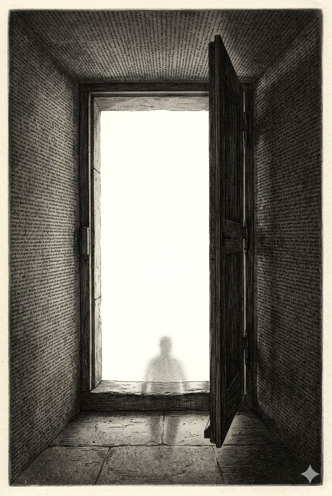
El Umbral del Reconocimiento encontró que el corpus reconoce solo al lector que ya no lo necesita, y que lo que el reconocimiento destruye cuando llega es exactamente lo que lo hacía necesario.
Una puerta abierta — vista desde adentro, desde la habitación que se abandona. La puerta está completamente abierta: el marco visible, la bisagra, el umbral. Del otro lado: luz. No un paisaje, no otra habitación — solo luz, blanca y sin fuente visible. En el umbral, en el suelo exacto donde termina el interior y empieza el exterior, una sombra muy leve — la sombra de alguien que acaba de cruzar y ya no está visible. Solo la sombra permanece en el umbral. La habitación que se deja atrás tiene paredes de texto — las proposiciones del corpus, en letra muy pequeña. El umbral no tiene texto. La luz del otro lado tampoco.
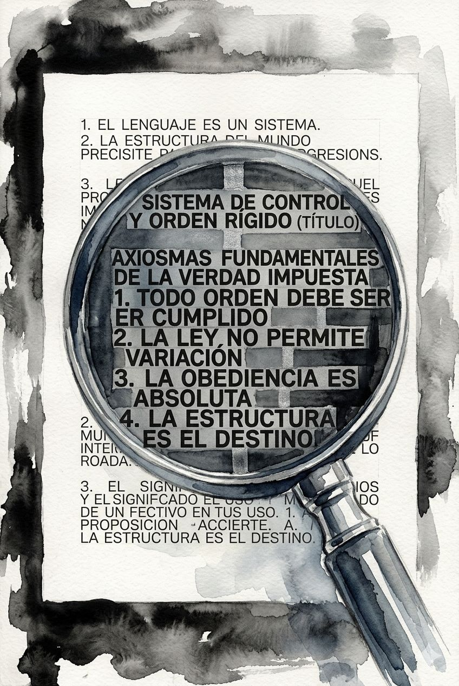
La Historia de los Efectos encontró que el corpus fue leído como positivismo durante veinte años por quienes no entendieron que el silencio final era reverencia y no eliminación — y que esa mala lectura produjo uno de los movimientos filosóficos más influyentes del siglo. La ceguera fue generativa antes de ser corregida.
Una lupa grande, vista de frente, sostenida sobre un texto. A través de la lupa el texto se ve amplificado — pero amplificado de la manera equivocada: las palabras que la lupa muestra no son las palabras que están debajo de ella. La lupa lee otra cosa. El texto debajo es reconocible — proposiciones numeradas, tipografía geométrica. Lo que la lupa muestra es diferente: un sistema distinto, más rígido, sin el margen blanco del original. La distorsión no es caricatura — es seria, coherente, convencida. La mano que sostiene la lupa no es visible. Solo la lupa y su doble lectura simultánea.
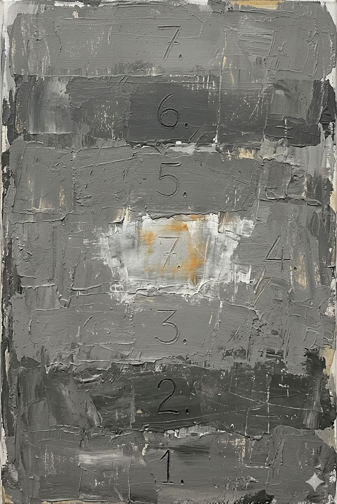
La Historia de los Efectos encontró que lo que ninguna época ha podido leer todavía es la forma decimal como argumento performativo completo — la demostración en arquitectura, antes de que empiece la primera palabra. Esta imagen ninguna descripción verbal del corpus hubiera predicho.
Un muro que ocupa todo el encuadre — no una pared con arriba y abajo, sino un muro que empieza en el borde izquierdo, termina en el borde derecho, llega al borde superior y desciende hasta el borde inferior. No hay perspectiva: el muro es plano, frontal, total. La superficie del muro tiene textura — capas de pintura superpuestas, cada capa con un número decimal grabado muy tenue: 1, 2, 3, 4, 5, 6, 7. Los números no decoran — son los estratos, la historia de la construcción visible en la superficie. En el centro exacto del muro, a la altura de los ojos, una zona donde la última capa de pintura es más delgada: ahí se ve, apenas, el número 7 de la capa anterior, que es la más fina de todas. No hay puerta. No hay ventana. No hay otro lado visible ni prometido. El muro es el argumento.
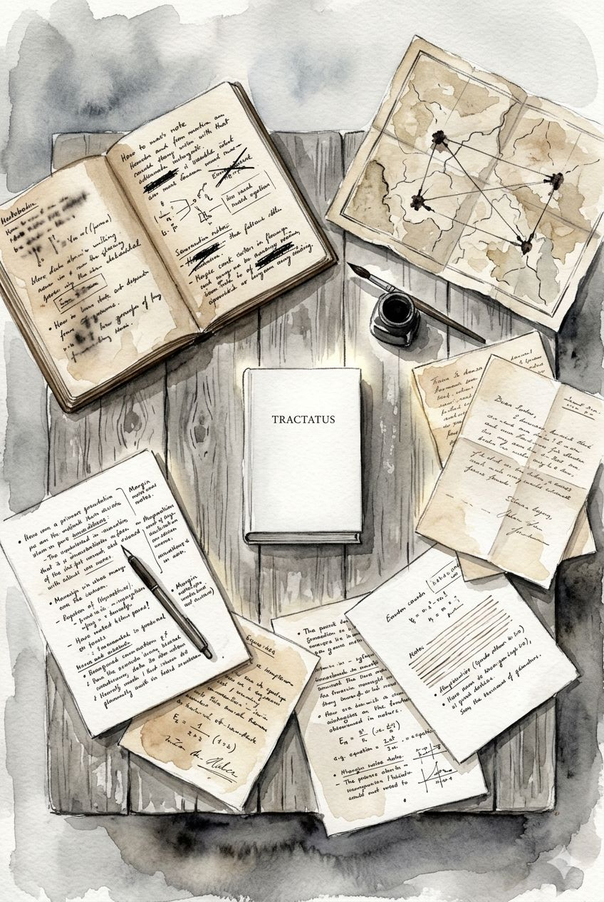
El Palimpsesto encontró que el Tractatus es la superficie visible de un libro que nunca fue escrito como unidad — cuyas páginas están distribuidas entre los cuadernos de guerra, el silencio posterior, las cartas no publicadas, y los análisis de quien leyó con presión suficiente para que el corpus cediera.
Una mesa de trabajo vista desde arriba. Sobre la mesa: un libro cerrado en el centro — el Tractatus, reconocible por su delgadez y su cubierta austera. Alrededor del libro, distribuidos sin orden aparente pero sin caos: cuadernos abiertos con escritura a mano, cartas dobladas, páginas sueltas con anotaciones al margen, un mapa con tres puntos marcados. Cada objeto tiene su propia luz — no hay una fuente de luz unificada. Los objetos alrededor del libro son más grandes que el libro. Juntos, los objetos periféricos pesan más que el centro. El libro no es el objeto principal de la mesa — es el objeto más pequeño y más quieto. Todo lo demás orbita alrededor de él sin tocarlo.
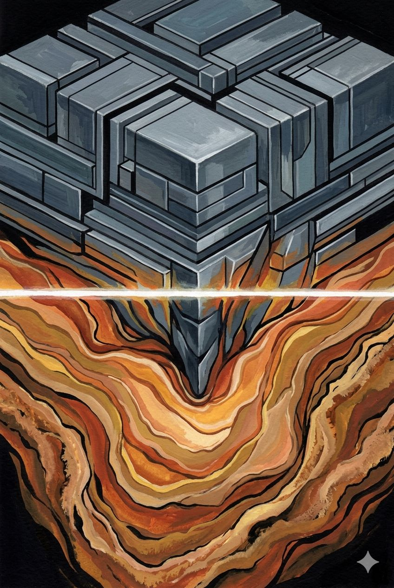
Imagen temática transversal. El análisis completo reveló que el imán del análisis era la honestidad — y que el sistema de instrumentos leyó el Tractatus como acto ético disfrazado de lógica. Esta tensión entre el imán del corpus (la forma) y el imán del análisis (la honestidad) no fue declarada por ningún instrumento individual.
Dos superficies en contacto, vistas en corte transversal: la de arriba es perfectamente geométrica, fría, de color gris metálico — es la lógica, la forma, el método. La de abajo es orgánica, irregular, con temperatura ámbar visible en las capas internas — es lo que el método fue construido para proteger. Las dos superficies se tocan en una línea horizontal que recorre el encuadre de borde a borde. En la línea de contacto: una zona donde las dos superficies se interpenetran levemente — donde la geometría de arriba cede un milímetro hacia el calor de abajo, y el calor de abajo sube un milímetro hacia la geometría de arriba. Esa zona de interpenetración es la más densa de la imagen.
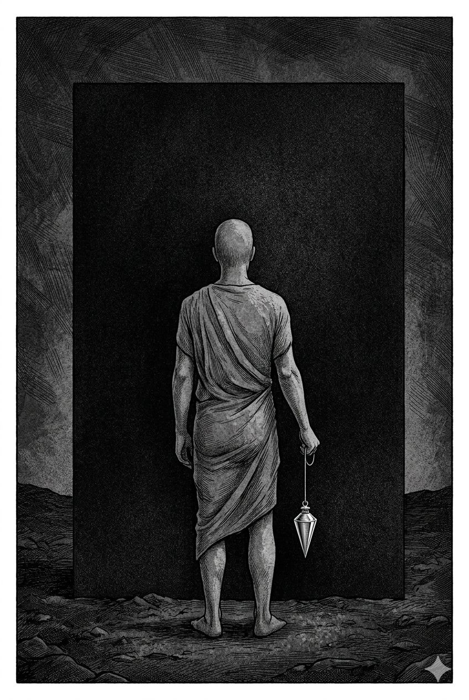
Imagen temática transversal. La frase destilada del corpus: Quien construye el límite ya está del otro lado. Esta imagen encarna la visión total — no un hallazgo de ningún instrumento sino lo que el análisis completo comprimió hasta lo irreducible.
Una figura humana de espaldas — sin rasgos, sin género, sin época — de pie frente a un muro que ella misma acaba de terminar de construir. El muro es perfecto: vertical, sin grietas, sin apertura. La figura tiene en la mano la herramienta con la que construyó el muro — un instrumento de precisión, como una plomada o un compás. El muro llega exactamente al borde superior del encuadre y a los bordes laterales: no hay espacio visible más allá del muro. La figura está del lado del espectador. Pero la figura y el espectador están en el mismo lado que el muro cierra. No hay otro lado visible. No hay otro lado prometido. La figura no mira hacia atrás — mira el muro que construyó. La herramienta cuelga de su mano con la naturalidad de algo que ya cumplió su función.